生成时间：2026-09-23T12:40:06+08:00
今日保留论文数：15
内容构成：今日新文 15 篇；补充推荐 0 篇；经典旧文精读 0 篇
高能天体物理重点
1. A Multi-Mission Detection Framework for High-Energy Transients: Application to a 13-year Fermi/GBM and Swift/BAT Sample
- 来源：arXiv / astro-ph.HE
- 链接：https://arxiv.org/abs/2609.25672
- 作者：Ariel Perera, Barak Zackay, Tejaswi Venumadhav
- 评分：novelty 9/10，importance 9/10，relevance 10/10，final 10.00/10
- 推荐理由：GBM/BAT十三年联合触发概率框架直接服务弱瞬变与中微子/GW对应体，60%体积收益须限定最佳条件。
中文题目：用十三年 Fermi/GBM 与 Swift/BAT 数据校准多任务弱高能瞬变联合搜索
做了什么：作者研究一个常见的漏检情形：同一次伽马射线瞬变在两台卫星上各自都不够显著，但两份相互独立的观测放在一起，可能足以支持它们来自同一真实事件。论文使用2013—2025年的 Fermi 伽马射线暴监视器（GBM）触发，以及 Swift 爆发警报望远镜（BAT）的计数率数据，在两台仪器信噪比平方组成的平面上比较同时配对与错时配对的密度，构造共同天体物理来源的后验概率。这里的联合是统计量层面的联合，并没有重新对两台仪器的全部光子建立一个相干似然。
在联合概率大于0.9的样本中，作者估计有1686±75个同时配对、59±11个归一化背景配对，对应污染比例0.035±0.006；误差来自1000次自举。在独立 BAT 暴表交叉核验中回收155例，其中135例达到联合概率0.9，29例高概率事件不在 GBM 暴表中。这些结果支持低阈值触发共享的价值，但不等于发现了同样数量的新暴。文中短暴探测体积最多增加约60%的估计采用欧几里得距离标度并忽略实际朝向和响应，代表有利条件下的潜力，不能当作全天网络的实测平均收益。
为什么重要：弱事件搜索的困难既是信号微弱，也是低阈值下偶然符合数量迅速增长。单纯要求两台仪器都通过各自高阈值会丢掉信息，单纯看两条光变同时有凸起又会高估关联。本文用错时样本直接估计这种偶然符合，并让联合概率同时依赖两侧证据，因此既能提升双弱事件，也能压低单侧强、另一侧不支持的配对。科学进展是给出可校准的关联排序及污染评估，而不是宣称已经找到新的引力波或中微子对应体。
理论 / 观测 / 仪器方法价值：可复用部分是以同时/错时密度构建经验混合模型，再把后验关联概率、阈值以上污染比例和假警报率分开报告。它适用于有连续计数率、可靠时间戳及足够背景样本的任务组合。迁移前必须重做时间窗、曝光、响应与背景标定；GBM 的信噪比记录下限5.1和最长6.573秒模板决定了当前样本能覆盖什么，不能把这张二维概率图直接套到其他仪器或长时标瞬变。
为什么应该关注：对高能中微子或双中子星并合跟踪，未触发卫星的低显著性计数率仍可能携带有价值的信息。本文提供了从零散弱迹象走向可量化证据的具体做法，也提示 IACT/LACT 的多仪器协同时必须明确哪一台仪器负责播种候选、另一台的视场是否实际覆盖目标，以及最终统计量是关联概率还是发现显著性。下一步值得关注的是把定位、持续时间和能谱一致性加入模型，以及用完整光子事件数据进行真正的联合似然搜索。
展开详细解读：文章讲解、背景、理论、重点章节、图表与相关工作
文章详细讲解
科学问题：多信使天文学需要寻找越来越暗的高能对应体，但单台卫星的独立探测阈值会截去大量信息。真实短暴可能在 GBM 和 BAT 中分别只产生中等显著性的信号；另一方面，GBM 的真实天体事件也可能根本不在 BAT 编码视场内，此时 BAT 同时的弱涨落不能算对应体。论文要回答的是某一对信号是否具有共同天体物理来源，而不是判断某个真实暴是否必然能被另一台仪器检出。
作者怎么做：先沿用 GBM 的相干泊松匹配滤波搜索，把所有14个探测器及能道信息压缩为触发统计量，再在相同时间附近读取 BAT 计数率。随后把 GBM 时刻移动250秒，以同一处理方法产生不相关配对。二维直方图在对数分箱后经高斯平滑和三次样条插值，比较同时样本超出归一化错时背景的比例。利用背景主导区域确定归一化系数，避免把两类样本总数不同误认为真实事件过量。
关键结果：联合概率等于0.9的等值线进入两台仪器各自都未到0.9阈值的区域。GRB130327A是直观例子：GBM和BAT分别为0.82、0.69，联合后达到0.93；这不是将两个概率相加，而是该二维位置上的同时事件密度相对错时密度更高。相反，一例 BAT 概率0.93而 GBM 近乎零的配对，联合概率仅0.13，其 GBM 定位还落在 BAT 编码视场外，说明方法能够惩罚不一致。
局限和下一步：搜索由 GBM 信噪比至少5.1的触发播种，因此 BAT 很强但 GBM 没有被记录的事件无法恢复。最长模板仅6.573秒，长暴的缓慢变化还可能被背景漂移校正吸收，低联合概率不能否定暴表对象的天体物理性质。概率图边界外使用最近邻外推，平滑、背景污染和源类别混合均影响校准。作者建议加入定位、光谱及探测器响应，最终直接联合事件数据；这些是发展方向，本文尚未完成。
关键结果是怎么做出来的
第一步是确定选样。GBM 搜索使用2013—2025年连续时间标记事件数据，能谱模板来自仪器响应折叠后的 Band 谱，时间模板采用对数间隔方窗，使相邻模板的信噪比损失不超过7%。单次触发的统计量按各模板零假设蒙特卡洛分布转换为等效高斯信噪比。这一预标定很重要：二维坐标不是原始光子数，也不能假定所有持续时间及能谱类别具有同一个独立阈值。
第二步是构造可比背景。BAT 有0.064、1.0和1.6秒分辨率的计数率，随 GBM 触发寻找相容持续时间并允许一个时间箱的偏移。错时控制采用250秒偏移，尽量保留相近背景条件；同时和错时样本仍可能因数据可用性而数量不同。全文给出49504个同时配对、40536个错时配对，总数比1.22；在背景主导小区域中计数3303与2925，得到归一化系数1.13及约7.5%的总体真实关联比例。
第三步是用密度图定位可信过量。方法主要在 GBM 信噪比平方不超过150、BAT 不超过60的区域估计概率。原始高信噪比分箱稀疏，直接相减会产生零计数和不稳定比值，因此先平滑再插值，并将超出物理范围的估计截到0—1。图3的弯曲等值线展示联合证据的收益，但也意味着概率是样本和密度估计共同决定的，不能被误读为一个与选样无关的普适显著性公式。
第四步是独立暴表验证。配对要求触发时间落在 BAT 的 $T_{90}$ 区间并向两侧各放宽1秒，同时 GBM 最大似然定位距 BAT 位置小于30度。155个匹配中135个超过0.9；将暴表时刻偏移正负1000、2000及10000秒后，平均约2个假匹配。这约1%的暴表匹配污染与全体候选3.5%的统计污染是不同样本、不同定义，不能混写为同一个纯度。
第五步是评估总体污染和收益。表1在0.9阈值给出污染0.035±0.006和假警报率6.68±1.30每年，观测时长以 GBM 暴表跨度乘0.65近似处理地球遮挡与南大西洋异常区。表2把阈值下降换算为敏感体积，不同类别收益不同；常规GRB类别最大约60%，混合GRB/SGR第三类列有89%，二者口径不能互换。低独立阈值类别可能没有收益。
第六步是检查稳健性。附录B将平滑核由2箱改为1箱，阈值以上数目从1652变为1651；改为4箱则降到1466，减少11.3%。表1中心值与这里的单次平滑测试计数并不相同，摘要中应保留各自出处而不强行拼成一套。1000次自举用于表1误差，不能自动覆盖真实背景污染、空间响应或共同系统误差。
展开背景、理论、公式、模型和章节导读
背景知识
伽马射线暴是高能瞬变，短暴与致密双星并合的关联使它成为引力波对应体搜索的重要对象。若同类事件更远，地球接收通量更小，尽管望远镜或引力波网络可能找到其位置，伽马卫星仍未必独立触发。因此“没有卫星公告”与“该时刻没有任何高能信息”是两回事，连续数据允许事后寻找更弱的证据。
GBM 用分布在卫星上的多个探测器感受不同方向的入射信号，BAT 则具有编码孔径成像能力。本文只使用后者较粗的率数据，而非充分利用成像层面的定位信息。两台卫星都在近地轨道，会受到地球遮挡、姿态和运行状态影响；同时运行不代表每个天区始终由两台仪器共同看见，也不保证同一种能谱在两台仪器上的显著性相同。
传统星际网络主要利用亮暴到达不同飞行器的时间差来改善定位。这里的目标有所不同：通过低阈值事件的统计符合提升关联可信度，尤其处理单仪器阈值以下的事件。定位网络的成功不能直接证明弱事件网络的背景已经被控制；后者必须量化大量搜索时间窗、模板以及偶然符合带来的负担。
统计上，真实信号与背景不是通过某条任意的信噪比界线天然分开的。经验错时法利用真实仪器噪声和运行条件建立偶然符合样本，优点是不要求背景完全服从简单高斯模型；代价是错时必须破坏共同天体信号而尽量保留其他统计特征。若错时窗口含另一个真实暴、仪器异常或不同背景状态，估计的背景仍可能偏离理想控制样本。
基础理论 / 方法脉络
第一层是匹配滤波：在给定能谱、时间轮廓和响应下，比较有信号与仅背景的计数模型，利用各探测器和能道应该如何共同变化来积累证据。GBM 单仪器内部采用了相干泊松统计，但本文跨仪器联合的是已经压缩的检测统计量；这两个“联合层级”要分清，否则会误以为文章已经做了完整网络光子拟合。
第二层是贝叶斯关联。令 $s$ 表示两台仪器看到同一瞬变，$n$ 表示不共享来源，二维坐标为两侧信噪比平方。即使 GBM 事件本身真实，只要 BAT 的涨落与它无关，就属于 $n$。因此 $p_{\rm joint}$ 是关联后验，不是单侧真实性、检测效率或频率学派尾概率；它的绝对数值依赖真实关联和偶然符合在当前样本中的相对率。
第三层是混合模型可识别性。同时样本是信号加背景，错时样本提供背景形状，但二者曝光或有效样本数可能不同。必须先求背景缩放因子，才能将过量密度解释为信号。作者在低信噪比区域假定真实关联可以忽略，据此标定缩放；若这个假定失效，整个概率面的绝对校准会偏移，而不仅是某几个高显著性事件受影响。
第四层是从局部概率到总体样本质量。某一点上的关联概率和阈值以上所有事件的平均污染不是同一量；后者需要在所选区域积分。同时，污染比例是无量纲的，假警报率必须除以有效观测时间。再从检测阈值推体积时还需额外假定源光度、距离律和方向响应，这些物理条件并不包含在二维概率校准中。
公式与推导
以下前三步对应正文式(1)—(2)及附录A，后半部分连接表1、式(3)；标度展开为明确标记的教学补充。令 $x=(\rho_{\rm gbm}^{2},\rho_{\rm bat}^{2})$，$\rho$ 为经单仪器标定的无量纲信噪比，$s$ 与 $n$ 为共同来源及偶然配对假设。贝叶斯定理给出
这里 $f=p(s)$ 是当前同时样本的关联先验。它不是某一物理源总体的宇宙发生率，换选样后需要重新估计。
同时样本的归一化密度满足
$H_0$ 是错时控制，使用其密度替代偶然符合形状要求错时后背景统计可比。将此混合式代入上式，便可消去未知信号密度，这是方法能直接使用数据而无需逐个模拟全部弱暴种群的原因。
以 $N_1,N_0$ 为两类总数，$n_1,n_0$ 为相同坐标测度下的数密度，定义
$\alpha$ 无量纲，使分子分母具有相同计数密度单位。分母很小时估计不稳定，因而需要平滑；数值截断到0—1是估计处理，不能代替模型成立的证明。
对无真实关联的控制区域 $R$ 积分，得到作者实际采用的校准式
由总数比可反推 $f=1-\alpha N_0/N_1\simeq0.075$。原文区域为 $|\rho_{\rm gbm}^{2}-35|<2$、$|\rho_{\rm bat}^{2}-5|<2$；这个选择是概率绝对校准的关键假设，应单独检查其信号泄漏和背景代表性。
选择所有 $p_{\rm joint}>p_*$ 的事件后，总体背景比例与假警报率分别为
前者无量纲，后者以每年计；本文采用 $T_{\rm obs}=0.65\,T_{\rm span}$。因此0.9后验阈值不能直接翻译成10%的实测样本污染或某个固定高斯显著性。
教学补充：若在给定背景与模板条件下 $\rho\propto F$，且局域欧几里得几何中 $F\propto d^{-2}$，则
这是光子计数型高能搜索在本文假设下的标度，不能照搬引力波振幅随距离的规律。它要求比较同类事件，且暂不计宇宙学、视场和响应变化。
因图中使用的是 $\rho^2$，作者正文式(3)写成
例如GRB1独立阈值103，在指定BAT信噪比平方25时联合所需GBM阈值55，代入得到约60%的体积增加。55与103都是信噪比平方，不是通量、距离或事件数；这一步只能说明有利观测条件下的阈值潜力。
模型拟合 / 应用方法
输入不是原始两卫星联合事件列表，而是 GBM 候选与 BAT 率数据得到的一对信噪比平方。作者先限制事件类别为 GRB、SGR 或两者不确定，再在规定二维范围建立同时和错时直方图。因此候选定义、单仪器漂移校正和记录下限都是模型的一部分；若迁移到不同类别或更长时间尺度，应从这些输入环节重新验证。
拟合采用经验密度估计：两轴对数分箱、高斯平滑、双变量三次样条，再在稠密网格计算关联概率。缩放系数由背景区域计数比确定，而非任意调节以提高新事件数量。网格外最近邻外推相当于保留边界概率，不能宣称在未建模的高信噪比区域重新求得了精确后验；在高一侧、低另一侧的角落尤其需要检查。
误差评估对同时与错时触发有放回抽样，重复完整估计流程1000次，得到表1的1σ不确定度。平滑宽度测试另外揭示偏差与方差的取舍：窄核保留更多细节但轮廓起伏，宽核使0.9轮廓向更高信噪比移动并减少候选。自举并不自动处理共享背景、重复事件相关性或源类型先验错误，不能把这些误差解释成所有系统项都已覆盖。
实际应用还要分层诊断。先检查概率图和控制区域，再比较阈值以上背景占比，最后用独立暴表和定位一致性检验具体事件。论文给出了这些互补检查，但没有提供端到端覆盖全部天空朝向、能谱及持续时间的网络注入回收效率。长暴低概率、真实瞬变污染错时样本、单侧仪器视场不覆盖等都可能让方法失效或收益降低，应保留为具体的适用边界。
图文核对仍留一项具体复现限制：图5低阈值累计数超过10万，正文全同时样本却列49,504对，已读正文未给足转换口径；图3原图标记配色也与英文图注不一致。本稿按表1引用高阈值计数及污染，不用图5低阈值端独立重建总体样本规模。
重点章节 / 结果段落怎么读
-
先读第II节，标出GBM记录下限、最长模板和BAT时间箱，明确什么事件从一开始就进不了联合搜索。将峰通量模板时长与 $T_{90}$ 区分，后者表示累计计数区间，二者不是相同测量。
-
接着读第III节及附录A，从关联假设到混合密度消元，逐步检查缩放系数1.13为何不等于全样本总数比1.22。这里决定后验概率的含义和校准前提。
-
第IV.1—IV.4节结合图3、4及暴表交叉匹配，看双弱事件提升和单侧不一致压低是否同时发生；这比只看高概率事件总数更能说明统计量在做什么。
-
第IV.5节将表1和表2分开阅读：前者是样本污染与假警报，后者是附加距离及响应假设下的体积推算。附录B再检查核宽度和自举误差，避免把理想收益写成测得的全网增益。
关键图表与解读
图3
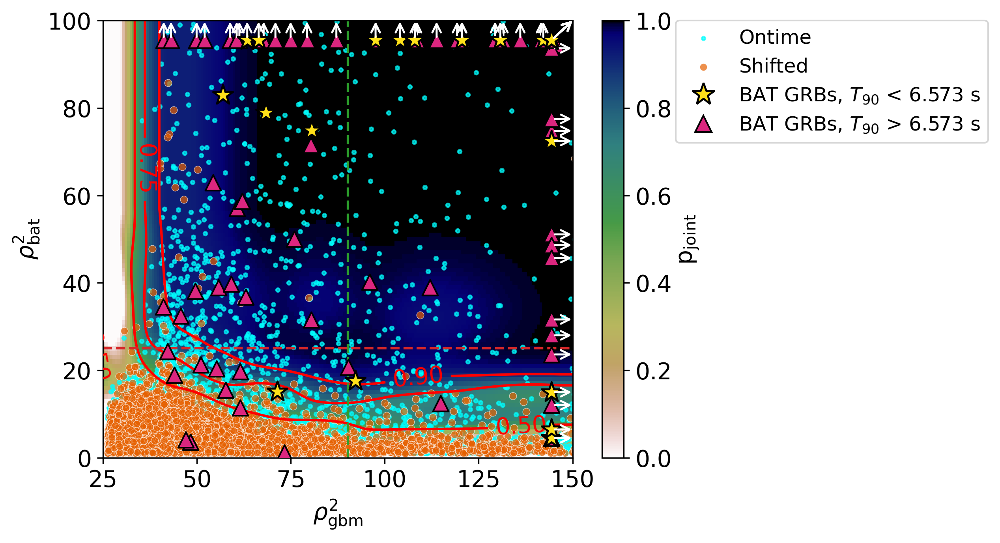
图注：联合概率 $p_{\rm joint}$ 的分布。色图显示二维联合概率分布，并叠加用于同时分布和错时分布的单个触发。图中给出0.5、0.75和0.9等值线，以及BAT和GBM中GRB5类别各自达到0.9探测概率的阈值，与图1相同。联合概率0.9等值线延伸到两台仪器独立0.9阈值线（红、绿虚线）交点以下，扩大了同时触发达到高可信标准的参数区域。白色星形和三角形对应BAT目录中的伽马射线暴，按 $T_{90}$ 大于或小于6.573秒区分；6.573秒是搜索中最长的时间模板。位于图示范围之外的暴用沿仪器信噪比增大方向的白色箭头表示。
怎么看这张图：图3是核心概率面的读法：先找两条单仪器0.9阈值线，再沿联合0.9等值线看它向两线交点内侧延伸多少。颜色代表共同来源的后验关联概率，星形及三角形是独立BAT暴表对象（当前原图为黄/洋红，原文图注称白色，保留这一图注配色差异）；高GBM、低BAT的位置不必高概率，因为关联需要双方共同支持。图中箭头标记范围外事件，不能视为在边界外重新测量了概率面。 图示BAT坐标延伸超过正文概率网格上限60，外侧须按作者最近邻外推理解。 显示共同来源后验及弱事件联合阈值，是本文核心方法结果。
来源与置信度：arXiv HTML；source verified；https://arxiv.org/html/2609.25672v1/pjoint.png
图5
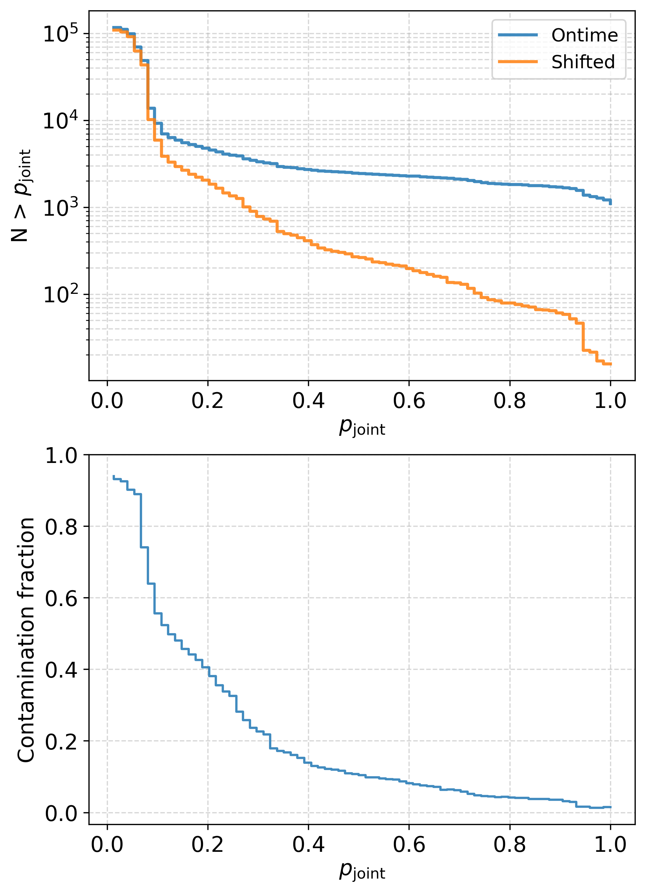
图注：触发污染评估。上图：利用图3得到的同时和错时分布，分别计算超过给定联合概率阈值的触发累计数。下图：超过给定联合概率的触发所对应的比值 $\alpha N_{\rm shifted}/N_{\rm ontime}$，即估计的污染比例。污染随联合概率升高而迅速下降，在 $p_{\rm joint}=0.9$ 时降至约4%。
怎么看这张图：图5用于检查候选集合的可靠性。上图比较阈值提高时同时配对与错时配对累计数的变化，下图是归一化背景占比；0.9附近约4%的图示应与表1的3.5±0.6%对应理解。它展示的是阈值以上集合的平均污染，不是每个候选的频率学派假警报概率，也没有包含全天方向相关的网络效率。 原图低阈值累计数超过10万，与正文所列49,504个同时配对的总数口径未能从已读说明中完全核对；本稿以表1报告高阈值结果，不据此图重算全样本总量。 展示阈值以上累计背景污染，约束联合概率的实际解释。
来源与置信度：arXiv HTML；source verified；https://arxiv.org/html/2609.25672v1/contamination_fraction.png
强相关工作
本文直接继承 Perera、Zackay 与 Venumadhav 的GBM短暴搜索方法，参考文献[20]《A New Search Pipeline for Short Gamma-Ray Bursts in Fermi/GBM Data—A 50% Increase in the Number of Detections》给出单仪器相干搜索基础（https://doi.org/10.3847/1538-4365/ae0189）。本篇的新层次是在两台仪器统计量的联合空间建立关联后验；单仪器内部的相干性不能自动推广为两台卫星间的相干分析。
参考文献[21]的十三年短伽马瞬变目录《Expanding the Population of Short Gamma-Ray Transients with a Coherent Fermi/GBM Search》（https://arxiv.org/abs/2605.31554）提供触发类别、单侧概率和BAT跟踪方案。当前论文由单侧核验推进到二维密度混合；表2沿用的类别阈值需要回到该目录理解，不能把不同类共享的联合阈值误认为每类都已独立优化。这里的关联链来自本文真实参考文献；未将目录所有事件重新精读。
同一事件 / 同类源线索：
相似工作：
（未提供）
基础理论 / 方法工作：
相反观点 / 张力线索：
（未提供）
2. IXPE observation of the new magnetar source EP J223759.5+531421
- 来源：arXiv / astro-ph.HE
- 链接：https://arxiv.org/abs/2609.25958
- 作者：Roberto Taverna, Lorenzo Marra, Roberto Turolla, Ruth M. E. Kelly, Silvia Zane, Alice Borghese, Francesco Coti Zelati, Paolo Esposito
- 评分：novelty 9/10，importance 9/10，relevance 9/10，final 10.00/10
- 推荐理由：新磁星IXPE相位分辨偏振区分冷热区并限制视线几何，需区分积分显著性与相位选择结果。
中文题目：新磁星的自转分相偏振：低平均偏振掩盖高局部偏振
做了什么：IXPE对爱因斯坦探针发现的新磁星EP J223759.5+531421进行了约200 ks观测，并与同时段EP/FXT能谱联合分析。作者先用约6秒自转周期把光子分成七个相位区间，再同时拟合强度与两个线偏振Stokes分量。2—7.5 keV整周期偏振度为7.42±1.77%，报告置信水平4.19σ；然而4—7.5 keV某些相位的偏振达到62.9±9.4%。低平均值并非表面处处弱偏振，而与偏振方向在自转过程中大幅变化、向量平均后抵消相容。
两黑体模型给出约0.45和1.05 keV的温度。旋转矢量模型拟合偏振角，得到视线与自转轴夹角约28°、磁轴与自转轴夹角约109°。作者用两个较冷的对跖区域和一个更热的小斑进行定性光线追踪，提出凝聚表面与磁化大气并存的解释。该模拟没有作详细联合拟合；含与不含真空双折射的预测差异小于当前误差，不能据此宣称检出了该量子电动力学效应。
为什么重要：以往能谱和脉冲轮廓能够提示多个温区，却难区分表面状态与视向几何。偏振补充了辐射方向信息，而且分相位分析避免把方向相反的贡献抵消为低信号。这篇工作的实质进展是把爆发期磁星的温区分解、偏振能量依赖和自转几何连接起来；凝聚表面仍是与数据相容的解释，尚不是唯一表面物态鉴定。
理论 / 观测 / 仪器方法价值：可借鉴的是在统一星历下联合分析强度、Q、U，并同时保留按能段和按物理谱分量拆分的两种结果。能段中的高温与低温分量彼此混合，不能直接把低能段偏振当成低温黑体的固有偏振。旋转矢量模型提供几何约束后，再用光线追踪检验表面模型能否同时产生双峰通量及偏振变化，比单独比较平均偏振更有诊断力。
为什么应该关注：对高能偏振研究，本文展示了时间平均造成的物理信息损失：偏振度小既可能来自局部发射机制，也可能来自有序几何在观测积分中的抵消。相位计时与能谱响应必须先对齐，才能讨论能量相关的偏振差异。后续最值得追踪的是爆发衰减时温区面积与分相位偏振是否同步变化，以区分表面冷却、磁层电流和磁场拓扑演化。
展开详细解读：文章讲解、背景、理论、重点章节、图表与相关工作
文章详细讲解
科学问题：磁星表面强磁场会使辐射的普通与非普通偏振模式具有不同传播和吸收性质；固态凝聚表面与气态磁化大气可产生不同偏振。观测又把多个表面区域及整个自转周期叠加，因此低平均偏振本身无法判断局部辐射是否高度偏振。新源在爆发期足够明亮，提供了把空间几何通过自转相位展开的机会。
作者怎么做：处理IXPE三个探测单元约六万净源计数，使用适合DU2故障后状态的校正，排查太阳耀斑背景，并在7.5 keV以上背景占优前截断分析。同期FXT-A提供较低能量覆盖。先拟合能谱，再在固定谱参数的条件下拟合Q、U；用独立pcube算法交叉检查。约6秒脉冲给出七个相位区间，使每区间仍有可用偏振统计。
关键结果：两黑体拟合优于但并未彻底排除黑体加幂律。相位平均低、高能段偏振分别约6.9%和12.5%，差异仅为提示；分相位后高能次峰附近达到约63%，低能通常不超过约30%。偏振角持续扫过−90°至+90°，用旋转矢量模型可很好描述，表明几何在解释平均偏振中不可省略。
局限和下一步：小热点即使不含真空双折射，也可能产生很高的净偏振；作者的光线追踪确实显示两种预测差别不显著。冷热区域分别指定10%和80%的固有偏振，黑体近似尚未包含自洽大气、凝聚表面的角分布。未来需用这些物理辐射模型与更长曝光共同检验，而不能把现阶段定性成功当作完整模型选择。
关键结果是怎么做出来的
数据层先控制响应与背景。IXPE源区半径80角秒，背景环120—240角秒；FXT只选谱标定较可靠的A模块，两次同期观测共10.3 ks。IXPE约200 ks覆盖多个自转周期，但并不意味着足以测量长期自转减速：它单独拟合的周期导数误差大于中心值很多，磁场推断使用外部较长基线计时，不应归功于本次短观测。
能谱层比较同一自由度的两分量模型。两黑体给出χ²/dof=674.27/694，黑体加幂律为687.50/694；后者低能残差有结构且要求更高吸收柱。双黑体温度0.449和1.048 keV，假定距离3.3 kpc时表观半径2.616和0.635 km。这些是谱模型的辐射半径，不是直接成像测得的热点几何尺寸；距离本身尚未确定。
偏振层先核验整体测量：三探测单元联合偏振7.42±1.77%，角度−2.09°且1σ误差约6.9°。单独DU1和DU2未超过99%最小可探测偏振阈值，DU3超过，联合结果不能要求每个探测器单独都有显著检出。能量线性变化模型的拟合改善未达显著，最有利的F检验零假设概率约10.37%，故相位平均能量上升只能称趋势。
分相位分析改变了可见信息。全能段七个相位中五个超过MDP99，其余显示3σ上限。高能段在0.71—0.86相位为61.37±9.39%，0.86—1为62.91±9.43%；不能把约63%写成全周期或所有热辐射的平均值。图6中三个能段偏振角趋势相近，而偏振度差别大，支持方向几何与局部辐射性质分开处理。
几何层用七个全能段偏振角拟合四参数模型，得到χ²/dof=1.698/3。两个未超过MDP99的相位仍有闭合的68%角度轮廓，作者将其1σ区间用于拟合；去掉其约束后所得参数在1σ内相容。广域MCMC找到16个形式解，作者解释为180°偏振歧义等对称变换的等价表示，不能宣传为16种独立被观测选中的磁场结构。
物理层采用质量1.4太阳质量、半径13 km、极区磁场4×10¹⁴ G的偶极星，加入广义相对论弯光与红移。两个约9°半开角对跖区加偏离磁极的小热斑，可定性重现双峰。QED开关的偏振度差别与误差相比很小，而且纯偶极设定使偏振角预测重合；这一步限制了论文能够声称的物理结论。
展开背景、理论、公式、模型和章节导读
背景知识
磁星是一类以强磁场演化为主要能量来源的中子星。爆发使原本暗弱的对象短时间增亮，可能由星壳内沉积能量和磁层电流重排共同推动。热辐射常来自非均匀表面，因此看到几秒周期双峰并不等于看到了两个完全相同、无遮挡的点状磁极。
线偏振既有大小也有方向。两个同样高度偏振、方向相差90°的光束，叠加后可能变成零线偏振；跨自转相位积分会产生类似抵消。因此相位平均7%与某些相位63%在逻辑上并不矛盾，它们回答的是不同观测窗口下的Stokes向量之和。
强磁场环境中，普通模式的电矢量位于光子传播方向与局部磁场张成的平面内，非普通模式垂直于该平面。大气的模式相关不透明度可使一种模式占优；凝聚表面则有不同发射率。能谱被黑体近似拟合不代表表面真的是理想黑体，更不自动说明存在气态大气。
真空双折射是强磁场下量子电动力学对传播的修正，不是一个额外热辐射分量。它能使不同表面区域的偏振沿磁场传播并在较大半径冻结，提高某些几何下的净偏振。但若原本只有很小斑点在发光，其偏振方向本来就相近，加入该效应造成的变化可能很小。检验它必须比较有无该效应的完整可观测预测。
基础理论 / 方法脉络
先把计时与偏振连接起来：星历将每个光子的到达时间映射到自转相位，统一相位零点后，EP能谱与IXPE偏振才对应同一视向。周期错误一倍会把两个磁极或两次扫掠混在一起；此源最初约3秒信号实际是约6秒基频的谐波，说明这一步不是形式操作。
其次把能谱分解与偏振向量结合。每个热分量有自己的强度、偏振度和方向，总Q、U由分量相加决定。能段跨越两黑体的贡献区时，低能观测并不等于纯冷分量测量。作者同时给出能段与谱分量偏振，正是为处理这种混合，但固定谱参数意味着不确定性传播仍有条件性。
旋转矢量模型假定所见偏振方向追踪旋转偶极在天空的投影。它主要利用角度随相位的形状推断视线、磁轴与自转轴关系，并不独自决定每个区域的温度、面积或偏振度。偏振角以180°为周期，拟合必须处理跨越−90°与+90°的连续性，不能把显示边界当作突然物理跳变。
最后用弯光模型把表面连接到观测。中子星强引力使可见表面多于平直空间的一半，并改变光子能量及角分布。本文在射线追踪中包含这些效应，但给出的温度和能量均按无穷远观测者定义。把谱半径直接画成表面角半径仍需几何、大气束射和红移处理，故数值示例只是近似相容性检验。
公式与推导
下列关系从光子的相位标记走到偏振几何。除最后的旋转矢量方程为原文式(1)，其余是用于解释作者处理步骤的标准教学关系，不是作者额外声称的新推导。
先用自转星历定义无量纲相位：
$\nu$ 的单位为Hz，$\dot\nu$ 为Hz/s，到达时间须先作质心校正。本文单次IXPE约束不了减速，但周期精度足以在本窗口分七相位；不能将这条局部星历无限外推。
对某个能量和相位区间，偏振的可加量为
$I$ 是强度，$p$ 是0到1的线偏振份额，$\psi$ 是天空偏振角。角度乘二来自电矢量方向的180°等价性。仪器实际还需响应与调制因子，关系本身是天体Stokes定义。
冷热成分及多个相位的积分遵循
这里$j$可代表谱分量或相位小区间。不能先平均各区间的$p_j$再作为总偏振，因为方向信息会被丢弃。
合成后的观测量为
如果两个等强等偏振贡献相差90°，其$Q,U$均相消。这给出了高分相位偏振与低积分偏振共存的直接解释；弱信号下偏振度有正偏，需使用概率轮廓而非仅取模。
标准背景受控计数近似下，
$\mu$为调制因子，$R_S,R_B$为源与背景计数率，$T$为曝光。这是理解分箱代价的教学式：减少每箱光子会提高探测阈值。它不是某次测量的1σ误差，低于阈值也不等于其Q、U完全没有信息。
两黑体谱归一化的基本标度是
这里表观温度和半径按远处观测量解释，$D$是距离。谱拟合首先给出半径与距离的比，采用3.3 kpc才得到千米数值；不确定距离使绝对半径按比例变化。有限能段通量还要积分对应黑体谱，不能直接当作全波段通量。
最后，原文用旋转矢量模型
$\gamma$为以角度表示的自转相位，$\chi$为视线对自转轴夹角，$\xi$为磁轴对自转轴夹角，$\Psi$为天空角度偏置，$\gamma_0$为相位偏置。分母和分子是旋转磁轴天空投影的两个分量；它因此能约束角度曲线，却不能仅凭良好拟合证明表面为凝聚态。把这个几何输入光线追踪，再比较$I,Q,U$才完成从几何到辐射模型的闭环。
模型拟合 / 应用方法
联合能谱的输入为0.5—10 keV FXT与2—7.5 keV IXPE数据，交叉归一化常数吸收仪器标定差异，吸收模型使用统一截面和丰度。双黑体与黑体加幂律同为694自由度，Δχ²=13.23只能说明在这里前者有更好的描述，不是所有非热模型的普遍排除。谱温度与吸收柱、归一化的相关性也决定了后续按谱分量拆偏振的解释范围。
偏振拟合固定强度谱参数，再用能量无关或线性偏振模型处理三探测器I、Q、U。固定参数有利于有限光子下稳定分解，但报告误差条件于该谱选择；不能把这组误差误读为已经边际化所有温区结构及吸收不确定性。pcube交叉核查在误差内一致，支持分析实现，却不会消除两种分析共用的响应系统误差。
RVM先用χ²确定几何，再用全范围平坦先验MCMC检查多模态，并在参考解附近作局部后验。视线角28.20±9.62°、磁倾角108.94±9.21°是该参考几何的约束，另有等价解。仅七个相位点意味着自由度为三，高能单独拟合第三相位点明显影响χ²；其角度误差较大但与全能段结果相容。
射线追踪没有对全部数据进行似然优化。模拟设冷区0.49 keV、10%非普通模式偏振，热斑1.1 keV、80%，其余表面0.12 keV且不偏振；150×150表面网格和偶极场只是所选基准。应把图9理解为该几何可行、QED开关当前难区分，而不是给出80%固有偏振的观测后验。原文分相位常数拟合报告的平均偏振形式误差极小，本解读不据此宣称超高精度，而采用表5各相位的实际误差。
重点章节 / 结果段落怎么读
-
第II—III节先检查背景、响应和星历，尤其区分约200 ks窗口的周期测量与外部长期减速估计。
-
第IV节图1和表1比较两谱模型，理解温度、表观半径和距离假设；再读图3辨认相位变化是否主要来自面积。
-
第V节图4—6从平均偏振走到分相位偏振，重点核对MDP99、上限和能量趋势的统计强弱。
-
第V节式(1)及图8核查角度周期性、等价几何和低显著相位的处理，不把MCMC多模态当作多个物理源。
-
第VI节图9比较QED开关，并读模拟没有自洽大气角分布的限制，这决定文章最终解释能走多远。
关键图表与解读
图6
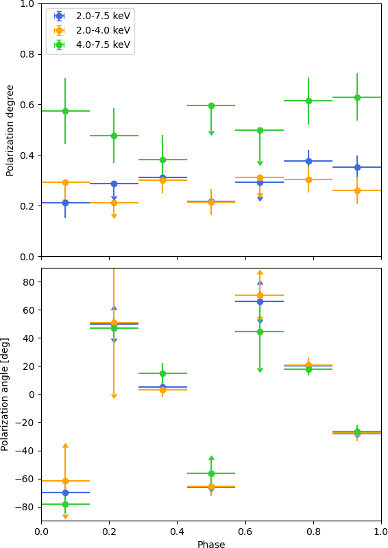
图注：2.0—7.5 keV（蓝）、2.0—4.0 keV（橙）及4.0—7.5 keV（绿）能段中，偏振度（上）与偏振角（下）随自转相位的变化。误差棒为1σ；低于MDP99的测量沿用图5约定：偏振度显示向下箭头标记的3σ上限，对应偏振角以双向箭头标记。
怎么看这张图：先比较同一相位的不同能段，留意高能次峰附近约63%的偏振与低能约30%的差别；角度却大致沿同一几何轨迹变化。上限不是测得的零偏振，跨−90°/90°边界也不是物理跳变。 分相位能量差异是主测量，解释低积分偏振。
来源与置信度：arXiv HTML；source verified；https://arxiv.org/html/2609.25958v1/pollapr_multiband.png
图9
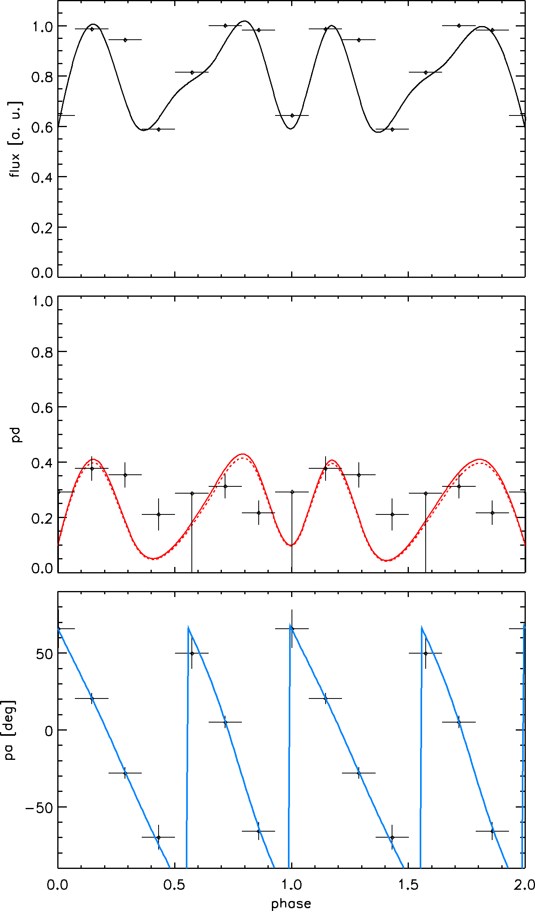
图注：光线追踪模拟的2.0—7.5 keV归一化通量（上，黑线）、偏振度（中，红线）和偏振角（下，蓝线）随相位的变化。实线包含真空双折射，虚线忽略该效应；黑色菱形及1σ误差棒为IXPE数据。低于MDP99的相位显示向下箭头标记的偏振度3σ上限，详见正文。
怎么看这张图：比较实线、虚线之间的差别与数据误差，而非只看模型能否出现双峰。该图是定性模拟，没有自洽大气角分布或联合最优拟合；QED开关差别不足以构成该效应的唯一证据。 直接限定表面与真空双折射解释的强度。
来源与置信度：arXiv HTML；source verified；https://arxiv.org/html/2609.25958v1/RT_simulation.png
强相关工作
同日发现论文Rea等《Einstein Probe discovery of the magnetar EP J223759.5+531421》（https://arxiv.org/abs/2609.25990）给出长一些的计时基线、宽带谱、短暴及射电上限。本篇与其共享部分IXPE/EP观测，不能相乘当作两次独立检验。发现论文的极区磁场与本文引用的初步计时值口径也需区分，不应把不同基线的结果当作同一精确常数。
旋转矢量模型沿用Radhakrishnan与Cooke（1969）的磁轴投影思想；表面解释与Kelly等（2024）磁星大气模式转换计算直接相关（https://doi.org/10.1093/mnras/stae159）。这类基础工作解释何以偏振依赖表面物态，但本篇尚未把自洽模型纳入全部数据拟合，因此保留其模型归属。爆发热演化可进一步对照De Grandis等（2025）的冷却模拟（https://doi.org/10.1051/0004-6361/202554666）；偏振提供几何信息，冷却模型提供温区演化，两者互补而非已经在本文完成联合验证。
同一事件 / 同类源线索：
相似工作：
基础理论 / 方法工作：
相反观点 / 张力线索：
（未提供）
3. Einstein Probe discovery of the magnetar EP J223759.5+531421
- 来源：arXiv / astro-ph.HE
- 链接：https://arxiv.org/abs/2609.25990
- 作者：N. Rea, F. Coti Zelati, A. Borghese, Y.L. Wang, H. Yang, X. Mao, C.-Y. Dai, E. Arrigoni
- 评分：novelty 9/10，importance 9/10，relevance 9/10，final 10.00/10
- 推荐理由：EP新磁星发现、多星计时光谱及射电近红外上限构成独立证据链，与IXPE研究互补而非重复。
中文题目：EP发现新磁星：爆发衰减、短暴及高银纬带来的年龄疑问
做了什么：爱因斯坦探针于2026年6月28日发现EP J223759.5+531421，后续联合EP、XMM–Newton、NuSTAR、SVOM和IXPE，在约54天内建立61个脉冲到达时刻的相干计时解。约6秒周期、平均周期导数2.80×10⁻¹² s/s、多温热谱加硬X射线尾，以及12个经过搜索试次数校正的短暴，共同支持其磁星身份。假定距离3.3 kpc，0.5—30 keV光度在首月由约1.2×10³⁵降至5.7×10³⁴ erg/s，伴随热辐射表观面积收缩。
这个源的特殊之处是银纬约−4.56°：在所假定距离下，它位于银盘下方约0.26 kpc。按真空偶极近似得到的特征年龄约34 kyr，即使取1000 km/s速度，也只够移动约35 pc，因此“从银盘中面出生、年龄等于特征年龄”的简单图像不自洽。距离和长期制动均未可靠确定，论文并未测得真实年龄或出生点。近红外与射电未检出，其中FAST周期辐射上限约2.3 μJy，条件是所列观测时段、探测阈值和10%占空比。
为什么重要：源是通过增强的持续软X射线被发现，随后才由周期与短暴确认，展示广域软X监测能够发现先前宁静的磁星。密集后随观测让温区、脉冲和光度的早期演化可同时研究。高银纬与名义年龄的矛盾提供具体演化问题，但它约束的是一组出生位置、距离、速度与制动假设，而不是单独证明磁星比34 kyr更老。
理论 / 观测 / 仪器方法价值：方法上可借鉴三条互补证据链：用相位连接测平均自转减速并检查残差；用同一吸收柱和交叉标定联合宽带谱，分清热区与硬尾；用计数背景的泊松概率加全搜索窗口校正识别短暴。负结果也给定占空比、脉冲宽度、色散量范围和观测窗口，使射电上限具有可复用的条件定义。
为什么应该关注：磁星连接持续高能辐射、短时爆发与潜在相干射电活动，但不同信号未必在同一时段或同一束向出现。本文特别适合关注瞬变协同观测与强磁场辐射的读者：没有射电检出不能否定磁星身份，也不能据此排除所有FRB相关机制。下一步关键是长期宁静光度、稳定计时、自行及可能出生环境，它们能真正缩小距离和年龄的退化。
展开详细解读：文章讲解、背景、理论、重点章节、图表与相关工作
文章详细讲解
科学问题：一个新软X瞬变是否为磁星，需要比“谱很软、光度很高”更具区分力的证据。磁星通常有秒级自转、强磁场推断以及短X射线暴，但爆发期磁层力矩不稳定，短基线计时导出的年龄可能偏离真实演化时间。作者因此不仅确认源类型，也检验早期热辐射衰减和空间位置是否符合普通年轻磁星图像。
作者怎么做：EP提供23次FXT监测和初始发现，NuSTAR扩展至硬X射线，XMM提供高统计软谱与精定位，SVOM和IXPE补充计时。各仪器采用适当时间分辨率、背景筛选和堆积处理，将光子到达时刻统一到太阳系质心后求脉冲TOA。同期宽带谱和分相位谱用于分离热区，另外搜索短暴、近红外对应体与射电脉冲。
关键结果：周期约5.995873 s，观测窗口平均减速对应极区偶极场约2.6×10¹⁴ G，旋转损失约5.1×10³² erg/s，远低于爆发X射线光度。谱通常需要两黑体加硬幂律，7月3日高质量谱还需第三个较冷分量。衰减伴随有效半径下降但温度无同样清楚的单调变化，支持发光区域缩小参与能量释放演化；该现象同时可与磁层解扭和星壳冷却相容。
局限和下一步：计时残差有结构，单指数衰减拟合约化χ²约7，因此精确形式误差不代表物理模型充分。3.3 kpc只是气体分布支持的距离基准，不能当作视差。观测期间未见近红外或射电对应体，仍允许束向和时变影响。只有将长期计时、宁静温度和几何距离组合，才能进一步判断其离银盘位置为何特殊。
关键结果是怎么做出来的
首先核验周期不是谐波误认。最初功率谱在约0.166784 Hz及其二倍频有峰，报告经试次数校正约14σ；约3秒峰不能直接当作自转周期。各数据集用经验傅里叶脉冲模板及无分箱似然产生TOA，最终61个TOA跨BMJD 61220.558—61274.369。只保留频率及一阶导数，增加高阶项以Δχ²>9为阈值并未进入最终解。
其次检查计时质量而非只摘录误差。\(P=5.99587314(6)\) s，周期导数(2.80±0.03)×10⁻¹² s/s，但χ²/dof=96.74/54、加权残差均方根25.4 ms且有结构。论文明确将该导数解释为观测窗口平均力矩。特征年龄和磁场继承这一限制；发现确认强于长期年龄确定。
宽带谱用共同吸收柱、各时期可变谱参数及仪器归一化。两黑体在10 keV以上留下残差，加入幂律可改善，7月3日还需较冷黑体。最终NH=(2.4±0.2)×10²¹ cm⁻²，χ²/dof=1890.82/1854。作者报告的新增分量F检验是其统计程序的输出；加性分量归一化有边界时，将其直接视为严格发现σ需额外模拟校准，本文没有展示这种校准。
时间演化采用FXT吸收后0.5—10 keV通量，剔除最初两个处在上升期的点，拟合指数得到30.9±0.2天，但χ²/dof=132/19。它只能概括早期下降尺度，不支持严格指数冷却。宽带首尾温区半径约缩小1.6和1.3倍，几何、吸收和大气颜色修正都可影响半径，所以不能把谱面积直接等同于精确真实热点边界。
短暴搜索从每个事件时刻启动5 ms—2.56 s窗口，按仪器时间分辨率筛选，共7,306,620个有效窗口。用全局概率小于10⁻³选出12次事件，EP和NuSTAR各六次，表6的T90从14至130 ms；不是粗略描述的统一20—40 ms。多窗口相互重叠，乘总窗口数是一种保守的试次数控制，未提供能谱精度，不能由这些少光子短暴推断详细温度。
最后将空间和多波段结果放回条件中。气体三维重建在视线3.3 kpc处增强，支持但不证明英仙臂关联；该距离下高度约−0.26 kpc。FAST两次各58分钟观测未见可信周期或单脉冲，周期上限约2.30和2.26 μJy，单脉冲上限约1.64和1.63 mJy对应100 ms宽度。上限是特定观测的探测能力，不能作为整个爆发期不存在射电的证据。
展开背景、理论、公式、模型和章节导读
背景知识
磁星的高能光度常超过其自转损失能够提供的功率，因此强磁场储能与重排是核心物理图像。爆发可加热局部星壳，也可改变携带电流的磁层；两种过程都能造成持续X射线增强和温区变化。短暴是另一种快速活动，其存在支持磁星分类，但不要求每次短暴都伴随可见射电脉冲。
秒级自转将表面温度和束射方向映射成脉冲轮廓。双峰的相对高度随能量变化，意味着不同温区或辐射成分的权重不同；并不自动说明两峰精确对应一对对跖磁极。相位分辨能谱通过比较同一周期的不同视向约束这种结构，但温度与面积的变化有时能相互补偿。
特征年龄来自简化制动律，不是直接的时钟读数。只有初始周期远小于现在、制动力矩长期稳定、制动指数符合偶极近似等条件同时成立时，它才近似真实年龄。磁星爆发期恰是力矩可能变化的阶段，故高精度短期周期导数与真实年龄高度准确是两回事。
宽带非检出也需要物理窗口。射电脉冲受色散、散射、占空比、束向和时变影响；近红外受消光与定位误差影响。本文提供的是明确条件下的通量或星等上限，而不是所有发射机制的否定。与未来新观测比较时必须先把频率、宽度、灵敏度和时间段对齐。
基础理论 / 方法脉络
相干计时要求不同观测间保持正确的整周计数。先从功率谱识别基频，再用模板提取脉冲TOA，避免把能量依赖的轮廓变化直接误当成自转相位漂移。即使能连接54天，残差仍可能包含计时噪声或力矩变化；多项式只是该时间段的描述而非终身演化方程。
偶极推断把旋转能量损失等同于磁偶极辐射，其归一化依赖中子星惯量、半径和磁倾角。极区场是赤道场的两倍。论文表1和摘要明确用极区2.6×10¹⁴ G，但讨论中出现1.3×10¹⁴ G数值，恰为赤道口径；本稿保留明确口径，避免把这处约定混用误写成实测磁场变化。
黑体谱的归一化给出表观半径与距离比；测得温度近似不变而光度下降时，面积缩小是自然解释。不过同一热区的大气束射、颜色温度及磁层共振散射也会影响拟合半径。本文两组分相位参数固定方案具有近似同等拟合质量，正说明温度与面积并未全部唯一分离。
空间高度是距离乘银纬正弦，运动距离则是速度乘时间。将两者比较可检验出生假设，但银河势轨道、出生高度和速度分量都未直接测得。本文的1000 km/s×34 kyr估算是一个强烈数量级检查：即使极端速度也不足从中面走到当前位置；它不构成完整轨道反演。
公式与推导
以下先按论文计时和能谱定义推到能量、年龄及空间约束；磁偶极系数采用表1的极区口径。教学推导与原文观测拟合分开说明。
相干相位模型为
$\Phi$以周计，$F_0$为Hz，$F_1$为Hz/s，$t$为质心时。它将稀疏观测的脉冲连起来；拟合残差决定两项模型是否充分，而不由周期误差单独决定。
由频率定义得到
代入$F_0=0.166781381$ Hz和$F_1=-7.79\times10^{-14}$ Hz/s，得到约6 s与$2.80\times10^{-12}$ s/s。负频率导数对应正周期导数，表示自转减慢。
固定惯量时旋转能量和损失率满足
取$I=10^{45}$ g cm²，得到约$5.1\times10^{32}$ erg/s。与约10³⁵ erg/s的X射线光度比较，爆发辐射明显不能仅由当前自转损失维持；这一比较仍按本文距离基准。
表1采用的偶极估计为
系数隐含标准星体参数和偶极制动假设。这里明确分开极区与赤道，避免把文中两种数字误当时间变化。
在制动指数3、初始周期可忽略的教学极限下，
若初始周期$P_0$不可忽略，即使力矩系数不变，真实偶极年龄也应乘$1-(P_0/P)^2$；磁场及力矩演化还会破坏这一简单修正。因此$\tau_c$不能独立解决出生高度问题。
能谱面积与光度的连接是
第一式是教学黑体关系，第二式是各向同性等效波段光度。前者不能直接替代0.5—30 keV积分；它解释了在温度近似稳定时半径变小为何会伴随光度下降。距离变化使$L$按平方、$R_{\rm BB}$按一次方改变。
论文对吸收后通量拟合
这里$t_0$固定于首次FXT观测，但最初两个点不参与下降段拟合。$\tau=30.9$天只是此模型的拟合尺度；χ²/dof约7意味着不能把0.2天形式误差看作完整物理不确定性。
最后比较高度与可移动距离：
取$b=-4.562^\circ$及$D=3.3$ kpc。即便将全部速度用于垂直移动，35 pc仍远小于260 pc；需改变出生高度、真实年龄或距离等假设，而不能只提高到普通中子星速度范围就解决。
本文射电周期上限使用辐射计方程
$G$为K/Jy增益，$T_{\rm sys}$为系统温度，$n_p$为叠加偏振数，$W/P$为占空比。FAST取阈值7与10%占空比，才得到约2.3 μJy；不同脉冲宽度必须重算，不能把这一数值用于任意射电事件。
模型拟合 / 应用方法
计时采用各仪器经验模板的无分箱相位似然，再拟合TOA多项式。最终只保留F0、F1，但残差不理想；论文据此主动降低长期制动结论的强度。一个后续可做而本文未完成的诊断，是同时处理随能量变化的模板及随机计时噪声，检查导数误差能否覆盖这些变化，不能将该建议写成作者已经验证。
宽带谱由不同日期准同期观测组成，NH跨日期共享，谱温度、半径和硬尾可变，归一化吸收跨仪器误差。7月3日的三黑体加幂律与其他日期的两黑体加幂律反映数据质量和低能覆盖不同，不能直接说第三热区在其他日期必然消失。展开谱也依赖响应和模型，应优先结合计数谱拟合残差判断。
分相位谱固定NH，并比较不同冻结方案。固定冷热温度、让半径变化，与固定部分半径、让温度变化，都获得统计上近似的描述。可稳妥得出的结论是非均匀热辐射随视角调制，尚不足把每个表面区域的温度演化和面积演化唯一分离，更没有完成磁层散射或星壳热传导的物理参数反演。
短暴以100秒周边区间估计非暴背景，再求净计数和5%—95%计数跨度T90。触发筛选考虑所有有效窗口，不把单窗概率当全局显著性。射电则明确给出色散量扫描与检测阈值：Medicina搜20—500 pc cm⁻³，FAST扩至0—1500 pc cm⁻³，单脉冲和周期搜索采用不同阈值、宽度。两类分析都需依照实际背景和覆盖解释负结果。
距离来自视线气体分布的提示而非直接拟合标准烛光。XMM定位正式统计误差0.01角秒小于1.3角秒系统项，文中采用后者；没有对应体就无法由这一小统计误差推出精确自行或宿主。未来使用光度—年龄关系前，应先控制距离、吸收和宁静谱假设；2017 Swift上限转为光度时已假设0.3 keV黑体。
重点章节 / 结果段落怎么读
-
第2节和附录A核对仪器模式、真实曝光及时间分辨率，理解为何部分数据可用于计时却不用于谱。
-
第3.2节及图2、表1沿基频识别到TOA残差，区别相干计时成功和长期力矩已知。
-
第3.3—3.4节图5—7比较宽带组成、衰减残差与分相位参数退化；看半径变化时始终保留3.3 kpc假设。
-
第3.5—3.7节核对短暴全局概率与射电上限定义，不混合不同阈值或脉冲宽度。
-
第3.8节、讨论和附录B将气体距离提示接到垂直运动估算，明确高银纬提出的是条件性演化矛盾。
关键图表与解读
图2
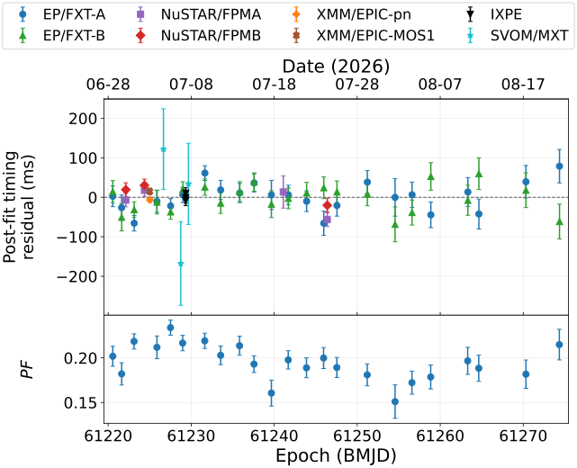
图注：上图：表1相位连接计时解拟合后的到达时刻残差，包含EP/FXT、IXPE、NuSTAR、XMM–Newton的EPIC-pn与MOS1以及SVOM/MXT数据。下图：EP/FXT-A测得的扣除背景后rms脉冲份额随时间的变化。
怎么看这张图：上图残差存在结构，说明周期导数应解释为当前观测窗口的平均值。下图未见脉冲份额单调变化，仍允许谱拟合热区面积缩小；几何调制与总光度不是同一量。 计时模型残差是年龄和磁场推断的关键限制。
来源与置信度：arXiv HTML；source verified；https://arxiv.org/html/2609.25990v1/timing_residuals_ep_nustar_xmm_F0F1_with_fvar.svg
图6
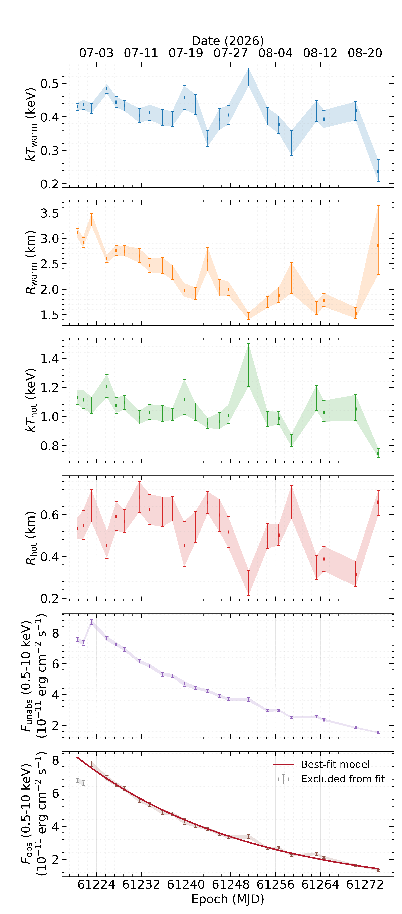
图注：EP/FXT能谱拟合所得参数的时间演化。从上到下为暖黑体温度、半径，热黑体温度、半径，未吸收通量以及观测通量；最下图叠加对FXT下降段观测通量的指数拟合，参数见正文。谱模型为TBabs乘以两个bbodyrad，吸收柱固定为宽带拟合得到的2.4×10²¹ cm⁻²；半径按3.3 kpc距离计算。
怎么看这张图：将温度、半径和通量连起来看，不能只将下降归为温度降低。指数约31天仅是经验时间尺度，其χ²/dof=132/19明确显示残差未被模型充分描述。 连接热区面积与衰减，同时显示经验指数的局限。
来源与置信度：arXiv HTML；source verified；https://arxiv.org/html/2609.25990v1/Images/FXT_spec_evolution_replot.png
强相关工作
同源IXPE论文《IXPE observation of the new magnetar source EP J223759.5+531421》（https://arxiv.org/abs/2609.25958）进一步用分相位偏振约束视向和表面状态。本篇已纳入其部分计时数据，两者共享观测；偏振新增的信息是方向与模式，而不是另一次独立源发现。它们所报脉冲份额也有定义差别：本篇用噪声扣除的rms份额，IXPE篇另用峰谷定义，不能直接拿两个百分比判断矛盾。
物理解释并列引用Beloborodov（2009）的磁层解扭模型（https://doi.org/10.1088/0004-637X/703/1/1044）与De Grandis等（2025）的爆发冷却模拟（https://doi.org/10.1051/0004-6361/202554666）。前者通过电流足迹缩小解释热区收缩，后者通过星壳沉积能量的扩散解释衰减，当前观测未唯一择一。作为种群基准，Coti Zelati等（2018）《Systematic study of magnetar outbursts》总结的周至月衰减尺度与本文相似；相似时间尺度并不证明相同能量沉积机制。
同一事件 / 同类源线索：
相似工作：
基础理论 / 方法工作：
相反观点 / 张力线索：
（未提供）
4. Self-consistent modeling of energy-dependent synchrotron polarization in blazars with application to Mrk 421
- 来源：arXiv / astro-ph.HE
- 链接：https://arxiv.org/abs/2609.26574
- 作者：Frederike Apel, Motseothata Tisang, Victor Barbosa Martins, Xavier Rodrigues, Markus Böttcher, Anna Franckowiak
- 评分：novelty 9/10，importance 9/10，relevance 10/10，final 10.00/10
- 推荐理由：Mrk421俯仰角依赖冷却与磁场结构自洽偏振，给出色依赖偏振的替代机制，直接关联TeV耀变体。
中文题目：Mrk 421 的色依赖偏振：俯仰角冷却与螺旋磁场能否替代空间分层解释
做了什么：IXPE发现一些耀变体的X射线偏振明显高于光学偏振，而且X射线电矢量位置角变化时，光学角度可以几乎不动。常见解释是高能电子留在较有序的加速区，低能电子传播到更湍乱的外部区域。本文检验另一种可能：电子与磁场的俯仰角既改变同步辐射强度，也改变冷却速度；在同一个具有结构化磁场的发射区内，不同区域对各能段的权重因此不同，未必需要把光学与X射线放到两个空间分离的发射区。
作者扩展时间依赖粒子演化程序AM3，联合计算俯仰角依赖的冷却、辐射和斯托克斯参数，并用于Mrk 421的2022年5月多波段数据。采用同步自康普顿模型的代表性参数为磁场0.19高斯、区域半径 $6.93\times10^{15}$ 厘米、整体洛伦兹因子21.5；螺旋场与喷流轴夹角约60度时可产生光学较低、X射线较高的偏振。另一个激波示例产生约70度的X射线偏振角摆动，而低能角度近乎不变，但并未拟合观测到的至少360度完整转动，也没有证明分层模型被排除。
为什么重要：偏振常被直接用来推断磁场有序度和发射区位置，但它实际是电子能谱、冷却、磁场投影和不同区域矢量相消共同作用的结果。本文明确展示遗漏俯仰角依赖冷却会把几何解释过早锁定为空间分层。新增认识是一种具有具体数值实现的替代机制及其可行性，不是对Mrk 421磁场拓扑的唯一重建；观看角、场夹角和轻子参数存在明显退化。
理论 / 观测 / 仪器方法价值：方法价值在于把局部同步辐射核、电子输运和多区斯托克斯求和放在一致的时间演化中，并在激波例子加入光行时延。迁移到其他高同步峰耀变体时，需要同时间段的能谱、各能段偏振和几何约束，不能仅凭两点偏振比反推磁场。本文SED先用各向同性俯仰角近似优化，再以所得参数扫描螺旋场偏振，属于分步建模；全文没有给出联合偏振—能谱的完整参数后验。
为什么应该关注：Mrk 421是IACT重点源，本文直接讨论了MAGIC甚高能谱、Fermi-LAT通量和IXPE偏振如何共同约束电子辐射。它提示伽马耀变中用低能偏振推断粒子加速和磁场时，应同时跟踪谱峰、冷却时间和观测积分窗口。值得继续检查的是加入VLBI视角约束与同一时段的TeV数据后，共空间模型能否保持自洽；高能偏振及轻子/强子区分是作者提出的后续扩展，本文尚未算出可用于中微子预言的新增约束。
展开详细解读：文章讲解、背景、理论、重点章节、图表与相关工作
文章详细讲解
科学问题：为什么同一耀变体的X射线偏振度可以是光学的数倍，偏振角也表现不同？空间分层的图像很直观：高能电子冷却快，停留在激波附近有序场中，低能电子走得更远并采样湍流。但如果不同场方向上的电子冷却本身不同，看到的能段差异也可能来自同一区域内部的辐射权重变化。本文要判断这种机制是否能产生观测所需的色依赖，而不是重新报告一次偏振发现。
作者怎么做：在AM3中增加固定俯仰角同步辐射与偏振核，使同一个俯仰角同时进入能量损失和光子发射。先检验均匀场，再将有序环向场、随机场和螺旋场离散为多个单元，逐区演化电子并求和斯托克斯参数。Mrk 421静态建模先用SED给出轻子参数，再扫描螺旋角；动态部分让增强的硬电子注入随激波通过圆柱区域，并计算到达观察者的相对延迟。
关键结果：冷却会在高能端软化电子分布，使局部偏振随频率改变；各区场方向不同又导致能段相关的相消。螺旋夹角约60度时，模型可产生约6%的低能偏振和约12%的X射线偏振，对应观测大致3%与15±2%。改变场角到57.6—62度形成的模型带可覆盖数据，但这不是严格统计意义的60±2度测量。激波例子显示X射线角从正35度摆到负35度，低能角几乎不变，说明共空间结构也能产生差异。
局限和下一步：静态SED优化加入系统误差并采用各向同性近似，几何扫描规模有限；光学模型仍偏高、X射线偏低。动态注入增强10倍、谱指数设为1，是机制示例而非针对2022年6月的拟合，预测偏振峰值约35%也高于该次观测约10%。作者没有模拟完整360度转动，未包含EVPA的全部相对论变换。下一步应联合光变、SED、偏振与VLBI信息约束几何，并以相同时间积分窗口比较观测。
关键结果是怎么做出来的
第一步是单区一致性检验。图2比较不同俯仰角的同步谱，角度接近90度时发射更强，但也冷却更快，因此冷却折点移向低能。将角度依赖谱按各向同性分布平均可恢复原AM3结果，这验证新实现与旧极限相容。它并不证明实际喷流电子俯仰角分布就是各向同性，而是一个数值极限检查。
第二步是分离冷却的作用。图3在11度和90度两种俯仰角下分别展示电子分布、同步谱和偏振度，比较有冷却与无冷却。无冷却时单幂律部分约71%的偏振基本不随能量变化；冷却后高能谱变陡，偏振开始提高，较大俯仰角的变化在更低能量出现。指数截断之上的极高偏振对应很弱通量，不能当成容易观测到的高偏振信号。
第三步是检验几何相消。沿轴看完全对称环向场，各区亮度相同且斯托克斯矢量抵消，净偏振可以为零，即使磁场十分有序。侧看时投影打破对称，贡献较大的区域方向接近，偏振升高。随机场模拟大体遵循单区偏振除以单元数平方根的趋势，却有明显实现间散布；479、480与481区的例子说明区数相近不能保证同一偏振度。
第四步是对Mrk 421进行静态比较。作者使用2022年5月4—6日多波段SED，其中LAT的0.3—300GeV数据是以IXPE观测为中心的7天平均。遗传算法搜索轻子参数，加入系统项后的约化卡方为2.1；再固定这些参数，把共动视角设为90度，以20个方位区扫描磁场螺旋夹角。表2给出半径、磁场、整体速度及电子注入参数，图9展示角度改变对SED及偏振的共同影响。
第五步是动态机制实验。圆柱长度 $10^{16}$ 厘米，沿半径、轴向和方位角划成27、30、120格；激波长度为总长十分之一，以光速传播。每个局部单元先达稳态，再以10倍电子注入功率和硬化至1的指数经历激波，之后回到静态注入。计算先对传播和光行时移位、按体积加权，再合成斯托克斯量，因此不同侧面的磁场投影在不同到达时刻占优势。
第六步是对照结论强度。图10和11产生X射线耀发、偏振度双峰以及约70度角度摆动，低能受长期电子群主导而较稳定。正文讨论明确说没有重现完整观测转动，约25小时积分可把模型偏振度降至约15%，仍与观测约10%有差别。此处最可靠的结果是色依赖可以在共空间结构中出现；数据尚未唯一决定该结构，也未排除额外湍流或分层。
展开背景、理论、公式、模型和章节导读
背景知识
耀变体是相对论喷流接近视线方向的活动星系核。多普勒增强使小区域的非热辐射显得很亮且变化迅速，宽带SED通常有两个隆起。对Mrk 421这样的高同步峰源，低能隆起可延伸到X射线，因此光学和X射线可以同为电子同步辐射，却来自不同能量的电子。讨论这两个波段的偏振，不等于已经确定高能伽马隆起由哪一种粒子过程产生。
同步辐射是电子在磁场中偏转时发出的辐射。局部均匀场的光薄同步辐射本来可以高度线偏振，但整个不可分辨喷流是许多位置贡献的叠加。偏振方向不同的贡献可能相消，因此观测只有几个百分点不必意味着场处处混乱；高度对称的有序场也可以得到很低净偏振。把偏振度简单等同于有序磁场比例，会忽略投影和强度权重。
俯仰角是电子速度与磁场的夹角。角度越大，横向加速度越强，发射功率和能量损失通常越大；因此同样注入条件下，不同角度所留下的高能电子数不同。相对论电子发射集中在沿速度方向的狭窄锥内，观察者主要看到朝向自己的电子，场方向和视角便同时影响局部亮度、电子演化及偏振。这是本文把几何放进冷却而不仅是最后绘图的动机。
IXPE把偏振研究扩展到X射线。2022年Mrk 421多波段观测显示高低能偏振度不同，6月还出现X射线角度转动而低能较稳的行为。已有分层模型用冷却长度解释这些特点，本文则补充了俯仰角依赖冷却的竞争机制。两者都利用高能电子演化快这一事实，真正的分歧在于是否必须空间分离，以及场结构与时间加权能否解释全部同步数据。
基础理论 / 方法脉络
单区首先需要注入、冷却和逃逸的平衡。电子不是始终保持注入时的幂律：高能电子冷却时间更短，稳态或暂态谱会出现折点和截断变化。局部同步偏振应由实际演化后的分布积分，而不是把注入指数代入一个常数公式。光薄、均匀场、无谱折点时的幂律结果仍有价值，但只是需要恢复的特殊极限。
同步谱核决定不同电子能量对给定光子频率的权重，偏振核则决定两个正交电场分量的差。两者必须使用同一电子分布和同一俯仰角。这样冷却引起的谱形变化会传递到偏振，而非在事后为各能段自由赋予不同偏振度。这是模型被称为自洽的局部含义；SED参数和几何仍是分步优化，不能扩大为所有自由度都已联合反演。
多区叠加必须使用斯托克斯 $I,Q,U$，不能平均偏振百分比或直接平均角度。线偏振方向具有180度等价性，所以相位进入余弦和正弦时是两倍角。某些区的角度互相抵消，但不同能段中的亮度权重因冷却而不同，同一几何在光学与X射线便可以留下不同净偏振。随机区数平方根规律只是统计趋势，单次实现仍有散布。
时间演化还要区分喷流共动系与观察者系。激波到达不同轴向位置需要时间，近侧光子到观察者也比远侧更早，观测同一时刻并非整个区域同一个本征时刻。体积加权的斯托克斯量经过这两类延迟再求和，会改变偏振角轨迹。相对论像差使地球上仅一两度的视角差在共动系放大，造成场夹角、喷流速度和视角的退化。
公式与推导
以下连接原文式(1)、(3)—(10)、(14)—(15)；冷却时间标度及使用双参数反正切为教学补充。带撇量位于喷流共动系。由于辐射束窄，朝观察者运动的电子满足
$\alpha$ 是俯仰角，两个单位矢量分别表示视线与磁场方向。它是局部几何关系，不要求整个发射区只有一个场方向；附录A对有限束宽给出检验，本文高洛伦兹因子电子可忽略其影响。
原文角度依赖能量损失以及由此得到的冷却时间标度为
$\gamma'$ 无量纲，$t'_{\rm syn}$ 是时间。第二式为第一式直接相除的教学展开，省略了带单位常数；它说明高能、大俯仰角电子更快改变谱形，而不仅是瞬时发射更亮。
辐射频率与谱核的连接是
在文中采用的高斯单位制下 $\nu_c'$ 为频率。电子能量、磁场和投影共同决定它主要在哪个能段辐射，因而同一观测频率会对不同区域的电子群施加不同权重。
同步总功率和偏振分子分别使用两个核，
$K$ 是第二类修正贝塞尔函数，$N_e$ 为电子能量分布。分子表示两个正交偏振分量之差，分母为总强度；共同前因子抵消，所以 $\Pi$ 无量纲。必须使用演化后的 $N_e$，否则冷却效应会被人为抹掉。
仅在光薄、均匀场和纯幂律 $N_e\propto\gamma'^{-p}$ 的极限，有
$p=2.3$ 给出约71%。谱有冷却折点或指数截断时，不能给整个SED套一个 $p$；高能端形式上接近100%的偏振也可能位于通量极小区域，观测可测性必须另看总谱。
电子分布按原文式(7)演化，
这里将原文逃逸系数另写成 $a$，避免与俯仰角 $\alpha$ 混淆；$a$ 的单位为逆时间，$Q$ 是每单位体积、能量、时间的注入率。冷却项沿能量轴输运粒子，注入和逃逸改变数量，三者共同决定偏振核中的分布。
每区的斯托克斯量及总偏振为
$\chi_i$ 是电矢量位置角，$L_{\nu,i}$ 提供该频率上的权重。求和后再作比值才保留相消，因此相同场结构仍可有不同能段的净偏振；直接对 $\Pi_i$ 平均会丢掉核心机制。
角度重建及随机场趋势可写为
第一式是对原文普通反正切写法补足象限的实现说明，角度展开仍需处理180度等价性。第二式是假定随机贡献下的统计标度，图7的散布说明不能将一次测量直接换成唯一单元数。
对圆柱区，光行时延和体积权重为
原文式(14)—(15)以圆柱前缘为时间零点；轴向激波延迟另加 $z_i/c$。先按局部演化时间取出斯托克斯量，再施加延迟和体积权重求和，才能得到图10的非对称双峰及角度摆动。这里不把文中混用的延迟记号当作额外两次局部时间相加。
模型拟合 / 应用方法
静态拟合输入来自Mrk 421在2022年5月的宽带观测，假定高能隆起由同步自康普顿产生。作者为了获得后续偏振计算所需的近似轻子参数，先用原AM3各向同性俯仰角版本拟合SED；遗传算法在先前工作给出的常见参数范围内最小化约化卡方。光学至X射线统计误差上加系统项，避免极小的X射线误差支配目标函数，这意味着2.1的约化卡方需在该误差模型下理解。
表2的代表性解为半径 $6.93\times10^{15}$ 厘米、磁场0.19高斯、整体洛伦兹因子21.50、最低电子洛伦兹因子5890、截断 $1.46\times10^5$、注入指数2.10、电子功率 $3.10\times10^{40}$ 尔格每秒。正文没有将这些数值给成完整置信区间，不应照小数位声称精密测量。先前模型磁场0.042高斯、整体因子30与这里不同，部分源于拟合目标波段和电子分布处理不同。
偏振阶段固定上述轻子参数及典型视角，扫描螺旋场与轴夹角，约60度附近最接近数据。57.6—62度的阴影带表示不同模型选择，不是蒙特卡洛后验可信区间。视角在观察者系从1度改到2度即可让文中例子的共动视角由约55度变到约93度；没有独立VLBI约束时，磁场螺旋角与视角、速度的退化不能靠这张偏振图消除。
动态模拟的注入10倍增强和指数1不来自对6月事件的拟合，而是展示机制；长度、分格和以光速移动的激波也属于指定设置。预测偏振双峰偏高、摆角小于观测完整转动、忽略部分相对论EVPA效应，都是需要保留的失配。比较时间平均偏振时应先平均 $Q,U,I$ 再求偏振，而不是平均瞬时百分比；本文讨论的25小时积分正说明不同曝光长度会改变观测结论。
重点章节 / 结果段落怎么读
-
第2.1—2.3节与图2、3：先弄清俯仰角如何同时进入辐射与冷却，再看电子谱折点怎样传递到偏振；纯幂律公式只作极限参照。
-
第3.1节及第4.1节：沿斯托克斯求和理解环向场的对称抵消与随机场散布，避免把低偏振直接解释为强湍流。
-
第3.2、4.2节和表2、图8—9：分开读SED优化和偏振角度扫描，核对LAT七天平均、额外系统项及几何假设；阴影带不能读成严格角度置信区间。
-
第3.3、4.3节及图10—11：追踪激波注入、电子演化、传播延迟和光行时延的顺序，再看哪个能段的权重改变最大。
-
第5节和附录A：集中检查视角退化、70度与360度的区别、时间平均及束宽近似。这里限定的是方法的解释力，不应被概览省略。
关键图表与解读
图3
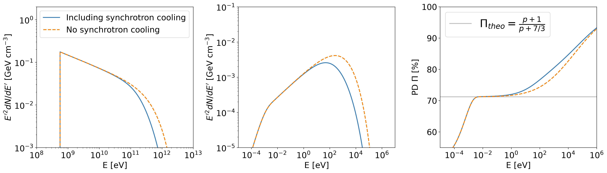
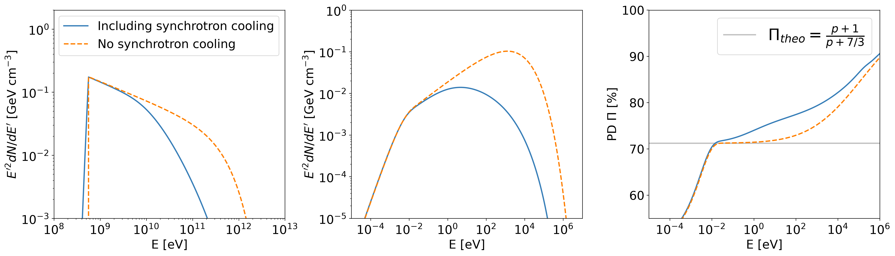
图注：同步辐射冷却对发射偏振的影响。从左到右依次为电子能量分布、同步辐射谱和偏振度随能量的变化。蓝色实线表示计入电子同步辐射能量损失的情况，橙色虚线表示电子分布不含冷却效应的情况。上排为较小俯仰角11度，下排为俯仰角90度，分别对应磁场几乎平行和垂直于视线的方向。电子分布、区域大小和磁场强度参数列于表1。
怎么看这张图：图3把机制拆成电子谱、光子谱和偏振三个连续环节。横向比较有冷却蓝实线与无冷却橙虚线，再纵向比较11度和90度俯仰角，重点是偏振开始变化的能量随冷却折点移动。高能截断后的大偏振还需对照中列通量，不能只看右列百分比。 直接展示俯仰角冷却到电子谱、光子谱及偏振的证据链。
来源与置信度：arXiv HTML；source verified；https://arxiv.org/html/2609.26574v1/figures/spectra_pitch_angle_11.png；https://arxiv.org/html/2609.26574v1/figures/spectra_pitch_angle_90.png
图9
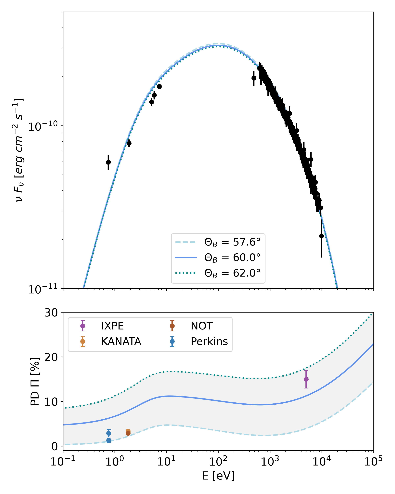
图注：Mrk 421的同步辐射谱能量分布（上图）和偏振度（下图）。图中包括2022年5月4—6日的数据点，以及不同磁场夹角 $\theta_{\rm B}$ 的螺旋磁场模型预测，各夹角取值见图例。
怎么看这张图：图9把模型落到Mrk 421：先看上面SED是否仍合理，再看下面光学与X射线偏振是否由同一角度选择同时解释。约60度附近模型带代表几何扫描而非置信带；实际低能偏高、X射线偏低和视角退化应与曲线一起读。 将螺旋角扫描与同源SED及能段偏振数据对应。
来源与置信度：arXiv HTML；source verified；https://arxiv.org/html/2609.26574v1/figures/poldata_fit_90deg.png
图10
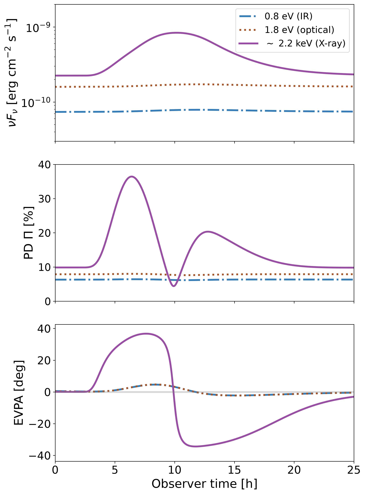
图注：喷流内激波模型的结果。从上到下分别为红外、光学和X射线波段的光变曲线、偏振度和电矢量位置角（EVPA）随时间的演化。光变曲线展示辐射通量的时间变化，偏振曲线展示传播中的激波引起的偏振度和EVPA相应演化。模型以在发射区中传播的增强电子注入表示激波。
怎么看这张图：图10用相同时间轴比较三能段光变、偏振度和电矢量位置角。X射线增强和角度摆动由短寿命电子及延迟加权共同产生；光学近乎稳定并不表示光学电子完全未受激波影响。该图是设定注入下的机制实验，不是对至少360度观测转动的成功拟合。 展示共空间激波模拟的色依赖时间行为及其仅为示例的边界。
来源与置信度：arXiv HTML；source verified；https://arxiv.org/html/2609.26574v1/figures/shock_in_jet_mrk421.png
强相关工作
Abe等（2024a）的多波段活动期研究是本文数据和MAGIC约束的直接来源，题为《First characterization of the emission behavior of Mrk 421 from radio to very high-energy gamma rays with simultaneous X-ray polarization measurements》（https://doi.org/10.1051/0004-6361/202347988）。那项工作将X射线与甚高能发射归于SSC区，并有意让更大区域贡献光学及LAT辐射；本文试图用共空间框架解释更完整SED。因此两者参数差异不等同于同一拟合问题下的统计排斥。
Kim等（2024）的《Magnetic field properties inside the jet of Mrk 421》提供包括IXPE在内的多波段偏振背景（https://doi.org/10.1051/0004-6361/202347408）。本文还明确继承Klinger等（2024）的AM3时间依赖粒子演化，以及Zhang等（2014）的螺旋场激波与光行时处理；这些为核实到的参考文献关系，未虚构其外部链接。新增内容着重把俯仰角依赖冷却与偏振放在一致演化中，并未宣称首次提出激波驱动角度变化。
Di Gesu等（2023）关于Mrk 421 X射线偏振角转动的观测是竞争解释的关键证据。本文第3.3及5节引用其至少360度转动，并明确把重现完整转动留给后续工作。因此“共空间模型可产生能段差异”是可行性结论，“观测已经选择了共空间模型”则超出证据；后续联合VLBI、TeV及时间分辨偏振才有机会收紧两类图像的退化。
同一事件 / 同类源线索：
相似工作：
基础理论 / 方法工作：
（未提供）
相反观点 / 张力线索：
（未提供）
5. Resonant neutrino flavor conversion within dark matter spikes
- 来源：arXiv / astro-ph.HE
- 链接：https://arxiv.org/abs/2609.26773
- 作者：P. S. Bhupal Dev, Elisa Gaido, Alejandro Ibarra, Yago Porto
- 评分：novelty 8/10，importance 8/10，relevance 10/10，final 9.70/10
- 推荐理由：AGN暗物质尖峰中的中微子味转化直连IceCube；共同源属性和非对称DM假设决定95%轮廓解释。
中文题目：AGN 暗物质尖峰中的中微子味转化及其条件性观测检验
做了什么：论文讨论高能中微子离开活动星系核（AGN）中心时，是否会因暗物质介质中的相干前向散射改变味组成。作者采用狄拉克暗物质与中微子的味依赖有效矢量相互作用，以NGC 1068参数构造中心尖峰，并完整数值求解三味传播，随后对到地球的长距离真空传播作相位平均。中微子与反中微子分别演化，因为二者所受势的符号相反；决定效应的是粒子减反粒子的净数密度，不是单独的总质量密度。
在约100 TeV时，耦合加权净数密度达到约 $10^{18}\,\mathrm{cm}^{-3}$ 即可能开始与真空项竞争。强势情况下，源处主要由正π衰变而来的缪子阻尼中微子，可以到达与普通真空振荡很不同的地球味比。部分基准预测位于IceCube中能起始事件（MESE）95%轮廓之外，但该比较假定弥散通量由产生机制与暗物质尖峰都相近的AGN主导。它是对指定种群和相互作用条件的张力检验，尚不是单个NGC 1068味组成测量，也不是模型无关的耦合上限。
为什么重要：味组成同时携带源内π/缪子产生冷却的信息和传播信息，因此一种异常味比不能自动归因于新物理。本文的价值是把源附近密度梯度、相互作用符号以及非绝热转换纳入完整三味传播，说明即使宇宙距离消除了振荡相位，源内重新分配的质量本征态占比仍能保留到地球。它提供一种传播探针，并明确现有观测尚不能对每个AGN单独测味。
理论 / 观测 / 仪器方法价值：可复用的计算路线是“指定源处按电荷拆分的初始组成→建立径向哈密顿量→完整数值演化→出源后质量态投影与相位平均→叠加中微子和反中微子”。绝热参数用于诊断数值轨迹，而不替代完整解。应用时必须给定暗物质尖峰是否存活、产生半径、粒子反粒子不对称和相互作用味结构；论文忽略硬散射、衰减与再生，因此不适用于这些效应显著却未经检查的任意具体粒子模型。
为什么应该关注：这项工作直接连接IceCube味测量、AGN盘冕产生区和暗物质环境。对中微子源研究，尤其需要避免把弥散味轮廓当作某个点源的测量；对多信使研究，源内冷却与传播新物理可能造成相似偏离，应利用能量依赖和不同源类别进行区分。未来有价值的是味分辨的单源观测以及更真实的AGN种群建模，而不是仅将当前三角图上的点距离换算成普适发现显著性。
展开详细解读：文章讲解、背景、理论、重点章节、图表与相关工作
文章详细讲解
科学问题：标准π衰变源的电子、缪子、τ味比例约为1∶2∶0，经过宇宙距离真空振荡后接近1∶1∶1；如果缪子先冷却，源处更接近0∶1∶0。论文问的是，在黑洞附近存在很陡暗物质尖峰且中微子有新相互作用时，源内介质是否会进一步改变这些预言。需要同时区分产生端变化和传播端变化，否则味异常无法解释。
作者怎么做：以味对角矢量相互作用定义三个有效耦合，建立含真空质量项与径向暗物质势的三乘三哈密顿量。外部晕采用NFW剖面，内部接非湮灭尖峰，给定黑洞质量及产生半径后，对纯初始味态逐一解径向薛定谔方程。出尖峰后投影到真空质量本征态并平均长途相位，再按π衰变或缪子阻尼源的正反中微子份额组合成地球味比。
关键结果：在100 TeV基准下，随耦合与暗物质质量之比增加，地球味组成从真空极限移向介质主导极限，方向依赖受作用的味与势的符号。对只作用于缪子味的强势、绝热正势基准，初始缪子中微子可演化为第三质量态；负势则可演化为第一质量态，产生明显不同的地球投影。中等耦合的高能段还会因非绝热跃迁而折返，不能简单假定能量越高偏移越大。
局限和下一步：采用的NGC 1068尖峰是理论环境基准，不是直接测得的密度剖面；银河中心则另外假定尖峰不存活。源处正反粒子不对称是该矢量势存在的必要条件，硬散射与再生未纳入。与弥散MESE轮廓比较需额外假定AGN主导且源属性相近；真实种群混合可能产生中间味比。作者据此提出未来利用更好弥散测量和单源味观测检验，没有给出现阶段普适排除结论。
关键结果是怎么做出来的
第一步是确定势的实际物理来源。正文式(1)—(4)从有效矢量流出发，给出势正比于耦合乘 $n_\chi-n_{\bar\chi}$。粒子—反粒子对称时即使总密度很高，该项仍抵消；若只对一个味作用才有相对能级改变。对反中微子要共轭混合矩阵并反转势，源内正反中微子的份额因而必须保留到最后一步。
第二步是建立环境。正文第III节采用黑洞质量 $10^7M_\odot$、NFW尺度半径13 kpc、尺度密度0.35 GeV/cm³、尖峰半径0.7 kpc以及产生半径 $10^{-5}$ pc。这里忠实保留原文基准而不把它改为观测测量；尖峰是否能够保持、归一化是否代表真实源，均决定外推可靠性。原文在产生半径给出约 $3\times10^{18}$ GeV/cm³的质量能量密度，再在最大不对称条件下换算净数密度。
第三步是求解传播而非只套绝热公式。图2在100 TeV、正常质量排序且只耦合缪子味时，分别展示正负势下纯初始味组成的轨迹，耦合质量组合从0.14扫到140。较小值接近真空黑色标记，数量级为1时开始偏移，较大值趋向饱和。这里100 TeV单能量的趋稳范围不能与整个MESE能段都近乎能量独立所需的更强基准混为一谈。
第四步是正确建立源的电荷组成。理想正π主导的光强子源产生电子中微子、缪子中微子和缪子反中微子各一份；缪子阻尼时高能部分主要剩及时的缪子中微子。质子—质子碰撞约产生相同数量正负π，虽然把正反相加后的味比相同，受符号相反的介质势后却未必得到同一地球结果。图3的四类标记正是这种差别，而非四个独立观测源。
第五步是与观测比较。MESE轮廓来自5 TeV—10 PeV弥散样本，采用能量无关味比。论文因此选弱作用小于约0.1与强作用大于约十万两个跨能段近似稳定的极限作主要对照。强缪子势的正负两种符号下，光强子缪子阻尼的中心预测落在95%轮廓外；周围区域由独立扫描振荡参数各自3σ边际范围形成，不是联合3σ后验。
第六步是检查附录的边界。附录A用局部本征值分离与基底变化构造绝热参数，显示有些高能、负势中间耦合轨迹非绝热；附录B对完整演化作能谱和红移种群比较，强势极限味比约为正势0.022∶0.549∶0.429、负势0.677∶0.076∶0.247。有限红移和更高产生能量仍可略偏离极限，图5因此比单一三角图更能说明何时可使用能量无关比较。
展开背景、理论、公式、模型和章节导读
背景知识
中微子的电子、缪子和τ三种味与传播中的质量本征态不是同一组状态。产生和探测通常辨认味，传播相位却由质量控制，因此真空中也会发生味转换。天体距离太长且能量、源距离有分布，快速相位通常在观测上平均掉；这不意味着所有来源都严格变成三味均分，最终比例还取决于初始味与混合矩阵。
高能天体中微子常由高能质子与光子或气体相互作用产生带电π，再由π和缪子衰变形成。若次级缪子在衰变前显著冷却，它对给定高能段的贡献减少，形成缪子阻尼极限。这个词指能量损失相对衰变的竞争，不是中微子被吸收。不同源环境与能段可在两种理想端点之间连续变化，所以端点模型不能代表所有AGN。
普通物质中的MSW效应来自味依赖相干前向散射，表现为传播哈密顿量的额外势。本文讨论暗物质背景的类似机制，它主要改变相位和本征态，而不是把每个中微子从视线中散掉。硬散射导致的能量再分布、吸收和再生是另一类效应，需要具体相互作用模型评估；只求前向传播并不保证它们永远可忽略。
黑洞缓慢增长可在理想条件下压缩周围暗物质并形成尖峰，但恒星加热、并合、湮灭与动力学演化都可能改变它。本文特意给AGN源与银河中心不同的尖峰存活假设。尖峰因此是构造强介质势的模型输入，不是由味转化计算证明其真实存在；观测若将来偏离标准味比，也需要排除源产生和环境退化后才能解释为暗物质作用。
基础理论 / 方法脉络
先比较两种能量尺度：真空振荡项约为质量平方差除以两倍能量，随中微子能量升高而下降；本文矢量背景势在给定介质下近似能量无关。因此高能端更容易让背景势竞争，但是否出现大味变化还取决于符号、味结构和密度梯度。势强并不自动等于绝热，绝热也不自动等于偏离一定大。
在变化介质中，每个半径都有自己的传播本征态。若介质变化相对能级间距足够缓慢，状态可以跟随某条本征支演化；若变化过快或能级间隔过小，则可能跳到另一支。本文用完整径向数值解同时包含两者，并把绝热参数作为事后诊断，从而避免在尖峰陡峭区错误使用只适合缓变介质的近似。
出源后的相位平均只去掉不同质量态之间的干涉，保留各质量态的概率占比。源内暗物质作用若已改变这些占比，影响就可以通过混合矩阵的模平方保留到地球。这个机制解释了为何宇宙基线很长仍能作源内环境探针，同时也说明不能把出源味概率直接当成地球味概率。
观测三角图用三味份额之和为1的约束压缩为二维。轨迹、级联和双级联对三味的响应不同，但并非每类事件对应且只对应一个味，因此轮廓是结合探测器响应和统计假设的推断。本文叠加的Gen2轮廓还假定某个真实源味组成，它是条件性预测，不能当成实际已实现的观测限制。
公式与推导
以下以原文式(2)—(4)、(7)、(9)—(11)及附录式(13)串起计算。自然单位取 $\hbar=c=1$，若用厘米和电子伏特数值积分需显式换算。先区分质量密度与净数密度：
前者不能单独确定后者；最大不对称条件下才可把净数密度的绝对值写为 $\rho_\chi/m_\chi$。这一步控制模型是否有非零势。
有效矢量相互作用给出
$\epsilon_\alpha$ 为按费米常数归一化的无量纲耦合。符号来自耦合与净粒子数共同作用，反中微子取相反势；若所有味势相同，仅增加整体相位，不产生相对味效应，这是哈密顿量的教学直接推论。
完整哈密顿量为
$U$ 为三味混合矩阵，质量平方差单位与能量一致时各项都是能量。真空项随 $E^{-1}$ 变化，解释为何100 TeV附近耦合加权净密度约 $10^{18}\,{\rm cm}^{-3}$ 开始有竞争；这是数量级起点而非普适共振条件。
源内采用的非湮灭尖峰为
它在外边界连续接NFW剖面，内部 $r<4R_S$ 置零。$\rho_R$ 由连续性确定，不是独立测出的中心密度；$r^{-7/3}$ 行为及内边界形状共同决定中微子沿途所见势。
每个初始味态按
演化，得到出尖峰态 $|\nu_\beta^{\rm sp}\rangle$。这一步实际数值求解，不以某个单独的共振半径近似整个路径；同时要求概率归一和合理真空极限作为数值诊断，后者是解释性验算建议，不声称作者额外公布了全部误差测试。
令瞬时本征值为 $\lambda_i$，其本征态为 $|i\rangle$，原文绝热性诊断为
在自然单位中它无量纲，沿途远大于1有利于绝热跟随。靠近1或更小时需要完整演化；即便非绝热，也不能仅凭这个参数断言最终味偏移一定很大，还要看初始态和占据本征支。
经过宇宙距离相位平均后，
第一项是质量态到探测味的投影，第二项保留源内演化留下的质量态占比。不同 $i$ 之间的干涉消失，但第二项并未被重置，这就是源内新作用仍可观测的原因。
最后按电荷分量组合，
反中微子的传播用 $U^*$ 和 $-V$ 重算。因而正反相加后同为1∶2∶0的 $p\gamma$ 与 $pp$ 源，仍可给出不同地球味比；若在源端先合并电荷成分，就会丢失本文的重要物理。
附录B在指定强势、近绝热缪子耦合基准下得到
再投影到三味即可得到两组相差很大的极限份额。这不是任意质量排序、任意剖面和任意混合源的通则，而是本文正常排序基准解释图3和图5的最后一步。
模型拟合 / 应用方法
这篇工作没有直接用IceCube事件级似然反演暗物质耦合，而是构造环境和相互作用基准，计算味预言后与已发表轮廓比较。输入包括正常质量排序及NuFIT 6.0混合参数、NGC 1068样式剖面、固定产生半径和理想源电荷组成。不能把这些固定输入的数值当成本文新拟合所得，也不能由轮廓外一个点反推出所有暗物质模型的95%排除。
主图扫描只让某一种味的耦合非零，再改变符号和耦合质量组合。图2是固定100 TeV的连续轨迹；图3则重点取强作用极限，使预测在MESE宽能段近似稳定。这两个图的扫描范围不同有明确目的。中等耦合下味比能量依赖明显，若要严谨与能量无关轮廓比较，需要使用探测器响应与源谱重新构建似然，而不是目测三角图。
不确定性包络来自分别改变振荡参数的边际3σ区间。它不是保持参数相关性的联合后验，也不包含尖峰存活、产生半径分布或AGN种群混合的全部系统不确定性。正负势极限的差异说明未来可能对粒子反粒子不对称敏感，但只有耦合符号已知时，才可将这种差异进一步解释为背景是粒子还是反粒子占优。
附录通过绝热参数和红移平均检验能量边界：使用按恒星形成率密度加权的示例种群，把源能量写成观察能量乘 $1+z$，高能端可能偏离单源极限。它不是AGN发射率与暗物质结构的完整人口拟合。进一步应用必须加入不同源的谱、产生区和环境分布，并核查硬散射可否忽略；这些缺项决定了当前结果应保留为条件性预测。
重点章节 / 结果段落怎么读
-
第II节先读式(2)—(4)，把总密度与净密度、正反中微子势符号分开；这是整个模型能否有可观测效应的前提。
-
第III—IV节沿密度图到径向传播，再到质量态相位平均，核对尖峰半径、产生半径和数值基准的模型身份。
-
第V节逐项列出π衰变的正反中微子组成，理解为什么味相加看似相同的光强子与强子源仍有不同预言。
-
第VI节与图3检查弥散观测假设、3σ包络及强势极限，再读附录A/B的非绝热和红移边界，避免从单个三角图得出普适限制。
-
Note Added及文献[9]提示并行工作与包含硬散射的模型计算，不能把本文方法或想法自动称为首创。
关键图表与解读
图3
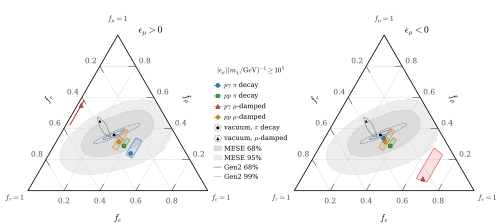
图注：只对缪子味存在暗物质相互作用时，光强子（$p\gamma$）和质子碰撞（$pp$）的π衰变源与缪子阻尼源在地球的味组成。对只有暗物质粒子的背景，左右图分别对应 $\epsilon_\mu>0$ 和 $\epsilon_\mu<0$。彩色标记为 $|\epsilon_\mu|(m_\chi/\mathrm{GeV})^{-1}\ge10^5$ 区域的中心预测，此时产生处暗物质势主导真空项，且味组成在MESE能段内近似不变；周围区域是将振荡参数分别在其边际3σ范围内变化所得包络。黑色标记和轮廓为相应真空预言。全部结果均采用穿过尖峰的完整数值演化。灰色区域为MESE的68%和95%置信水平味轮廓[7]；蓝色实线和虚线分别为示意性的IceCube-Gen2 68%和99%置信水平展望[42]，假定真实信号的味组成为π衰变源对应组成。
怎么看这张图：图3必须连同源种群假设阅读：灰色是当前MESE弥散味轮廓，彩色点及包络是指定强势模型的预测，蓝线是有真实味假设的Gen2展望。先分清光强子/质子碰撞与π衰变/缪子阻尼，再比较左右正负势；包络不是由事件拟合得到的联合可信区间。 直接对应当前味观测条件性张力与源种群假设。
来源与置信度：arXiv HTML；source verified；https://arxiv.org/html/2609.26773v1/flavor_composition_icecube_muon_potential.svg
图5
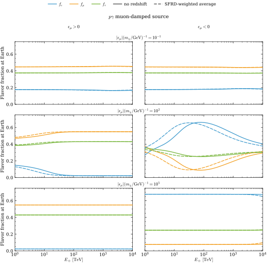
图注：理想光强子缪子阻尼源在地球味组成的能量依赖。上、中、下排分别对应 $|\epsilon_\mu|(m_\chi/\mathrm{GeV})^{-1}=10^{-1},10^2,10^5$；对只有暗物质粒子的背景，左、右列分别为 $\epsilon_\mu>0$ 和 $\epsilon_\mu<0$。蓝、橙、绿线分别表示电子、缪子和τ味份额。实线为无红移源，虚线为按恒星形成率密度加权的源种群，满足 $E_{\rm src}=(1+z)E_\oplus$。假定正常质量排序且 $\epsilon_e=\epsilon_\tau=0$，完整数值求解穿过尖峰的三味演化，包括非绝热跃迁，随后对到地球的真空传播作相位平均。
怎么看这张图：图5把三角图压缩掉的能量维度补回来。三行增加耦合质量组合，左右改势符号，实虚线区分单一无红移源与红移种群。负势中间行的折返展示非绝热跃迁为何可能削弱高能偏移；强势行近似水平才接近主文使用能量无关观测轮廓的条件。 展示非绝热与红移依赖，限定能量无关轮廓比较。
来源与置信度：arXiv HTML；source verified；https://arxiv.org/html/2609.26773v1/energy_dependence_muon_potential_full_evolution.svg
强相关工作
本文的普通物质传播基础来自Wolfenstein《Neutrino Oscillations in Matter》（https://doi.org/10.1103/PhysRevD.17.2369）及Mikheyev—Smirnov的共振味转换工作，暗物质尖峰图像引用Gondolo与Silk（1999，https://doi.org/10.1103/PhysRevLett.83.1719）。本文将这些构件放在AGN高能中微子场景中，用完整三味、带符号和非绝热的演化连接地球味观测。这里是按论文引用与方法说明核对的基础关系，不代表本轮已经重新精读所有原始基础论文。
观测比较直接使用文献[7] IceCube《Characterization of the Three-Flavor Composition of Cosmic Neutrinos with IceCube》（https://doi.org/10.1103/vntd-m133）。当前论文不提供独立的新味数据，因而同一轮廓在不同理论图中出现不能算多个独立实验支持。文献[9]《Flavorful Interactions of AGN Neutrinos with Dark Matter Spike》另处理具体模型中的硬散射等效应，引用的arXiv编号为2607.08833；该差异是适用范围差异，尚不能据此声称谁的耦合限制更强。
作者Note Added明确承认同期工作《AGN and DSNB Neutrino Oscillation in Dark Matter Background》（arXiv:2609.21768）讨论类似想法。此处保留其作者归属与并行关系，不把本文假设重新包装成助手的新研究提案；精确比较创新范围仍需另读该工作。
同一事件 / 同类源线索：
相似工作：
基础理论 / 方法工作：
相反观点 / 张力线索：
（未提供）
6. A Magnetic Unification of Merging Supermassive Black Hole Binaries
- 来源：arXiv / astro-ph.HE
- 链接：https://arxiv.org/abs/2609.25260
- 作者：Mark J. Avara, David O'Neill, Zoltán Haiman
- 评分：novelty 9/10，importance 8/10，relevance 9/10，final 9.65/10
- 推荐理由：以磁化与进动统一二维和三维黑洞并合吸积差异，直接关系多信使电磁对应体；需核验校准范围。
中文题目：磁场怎样改变超大质量黑洞双星并合时的变暗与回亮
做了什么：二维黏性流体模拟常预言黑洞双星并合前后吸积和X射线几乎中断，三维磁流体模拟却可能保留显著吸积并迅速恢复。本文用Athena++构造二维有效模型，分别加入随机黏性、近似相对论近心点进动、目标熵冷却，以及代表净垂直磁通量的Bproxy标量和经验力项。作者通过控制变量与单黑洞磁阻塞盘校准，寻找不同预测背后的条件。
结果显示，大尺度磁场越强，并合附近的吸积低谷通常越浅；中等磁化时可出现仅小盘和空腔被磁场扰动的mini-MAD状态。弱磁化并合后的偏心气流因差分进动形成自交激波，加快回亮；从40—50个总质量引力半径开始的模拟还出现约10⁴GM/c³后的第二次变暗。这些是等质量、近圆、共面顺行双星和特定热力学下的预测，没有观测上测出某个双星的磁通量。
为什么重要：寻找LISA并合的电磁对应体，不能只预设“并合必然产生X射线熄灭”。不同磁化和角动量输运条件可以产生深低谷、浅低谷或近乎连续的发射。若建立可靠模板，引力波给出的并合时刻与质量尺度可以帮助解释吸积流；本文说明模板应包含磁通量与进动，而非给出已经适用于所有AGN的唯一光变。
理论 / 观测 / 仪器方法价值：二维代理能以较低成本拆分机制并筛选值得三维验证的参数区。作者同时比较引力势、冷却速度、黏性采用局部或目标压力，以及初始轨道分离，说明数值闭合会改变空腔大小和恢复时间。约100—1000倍计算节约是跨硬件、跨物理配置的估计，并非同一精度的严格速度基准。最有用的是因果链和待验证预测。
为什么应该关注：高能天体读者应关注发射来自哪里、吸积率为何不总与光度同步，以及磁场如何转移角动量。本文用冷却损失构造热谱，没有自洽盘冕、非热粒子、喷流或伽马中微子计算，不能把磁重联讨论直接当作粒子谱预测。用于观测计划时还需源质量、红移、采样与AGN本底变异；未见深低谷不排除并合。
展开详细解读：文章讲解、背景、理论、重点章节、图表与相关工作
文章详细讲解
科学问题：二维与三维黑洞双星模拟为什么预言不同的并合响应？双星清出环盘空腔，流束仍可进入各自小盘。引力波使轨道缩短快于盘补给时发生脱耦，但空腔不是完全真空，磁应力与激波仍能转移角动量。理解低谷需要追踪这些补给通道何时改变。
作者怎么做：求解垂直积分流体方程，以Bproxy追踪单一主导极性的垂直磁通，加入磁压、向内磁通漂移、风力矩及近黑洞向外力。单黑洞测试先比较磁通爆发形态和径向分布，再扫描双星磁化；伪牛顿势匹配近圆赤道Kerr轨道的进动比，目标熵冷却允许快压缩近似绝热。
关键结果：随机黏性主要增加背景变异，进动和磁场对低谷更关键。进动使偏心气流自交并损失角动量；吸积动压下降使已有磁通相对增强，达到局部MAD状态后改变补给，阻止吸积继续按无磁模型骤降。全局强磁化甚至使传统空腔边界不再明显。
局限和下一步：这是校准后的有效模型，不替代三维MRI、真实重联、垂直风和辐射转移。为匹配某项三维结果还主动降低环盘内缘黏性。需要未参与校准的模拟验证质量比、厚度、倾斜和拓扑变化，再加入光子俘获、盘冕及观测噪声，才能量化磁化反演。
关键结果是怎么做出来的
先验证无磁基准：固定分离50M的长演化恢复偏心空腔、过密团块和小盘，吸积谱含约0.2倍轨道频率的团块调制及接近两倍轨道频率的成分。功率谱先处理有限气体储库消耗的长期趋势，因此这些峰是模型内部时标，并非实际AGN周期发现。随机黏性改变细结构与噪声，不根本消除低谷。
逐项更换闭合后，20M起始的PNP随机模型在并合附近降至初始吸积约1%，随后快速恢复；软化牛顿势给更低最低点和更慢恢复。再把冷却压到数值步长、黏性与局部压力相连，某测试最低下降七个数量级。流束冲击被迅速冷却，压力和黏性一同降低，空腔更大更冷。这个极端值说明闭合敏感性，不是所有真实薄盘的普遍预言。
加入磁通后，归一化黑洞磁通随吸积下降而上升，触及经验MAD阈值便产生磁通爆发。图11从弱场到mini-MAD再到全局MAD，低谷逐渐变浅，磁扰动持续更早、更久。最强场模型几乎没有吸积下降，仅并合后约500M短暂增加。模拟名的总磁通比与瞬时黑洞磁通比不同，不应混用。
更精细地匹配LE25时，作者将约2—4倍初始分离处平均黏性下调至原来的e⁻³ᐟ²，并采用中等磁化，得到并合前后近连续的吸积平台和15M以内冷却辐射跳升。更改近黑洞磁压标定后，主要形态相近但最低吸积可差约三倍；内区光度跳升还对是否计入下落区敏感。缺少光子俘获时，这部分辐射应视作可能的上限。
从40—50M开始避免初始已经脱耦：弱磁或无磁模型先由自交激波快速耗尽内空腔气体，外侧补给尚未跟上，约并合后10⁴M再次下降。强些的磁化扰乱有序激波，抹去这一特征。宽分离无磁模型的峰值面密度在约70—100M，强进动影响主要在更内侧，因此快速回亮不等于整个空腔立即填满，也解释20M起始模拟为何漏掉第二次变暗。
最后缩放到总质量10⁶太阳质量、0.3倍爱丁顿吸积和效率0.1，生成UV与0.1—10 keV热光变。弱场X射线低谷明显，强场可近乎消失；mini-MAD因小盘反复受扰动而变异较强，全局MAD的X射线均值反可较稳定。波段变异具有诊断潜力，但盘冕和非热成分尚未预测，图18不能直接给出望远镜发现率。
展开背景、理论、公式、模型和章节导读
背景知识
环双星盘的物质并不均匀流向中心。近等质量双星在约两倍分离以内施加强扰动，形成低密度空腔；气体沿流束进入各Roche瓣，形成暂时或持续的小盘。空腔边缘的过密团块改变流束补给，产生慢于双星轨道的调制。这些几何结构决定不同谱段主要来自哪些半径。
脱耦是补给与轨道收缩竞争的过程。传统估计比较盘径向漂移和引力波轨道收缩，实际流束、偏心、湍流与磁场使转变持续一段时间。盘边缘跟不上轨道不等于小盘立即耗尽，更不等于总光度按相同比例下降，因为外盘仍能辐射。
MRI在真实磁化盘中产生湍流应力，二维常用α黏性替代。但气体在空腔中绝热膨胀、热压降低时，磁应力未必同步消失。把有效黏性完全绑定局部热压可能低估输运；作者以目标压力避免这种数值关断。这是有动机的闭合，仍需三维应力分布验证。
MAD指过多净磁通积累在黑洞附近，磁压与入流动压竞争，额外磁通向外爆发。SANE则通常由较弱净磁通和MRI湍流主导。双星还可有中间状态：小盘已受磁通爆发扰动，外部环盘尚未整体MAD，这就是mini-MAD的含义。
并合使势场趋于单中心，但偏心气体不会立即变圆。不同半径的近心点进动使邻近气流相交，激波重新分配角动量。内区快速耗尽与外区慢补给可造成先亮后暗。虽然自交机制也用于TDE，本篇对应的是已有环盘空腔，轨道和辐射效率不能直接照搬。
基础理论 / 方法脉络
模型演化面密度Σ、垂直积分压力P、二维速度和气体总能量，采用γ=5/3、初始H/r=0.1和α=0.1。物理缩放需恢复GM/c²和GM/c³。密度归一化自由是因为忽略辐射反馈及气体对轨道反作用，不表示真实盘质量可无限增大。
磁代理保存垂直通量标量，以磁压和三维校准源项作用于气体。风力矩借用自相似质量损失模型，但实际运行未扣除风携带的质量；作者认为质量损失指数小且MAD径向范围有限，因此近似可用。外推至宽广强风盘时须重新检验。
伪牛顿势匹配近圆赤道轨道的径向回旋频率与角频率之比，可保留每径向周期进动和ISCO条件，却不匹配完整Kerr时空或任意偏心轨道。附录高偏心、零自旋例子仍有约35度进动差。并合后χ=0.8是本次模型指定值，不能写成实测或所有无自旋等质量并合的通用终态。
冷却只移除高于目标熵的热能，快速绝热压缩不一定触发强烈抽热。作者借此避免局部T⁴闭合在强温度扰动时抽热快于光子扩散，但模型并未求解辐射场，仍以气压方程描述可能辐射压重要的物理缩放区域，需完整辐射计算验证。
光变来自冷却损失和黑体谱，吸积率来自sink移除的质量。激波可在气体进入黑洞前辐射，外盘也持续发光，两者不必同步。倾角、红移、俘获和盘冕会进一步改变观测；动力学趋势通常比精确谱峰与绝对X射线振幅可靠。
公式与推导
先连接脱耦、磁化和回亮，再说明势场与冷却。第一组为标准薄盘教学关系，近Kepler、局部α近似下
ν是运动黏性，H是厚度，强MAD流不一定遵从这条径向速度关系。
等质量近圆双星的领先阶引力波收缩满足
与r≈ξa处的盘补给比较，得到论文式(1)
这是论文的速度判据及归一化，ξ约2，给出渐进脱耦的尺度而非开关。若改用空腔边界收缩速度ξ|ȧ|，ξ依赖须重新推导，不能混用定义。
式(32)的归一化磁通为
Φ依赖积分面和单位约定，φMAD是本模型经验阈值；各黑洞与残骸须用相应质量。不同4π或有符号通量约定的绝对值不可直接比较。
若短时间内Φ近似不变，转入磁场主导时
初始相对磁通越大，吸积尚未深降便触发磁扰动。这忽略爆发中的通量迁移，是图11趋势的解释，不是严格最低吸积定律。
磁代理实际输运是
vd为经验向内漂移，环盘采用αp=0.5并加空间窗口。这个标量方程不包含完整磁张力、三维拓扑和重联。
在G=c=1中设径向加速度大小F=Mr⁻²g(u)、u=M/r，中心势给出
κ是小幅径向振荡频率。匹配近圆赤道Kerr频率比，附录A积分得到
χ为指定自旋，牛顿极限g→1固定积分常数。ISCO由κ²=0确定，但sink附近实际另作平滑，不能把此式视作物理视界。
每径向周期的近圆进动为
不同半径的进动差促使偏心气流自交。强偏心、气压和磁力会改变质点近似，因此从第二次变暗精确反推χ尚需验证。
目标熵冷却采用
正部符号表示低于目标不反向加热，K₀=0.003、tcool约轨道周期。平衡熵可高于目标，不是每格强制恒温。
附录B在固定面密度、气体内能和黑体闭合的简化下，令x=δT/Teq：
强温度扰动使局部抽热非常快，提示瞬变时需比较光子扩散时间；这不证明所有黑体冷却都错误。
最后物理时间为
10⁴M约13.7小时，500M约41分钟，都是该质量的源静止系尺度，观测时长还乘1+z。因此并合即刻回亮与第二次变暗需要不同采样安排。
模型拟合 / 应用方法
没有观测后验或发现显著性，所谓匹配是模拟校准与比较。单黑洞测试看磁通爆发形态、径向轮廓和经验阈值；图4相似快照经目视挑选，展示形态类比，但不是全时间统计分布的盲检。完整变异校准留待后续。
扫描集中于20、40、50M起始分离及固定质量比、盘厚等。与LE25精细匹配还加了环盘内缘低黏性区域，可能同时补偿三维MRI欠分辨和储库演化差异，最终曲线接近不能全部归功于磁场，也未排除所有维数效应。
磁风力矩、漂移和sink内磁压为经验参数。更改阈值或关掉风力矩时主要趋势有一定稳定性，但定量吸积和角动量流不同。φ受单位、积分半径、符号及平均方式影响；较稳健的是相对于本套校准阈值的磁化状态，不是一个通用数字。
随机黏性α=α₀exp(βν)，βν服从OU过程。正文称对称扰动保持平均黏性，但高斯βν给〈expβν〉=exp(μβ+σβ²/2)，必须相应调整均值或归一化，对称本身不够。本文未给出可逐项确认默认归一化的实现，本稿将平均α=0.1作为作者报告设置并保留复现检查点，不以式子自行证明均值恒定。
辐射映射没有仪器响应、消光、距离分布或巡天选择。内区发射可能被俘获，有限外盘使光学总量不完整，硬X射线盘冕缺失。第二次变暗诊断自旋、UV/X变异诊断磁通是作者提出的检验方向，尚无唯一性或实际观测置信区间。
重点章节 / 结果段落怎么读
-
第2.2—2.3节：核对Bproxy漂移、风力矩及内区力的经验来源。
-
第2.5—2.6节及附录A、B：进动势匹配频率比，冷却控制熵，分别保留哪些物理。
-
第3节图7—10：用控制变量读低谷对冷却、黏性和引力势的敏感性。
-
第4节图11—12：分清SANE、mini-MAD、MAD及匹配LE25额外设置。
-
第5节图14—16：沿偏心流、激波、内区耗尽与外区补给理解第二次变暗。
-
第6—7节图17—18：核查热光谱的物理缩放与遗漏辐射过程。
关键图表与解读
图11
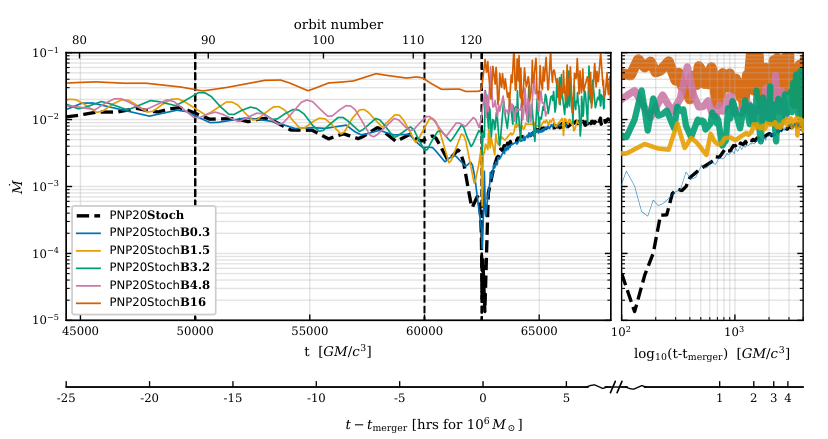
图注：左：不同净垂直磁代理强度模拟的质量吸积率随时间变化，颜色对应图例。模拟名末尾数字为全域总磁通与经验视界MAD极限之比；黑虚线为无磁基准PNP20 Stoch。时间用GM/c³及总质量10⁶太阳质量对应的并合前后小时表示，上轴为从初始时刻起的完整双星轨道数。右：从并合起计的对数时间轴上的吸积恢复，线越粗表示并合后15M以内积分磁代理越大。黑竖虚线标记分离20M、10M和并合。
怎么看这张图：按弱磁、mini-MAD、全局MAD顺序比较低谷深度；右侧看恢复。图例总磁通比与正文瞬时黑洞磁通比不同，曲线是模型扫描，不是观测拟合。 核心磁化与吸积低谷关系。
来源与置信度：arXiv HTML；source verified；https://arxiv.org/html/2609.25260v1/dotmBproxy.prods.postmergerwing.Vs4colorsafe.png
图14
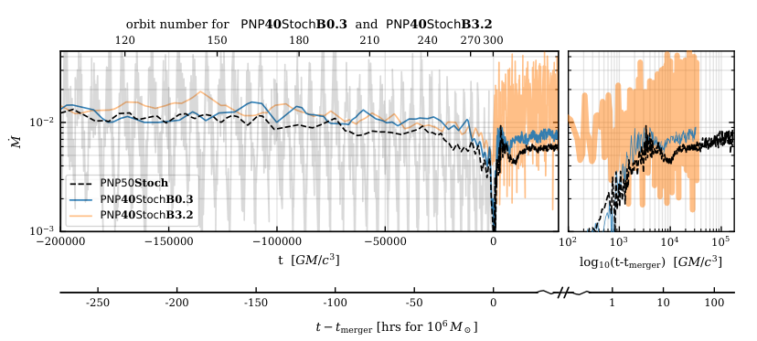
图注：PNP50 Stoch、PNP40 Stoch B0.3和PNP40 Stoch B3.2的质量吸积率。下轴时间单位为M；对并合时刻一致的两条模拟，上轴给出并合前累计轨道数。并合前曲线按随分离变化的十个轨道周期作滑动平均，并合后保留10M采样；浅灰另示PNP50 Stoch并合前全分辨率变化。右图采用并合后对数时间轴，粗橙线为磁化较强的B3.2，无磁模型为黑虚线。无磁和弱磁约10 kM出现第二次变暗；B3.2并合后处于MAD，磁扰动破坏自交激波并抹去该特征。
怎么看这张图：弱磁和无磁在约10⁴M后出现第二次下降，强磁扰乱激波后该形态消失。它依赖从宽分离演化出的较大空腔，不是所有并合的通用模板。 宽分离模拟与第二次变暗。
来源与置信度：arXiv HTML；source verified；https://arxiv.org/html/2609.25260v1/dotmWideSep.prods.postmergerwing.withexamplevar.Vs2.png
图18
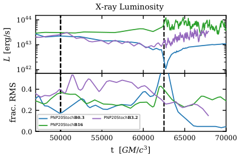
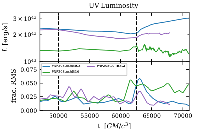
图注：SANE（PNP20Stoch B0.3，蓝）、mini-MAD（B3.2，紫）和MAD（B16，绿）的X射线与UV变异。X射线为0.1—10 keV，UV从光学边界至0.1 keV。并合前为清楚起见按十轨道滑动窗口平滑，并合后完整采样。上排光度在并合处与磁化的关系大致类似图11的吸积率，下排展示磁扰动随磁状态产生至少三种不同的分波段变异演化。
怎么看这张图：上排看各波段平均光度，下排看分数变异。mini-MAD不必比全局MAD更稳定；这些是热发射代理，未包含盘冕和观测响应。 磁状态的可观测谱段与变异预测。
来源与置信度：arXiv HTML；source verified；https://arxiv.org/html/2609.25260v1/Xray.bol.fracrms.png；https://arxiv.org/html/2609.25260v1/UV.bol.fracrms.png
强相关工作
二维深低谷基准是Krauth等（2023，https://doi.org/10.1093/mnras/stad3095），三维并合对照为Ennoggi等（2025，https://doi.org/10.1103/yc25-v1q4）。本文受控变化连接两者趋势，但初始条件、辐射近似及分辨并不完全相同，所谓统一应理解为主要机制的解释。
随机黏性来自Turner与Reynolds（2023，https://doi.org/10.1093/mnras/stad2275）的传播涨落思路，偏心盘自组织可对照Zanazzi与Ogilvie（2020，https://doi.org/10.1093/mnras/staa3127）。磁重联X射线讨论另引Krauth与Davelaar（2026，https://arxiv.org/abs/2602.11112），它与本篇代理场热光变不同，不能将未计算的非热辐射补入结论。
同一事件 / 同类源线索：
相似工作：
基础理论 / 方法工作：
相反观点 / 张力线索：
7. Multi-scale variability in the optical afterglow of GRB 251013C from high-cadence LAST observations
- 来源：arXiv / astro-ph.HE
- 链接：https://arxiv.org/abs/2609.25342
- 作者：R. Konno, E. O. Ofek, S. Garrappa, O. Teboul, E. Waxman, S. Ben-Ami, D. Kovaleva, A. Krassilchtchikov
- 评分：novelty 8/10，importance 8/10，relevance 9/10，final 9.35/10
- 推荐理由：LAST高时间分辨光学与XRT光谱共同检验刷新外激波、电子群变化，连接GRB辐射机制及快速结构。
中文题目：GRB 251013C高频采样余辉：宽再增亮与快速子结构的共同约束
做了什么：LAST在GRB 251013C触发后1622秒开始约4.2小时连续光学监测，单次曝光20秒；作者校正银河消光、用场星重新标定测光误差，再以宽再增亮和较快残差结构描述光变。红移0.572下转为源静止系后，主峰约1860秒、半高全宽约1760秒；峰后五个现象学快升慢降分量的相对宽度约0.23—0.38，支持至少两类变化尺度。Swift-XRT有限同期观测显示光学点与X射线谱外推相容，且两者共同变硬。
在绝热、微物理近似稳定且拟合下降段注能可忽略的条件下，慢冷却同步辐射与风型环境能同时解释硬谱和约−1.32的时间衰减指数。作者因此偏好具有结构的刷新外激波：较慢抛射物追上已减速激波，并带来更硬、占主导的电子群。五个拟合脉冲不是五次已识别的物理碰撞，XRT也错过主光学峰和多数子结构；壳层能量、洛伦兹因子及具体几何仍属条件估算。
为什么重要：余辉再增亮可以由注能、环境密度、喷流结构或内耗散造成，仅凭一个光变隆起很难区分。本文将短时采样、测光系统检查、变化宽度和跨光学—X射线谱斜率合在一起，增加了对机制的约束。尤其谱变硬说明不能只改变总能量归一化；模型还必须解释电子加速性质为何变化，这是比泛称注能更具体的物理要求。
理论 / 观测 / 仪器方法价值：方法上值得借鉴的是先用同场同亮度恒星检查相关系统误差，再分别用自回归模型描述相关结构、用现象学脉冲描述宽度，避免把一个分解直接当物理事件清单。跨波段时让X射线谱独立预测光学点，再比较光谱和时间闭合关系，使观测一致性与物理解释形成可追踪链条。
为什么应该关注：对高能瞬变及多波段协同，20秒光学采样能揭示稀疏高能观测遗漏的结构，但不能据此假设每个光学峰都有同步X射线或更高能对应。未来最有价值的是主峰和子结构的连续X射线、颜色及偏振覆盖，以区分正反激波、角向斑块和晚期内部耗散。本文并未提供TeV或中微子关联证据，应把联系停留在后续观测需求。
展开详细解读：文章讲解、背景、理论、重点章节、图表与相关工作
文章详细讲解
科学问题：外激波余辉常呈平滑幂律衰减，但该源有宽再增亮和叠加的快速波动。由于等到达时面会平滑一个大范围相对论发射区，宽度相对时间的大小可约束结构尺度；同时谱变化检验这些结构是否由同一电子群产生。作者希望从光变形状走到有条件的动力学解释，而非只列出几个光学峰。
作者怎么做：优先采用晚期精度较好的PSF测光，并与孔径测光及外部光变核对。用场星得到随时间变化的误差放大因子，按信噪比55自适应合并晚期点。峰后幂律下包络与自回归残差联合拟合，随后以五个快升慢降分量刻画高信噪比子结构，再与两个同期XRT窗口构建光学到X射线谱。
关键结果：残差具有时间相关而非独立点噪声，约束基线下自回归去相关尺度约0.51倍当前时间；脉冲宽度约随峰时成比例增加，比例0.344±0.019。再增亮期间X射线光子指数由较软的约1.89变为1.57，光学—X射线整体谱变化相容。慢冷却风型闭合关系用电子指数约2.14预言衰减约−1.36，与主峰后观测−1.32相近。
局限和下一步：去相关尺度依赖基线，五分量分解受重叠影响，极高形式显著性又涉及分布尾部外推。标准注能标度给出约四倍能量增长只是固定微物理示意，而谱硬化本身提示电子群变化。没有覆盖全部光学子峰的X射线数据，也未做动力学辐射全模型拟合，所以刷新外激波是可行工作图像，不是唯一被观测确定的机制。
关键结果是怎么做出来的
首先控制测光。635幅图中选取同场控制星，广泛样本的实际散布平均大于管线误差；作者不简单套统一2.2倍，而按余辉当时亮度和位置选择16—28颗星，得到K(t)约1.49—2.81。将20次曝光平均时，散布大致按独立噪声平方根下降，相关系统项上限约0.006 mag，远小于余辉约0.1 mag波动。此证据支持源内变化，但并不使每一个小峰的精确显著性免于模型依赖。
宽主峰在源静止系约1000—1900秒上升，1440秒左右有变陡，后段上升指数2.9±0.2，峰时1860±20秒。宽度1760±60秒是主峰半高全宽，而五个快速分量的宽度由10%—90%上升与90%—10%下降相加定义，两种宽度不是完全相同的统计量。不能将它们的数值当同一拟合参数直接相除比较误差。
自回归以相邻序列残差建模，用共同时间范围的逐阶似然比选择AR(4)，系数约0.335、0.350、0.193、0.100。残差rms为0.0774，创新项0.0359，显示相关结构被吸收。作者明确指出形式47σ依赖极端渐近尾部、精确数值无实质意义；不使用误差的符号游程检验也排斥独立序列，约10.7σ。重点是两种证据方向一致，不是宣传47σ天体发现。
基线敏感性见附录B：下包络约束时基线斜率−1.25、相关尺度0.51；放开后基线穿过数据中心，斜率−1.41、尺度0.06。主文用于物理闭合的主峰下降−1.32是另一种整体表征，不能与AR下包络斜率混成同一测量。固定包络方案内，改阶数、采样和时间映射仍得约0.4—0.5量级，说明有亚整体尺度结构，但0.51不是与模型无关的唯一时钟。
五个FRED分量主要用于1900—6100秒区间，表中相对宽度0.23—0.38。宽度正比峰时的拟合χ²/dof=3.873/4，相对固定宽度的小样本AIC差约35；允许自由时间原点只改善1.3σ，故不采用。剔除分量的检验用2000次零假设模拟拟合有效χ²分布，再外推至4.7—15.4σ；这些尾部数值并非2000次模拟直接采样验证，且不证明每分量独立对应一团抛射物。
跨波段窗口在约1089—1207秒与3349—3517秒，主光学峰处没有XRT覆盖。两窗口内光学—X射线斜率与X射线内部斜率相容，后者和前者的变硬幅度也相容。硬谱若属于慢冷却未冷却段，给p=2.14±0.12，再用风型闭合关系连接−1.36衰减。纯密度改变或固定p注能不能自然同时生成这次谱硬化，作者因此要求新的较硬电子成分占主导。
展开背景、理论、公式、模型和章节导读
背景知识
长伽马暴余辉通常来自相对论抛射物与周围介质形成的外激波。激波加速电子并放大磁场，电子同步辐射从射电延伸至X射线。标准光谱由最低注入电子和冷却时间定义的频率分段，不同分段把谱指数、电子指数及时间衰减联系起来。
刷新激波指较慢抛射物在前方爆炸波减速后追上，补充能量。晚碰撞不必要求中心发动机一直工作到观测再增亮时刻，因为初始就可有不同洛伦兹因子壳层。反之，出现晚峰也不自动证明这种机制，需要结合宽度、谱变化和其他信号排除替代解释。
相对论等到达时面会将发射区不同位置的光子混合。视野约1/Γ角尺度上的整体变化通常被平滑到与观测时间同量级；更小角斑块、径向结构或反激波可能产生较快变化。因此Δt/t<1提供结构线索，却不能仅由该不等式唯一识别内部辐射或外部辐射。
光变分解是一种统计描述。基线稍微变陡就可吸收一部分缓慢波动，重叠脉冲也可在相邻分量间分配振幅。稳健结果应分层表达：数据有结构、结构在给定基线下的宽度、以及把结构对应到物理壳层，这三步需要越来越多假设，本文并未完全完成最后一步。
基础理论 / 方法脉络
同步谱采用Fν正比于t的α次方、频率的−β次方。慢冷却且注入频率低于光学、冷却频率高于X射线时，β=(p−1)/2。若把硬谱误放到快冷却中间段，虽β约1/2接近，但预言下降太慢，说明单看光谱斜率不能判断冷却顺序。
风型介质密度随半径平方反比下降，和均匀星际介质不同的动力学导致不同时间闭合关系。本文用同一p比较两者，风型更接近下降；这一结论依赖绝热、近似固定微物理且拟合阶段注能弱。早期强碰撞期间这些假设不严格，不能把下降段关系机械用于整个峰。
光学点落在X射线幂律外推上支持共同谱段，但还存在吸收、消光和未分离底层余辉。论文校正银河消光，未由这组数据独立建立复杂宿主消光模型。谱折点在光学以下不会使两带斜率不一致，因此这项一致性测试不能单独证明冷却频率必然高于X射线，仍需时间闭合辅助。
在固定微物理下，风型未冷却段的通量依赖能量与时间；把能量写成时间幂律可估算维持陡升需要多强注能。但本文已有p变化证据，所以计算只用于示意强度。类似地，峰时推洛伦兹因子需要每次碰撞前能量和风密度，时间先后不足以唯一决定壳层速度先后。
公式与推导
以下沿原文的观测校正、谱闭合及动力学标度连续展开。时间数值除观察启动外均为源静止系。
先将时间和AB星等转为分析量：
$z=0.572$，星等先作银河消光校正，本文采用$A_{\rm clear}=0.195$ mag。20秒曝光是观察者系采样，不应和表中静止系峰时混用。
峰后分解为
$t_{\rm ref}=1900$ s，$\epsilon_i$为此前残差不能预测的创新。AR按样本序号定义，映射到实际$\Delta t/t$时必须使用实际采样，不能把四阶简单解释为固定80秒物理尺度。
跨波段谱指数为
$\nu_O=5.62\times10^{14}$ Hz，$\nu_X=2.42\times10^{18}$ Hz为10 keV。若两带同属一个无折幂律，两指数应相同；X射线谱给出预测，光学点提供独立波段检查。
在采用的慢冷却顺序下，
硬态$\Gamma_X=1.57\pm0.06$给$p=2.14\pm0.12$；较软状态若也处同一谱段，则$p\simeq2.78$。改变能量归一化本身不能改变这个谱斜率。
标准绝热闭合关系为
代入2.14得−0.86和−1.36，后者接近观测−1.32。这里是特定谱段及无持续强注能下降段的比较，不是所有风模型都必然匹配。
保持冷却频率较高需要
$E$为各向同性等效激波动能，$A_*$为风密度归一化，$\epsilon_B$为磁能份额，$Y$为康普顿参数。低密度或小磁份额可以提高$\nu_c$，但现有两波段不足以唯一求这些参数。
固定微物理的风型标度为
用陡升2.9得到$q\simeq5.4$，于是$(1860/1440)^{5.4}\simeq4$。这是固定p近似下的示意能量比；由于实际电子谱也变化，不能当作入射壳层能量测量。
若快速结构纯由角光程控制，
0.23—0.38对应$\Gamma\theta_{\rm patch}\sim0.48$—0.62，约为可见区域尺度的一半。径向结构或斑块偏心位置也会影响持续时间，所以这里仅给尺度直觉。
风介质中的参考减速律为
在不同碰撞前能量相同的参考下，三个峰给约16、11、3.3再乘环境与能量因子。真实刷新会增加能量，必须将每次的$E_{{\rm k},i}$分别保留。
要求后一次洛伦兹因子更低时，
由367、1860、219500秒峰时得到前两次能量比小于5.1、后两次小于118的条件。可见速度排序不是仅由峰时数据推出，而取决于未被独立约束的能量演化。
模型拟合 / 应用方法
峰后幂律与AR联合优化，并用软惩罚要求基线不明显超过数据，权重在5—200间结果稳定。真正敏感的是是否施加下包络，而不是惩罚权重数值；一旦取消约束，相关时间从0.51降至0.06。作者选择下包络是为给较保守、较长的残差尺度，因此不能称整个基线家族都验证了0.51。
AR阶数按相邻模型共同区间的逐阶似然比选取，创新项近似去相关，另用打乱顺序和纯噪声模拟检验。附录C图11b固定拟合ACF、改变时间窗口作样本滞后到相对时间的映射，并非每窗口都独立重拟合；高信噪比截断检验才另得AR(3)、约0.48。区别这两种检验有助于准确理解稳健性范围。
FRED脉冲是经验形状，邻峰2—4振幅强退化；大振幅误差不自动表示整个组合结构不需要。原文式(9)的参数tp被称作峰时，但按该写法一般不是函数极值，A也不直接等于峰高，需额外平移和归一化；本文没有提供实现核查来消除这处记号歧义。因此本解读采用作者给出的10%—90%派生宽度及整体趋势，不拿式(9)字面系数重新宣称精确脉冲峰形已复现。
XRT窗口有限，光子指数的全样本分组均值与两重叠窗口内斜率差并非同一统计摘要。本文保留Γ约1.89到1.57的分组结果，并将窗口内β变化只用于一致性判断，不把两种差值相减制造矛盾。作者由光学增亮1.34倍及谱变硬预言X射线约15.5倍，观测约15.7倍；这是宽谱形状自洽检验，不是证明全部光学峰与X射线一一同步。
外部早晚峰来自异质滤光片数据，拟合允许各滤光片星等偏置，晚峰另外改变选点范围估计系统误差。主峰与早晚峰都约宽于当前时间的同量级，但对称上下降假设仅作尺度估算。动力学解释没有给出能量、密度、磁场和壳层结构的联合后验，保留微物理变化与正反激波退化是必要的。
重点章节 / 结果段落怎么读
-
第2节与附录A先看控制星、误差放大及相关系统上限，再评价快速光变是否可信。
-
第3.1—3.2节和附录B区分主峰衰减、下包络残差及AR相关时间，不将不同基线指数混用。
-
第3.3节表1、图5—6看重叠分量、宽度定义和有限模拟尾部校准，避免五个FRED等于五团物质。
-
第3.4与4.2节从光学—X射线一致性到慢冷却风型闭合，同时标明XRT覆盖缺口。
-
第4.3—4.4节逐个保留注能、斑块尺度和洛伦兹因子估算的条件，理解为何谱硬化要求新的电子群。
关键图表与解读
图5
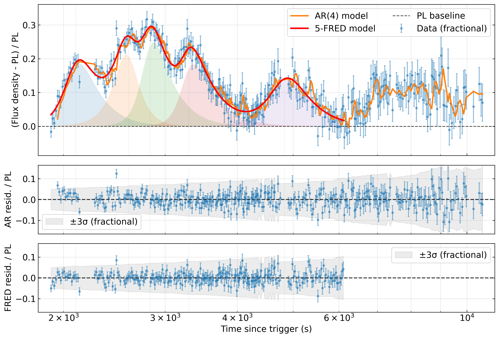
图注：LAST测得的GRB 251013C峰后光变相对于幂律基线的分数残差。蓝点及1σ误差为应用场星误差修正后的数据，橙色锯齿实线为最佳AR模型，红色平滑线为组合FRED模型，填色区域为各FRED贡献。下方分别给出AR与FRED拟合后的分数残差，并以灰色显示±3σ标准差带。
怎么看这张图：数据相对的是受下包络约束的基线，不是已唯一分离的底层物理余辉。重叠峰只是经验分解，颜色分量不能直接数成独立壳层；极高形式显著性还涉及零假设尾部外推。 展示宽峰上的快速子结构及两种统计表征。
来源与置信度：arXiv HTML；source verified；https://arxiv.org/html/2609.25342v1/images/GRB251013C_PL_residuals_AR_vs_5FRED.png
图7
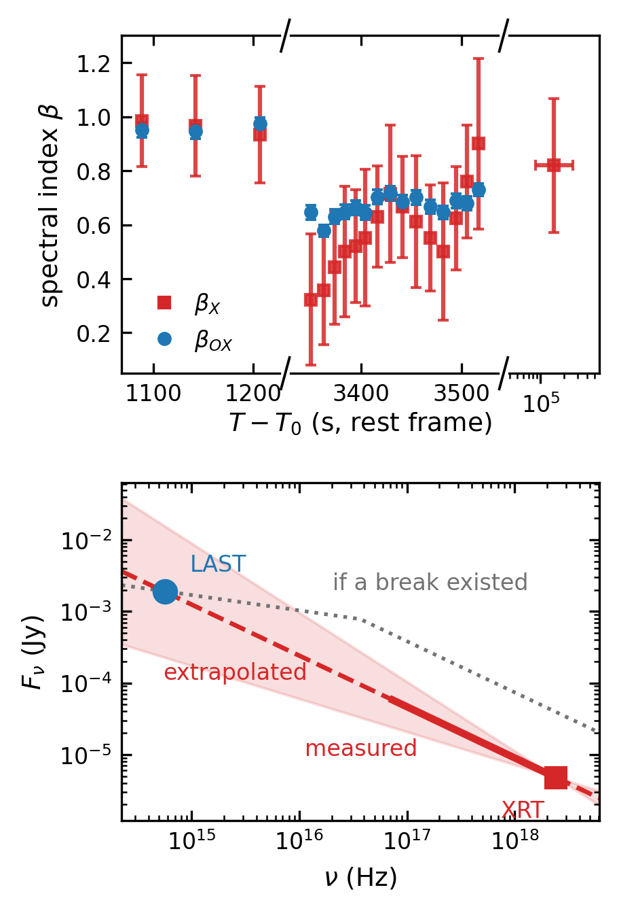
图注：光学至X射线谱能量分布。上图为重叠XRT与LAST时段的X射线带内谱指数βX（红方块）和光学—X射线指数βOX（蓝圆）；最右点是较晚X射线时段，一次谱拟合覆盖两个通量分箱。下图为源静止系触发后3429秒的谱；直线及±1σ带仅由X射线确定，光学点用于检验预测，点线示意含冷却折点的谱。
怎么看这张图：比较光学点是否落在独立X射线外推上，再比较两类谱指数的共同变硬。该一致性仅覆盖有限窗口，冷却折点位于光学以下不能由此排除，仍须结合时间闭合。 连接共同电子谱与刷新激波解释。
来源与置信度：arXiv HTML；source verified；https://arxiv.org/html/2609.25342v1/images/GRB251013C_optical_Xray_SED.png
强相关工作
基础同步余辉分段来自Sari、Piran与Narayan（1998，https://doi.org/10.1086/311269），风型闭合来自Chevalier与Li（2000，https://doi.org/10.1086/308914）。刷新激波思想由Rees与Mészáros（1998，https://doi.org/10.1086/311244）等提出。本篇不是提出全新注能机制，而是将密集光变和谱硬化一起作为其需满足的约束，尤其要求改变主导电子群而非仅增大能量。
变化时间尺度的解释关联Ioka等（2005，https://doi.org/10.1086/432567）对外激波几何限制的讨论；密度跳变的平滑作用可对照Nakar与Granot（2007，https://doi.org/10.1111/j.1365-2966.2007.12245.x）。这些关系支持作者偏好有结构的刷新相互作用，但本文没有以统一似然逐一拟合所有替代机制，因此不能将引用理论直接等同于对内部耗散或复杂密度模型的全面排除。
同一事件 / 同类源线索：
（未提供）
相似工作：
基础理论 / 方法工作：
相反观点 / 张力线索：
（未提供）
8. Kink instability as a particle acceleration mechanism in X-ray binaries and the connection to the outburst cycle
- 来源：arXiv / astro-ph.HE
- 链接：https://arxiv.org/abs/2609.25842
- 作者：Emma L. Elley, James H. Matthews, Alex J. Cooper, Fraser J. Cowie, Rob Fender
- 评分：novelty 8/10，importance 8/10，relevance 9/10，final 9.35/10
- 推荐理由：扭结增长、磁耗散及冷却联系X射线双星爆发周期，直接补供能到粒子加速的物理链。
中文题目：扭折不稳定性能否持续加速X射线双星喷流中的粒子
做了什么：论文把一维磁喷流模型、已有扭折不稳定性模拟和辐射损失估算组合起来，研究硬态X射线双星紧致喷流的粒子加速位置。环向磁场支持的m=1扭折扰动可随流体运动累积增长，作者以三次指数增长作为进入非线性区的示意阈值；在多组参数下，不稳定性可在整体加速区内出现。再把已有柱状模拟的耗散时间按当地喷流半径缩放，得到延展的磁能耗散区，可能帮助维持持续非热辐射。
结论是机制可行性，不是已确认某个双星的加速机制。增长计算采用极向阿尔芬速度近光速，所得增长次数偏向上限；非线性阈值和耗散缩放也有模型依赖。本文尚未自洽求粒子谱、冷却和可观测射电形态，若干方程的Γ因子、参考系与能量单位还需统一，因此耗散距离只宜读作量级。提高喷流速度通常使增长推迟，作者据此讨论爆发状态转换，同时反对把高功率时突然灾变扭折当成离散抛射的已成立解释。
为什么重要：硬态平谱喷流需要沿途补充高能粒子，单次加速后纯绝热膨胀往往难以维持观测。扭折能把有序磁场能转为热和非热粒子，是内部激波之外的一条候选途径。本文将不稳定性的起始位置与喷流持续供能、辐射效率连接起来，提醒“容易失稳”与“能够把能量送到很远”之间存在约束，而不是越快耗散越符合所有观测。
理论 / 观测 / 仪器方法价值：可借鉴的是沿实际加速流积分共动增长率，而非把一个局部增长时间直接当全喷流稳定性；随后区分开始耗散的高度、持续耗散的长度和实际辐射可见长度。把这三个尺度分开，才有可能将谱折点、波段时延和VLBI形态用于共同检验。不同文献模型的磁化、能量密度和时间参考系需先统一，才能进行精确数值拼接。
为什么应该关注：X射线双星中的高能粒子加速与射电喷流、硬X辐射和超高能伽马现象相关，但本文没有计算PeV粒子上限、伽马吸收或中微子产额。对高能及IACT研究，下一步需要把扭折非线性演化与粒子输运、冷却及伴星辐射场放进同一模型；不能仅凭能量够大，就把观测到的最高能光子归因于扭折重联。
展开详细解读：文章讲解、背景、理论、重点章节、图表与相关工作
文章详细讲解
科学问题：黑洞双星硬态常有持续紧致喷流，状态转换时可能出现耀发和离散抛射，软态紧致喷流又会减弱。内部激波能够提供部分持续加速，但磁主导流的电流驱动扭折也可能在很靠近基底处发生。作者问的是它能否在观测提示的加速区内长大，以及耗散是否过快导致喷流无法延伸。
作者怎么做：采用由准抛物线转为锥形的一维喷流，指定终端洛伦兹因子、加速参数、宽度和形状。将文献给出的极向阿尔芬跨越时间与磁场螺距结合，沿流体路径积分增长次数。到三次e折叠处读取喷流半径，再用已有周期柱状模拟约750个半径光行时的尺度估算磁能耗散，另外用辐射能量预算检查长距离传播。
关键结果：较慢、加速延展较长或较接近锥形的流在许多基准中更容易累积增长；较快终端速度和更低黑洞自旋通常推迟失稳。在观测允许的一些参数区，耗散开始高度与10⁹—10¹⁰ cm量级的谱折点解释相容，耗散长度可达10¹⁰—10¹² cm量级。但这远短于已分辨射电喷流的约10¹⁵ cm可见尺度，二者本来就不是同一个量。
局限和下一步：三次增长是任意但直观的线性终止标准，已有模拟又是非膨胀、周期边界的柱状流，并非完整双星喷流。快速辐射损失会反过来改变磁化和速度，本文主要借用另一个模型给预算限制，尚未闭合动力学。作者也明确指出扭折不一定毁掉整个喷流，更不能单独解释软态关停与远距离离散抛射。
关键结果是怎么做出来的
先确定增长率的物理输入。磁螺距为半径乘极向场与环向场之比，环向占优意味着更短螺距和更快扭折。文献给共动增长时间约7.5倍螺距除以极向阿尔芬速度；作者采用Blandford–Znajek式螺距，与黑洞自旋、磁力线旋转及流体Γ相连。不同发射机制可能改变这一关系，不能视作所有喷流的几何恒等式。
增长图从2倍喷流定义基底开始积分到2000个引力半径或给定高度，避免Γ=1基点的速度问题。图1使用最大自旋和vA≈c，对终端Γ、形状与加速速度扫描。磁化随整体加速下降，实际vA低于c会减少增长次数，因此这些图首先是偏快增长的基准，而不是无条件失稳的严格下界。
作者用三次e折叠、即初扰动放大约20倍定义耗散起点。是否真正非线性还取决于初始振幅相对喷流宽度；三次增长不会对任何微小种子都保证饱和。图6叠加MAXI J1535−571谱折点推得的10⁹—10¹⁰ cm范围，只在同一模型前提下筛出相容区域，不能把阴影解释为统计可信区间。
从起点到耗散长度有两条量级路线。按非热与整体动能转换效率比估算，作者取η约0.1或0.01给约秒至十秒时间；按Bromberg等模拟约750rj/c缩放则约10—100秒。本文相关共动与实验室长度转换未始终显式保留Γ，且一维能量推导中有额外Γ因子歧义，本解读保留其尺度级比较而不使用这些数值作精确新约束。
长距离射电形态提供能量存活要求。作者引入Potter的辐射损失模型，认为若过早接近粒子—磁场等分并把大部分能量辐射掉，可能形成失败喷流；Swift J1727的已分辨延伸排除了该源处处极端损失的图像。在组合模型中，非热转换相对整体加速效率可能需低至约1%量级。该数值随初始磁化、功率和冷却处方改变，不是直接测得通用重联效率。
爆发周期解释假设吸积率提高会增强基底磁通与终端速度，进而推迟扭折、延长耗散区。但作者也列出硬软转换时总光度不明显变化的例外，吸积率增长不是普遍观测事实。离散抛射若归于高功率突然扭折反而与更稳定趋势冲突；本文最终保留多机制与短时功率增强的可能，而未完成抛射形成模拟。
展开背景、理论、公式、模型和章节导读
背景知识
扭折不稳定性是带电流磁柱的非轴对称变形，其中m=1模使整条或内部电流芯像弯曲软管一样偏离轴线。它依赖磁场螺旋结构、压力和边界条件，不能将任意弯曲喷流图像直接等同于已识别扭折模。非线性阶段可能产生电流片和重联，从而加热并加速粒子。
磁主导喷流的能量可以进入整体运动、热运动、非热粒子或被辐射带走。高整体Γ意味着大量能量已经转为定向流动，但不必意味着有足够非热粒子发光。持续射电需要粒子在沿途补充能量，同时总能量不能在基底就全部损失，这形成加速效率与传播距离的折中。
硬态紧致喷流的“紧致”是观测类别，未必只延伸到很小物理尺寸。射电干涉图看到表面亮度超过阈值的部分，暗外段仍可存在。耗散位置也不同于同批电子稍后辐射位置，光学厚度、同步冷却和绝热膨胀都会改变可见长度，因此不能将模型耗散长度直接对上VLBI末端。
状态转换常伴随盘冕结构、磁通和喷流变化，但多个过程同时演化。扭折、内部激波、再准直激波可能共存，在不同位置主导；本文的可行性讨论不构成对内部激波成功模型的否定。特别是极高能粒子还需要加速率与逃逸、冷却竞争，本文未求这些谱端条件。
基础理论 / 方法脉络
局部共动增长时间只有乘上流体在每段的停留时间才变成累积放大。实验室距离dz对应共动时间dz/(Γβc)，高速流同样走过一段空间时留给扰动增长的共动时间较少；螺距还随Γ变化，进一步改变增长。这解释为何速度能影响稳定性，不能只用磁场强度直觉判断。
一维模型通过Γ随高度上升、磁化下降来表示磁能向整体运动转换，并在终端高度变为锥形匀速流。它预先规定平滑背景，而没有让扭折反作用改变形状，因此适合判断线性增长机会，不适合单独预测饱和后的破碎、重联和粒子谱。
磁化有不同口径：极向磁化控制本篇增长时间中的阿尔芬速度，总磁化决定整体能量预算，磁能与非热电子能的等分比则控制辐射效率。它们不天然相同。将一维模型、柱状模拟与辐射模型连接时必须核对定义；等分比接近1不意味着所有流体磁化参数都等于1。
非线性耗散与辐射冷却是连续耦合的。加速让粒子能量增加，快速冷却把能量带离流体，改变压力与磁化，继而影响流速和扭折。本文把不同模型分步拼接可以展示可能范围，但不能取代含辐射反馈的三维演化，这正是数值结果应保持条件性的原因。
公式与推导
以下保留原文增长链，并将能量尺度中的记号问题单列，避免把不一致因子隐藏在推导中。撇号表示流体共动系。
m=1扰动可写为
$\mathcal P'$为有长度量纲的磁螺距，不是无量纲俯仰角；环向场增大会缩短它。
采用的局部增长律为
$\sigma_p=B_p'^2/(4\pi\rho'c^2)$。取$v_A'=c$是高磁化上限，使时间最短；磁化降低会减慢增长。
BZ式螺距估计为
$a_*$为无量纲黑洞自旋，$\ell$为磁力线角速度与黑洞角速度比，取约1/2。这里用标准Kerr半径形式解释原文显示不清的根号，不由排版残缺推断新物理。
累积增长次数为
$N$无量纲，扰动振幅增大$e^N$。本文定义$N=3$的位置为$z_{\rm diss}$，它只是约20倍放大的示意阈值，实际非线性还取决于种子相对半径。
加速段的模型标度为
终端高度$z_t=(\Gamma_{\max}/a_\Gamma)^{q_1}r_H$，之后Γ固定。形状、基底和积分长度同时随参数改变，等值线不能只归因于其中一个因素。
理想背景的能量关系为
这使密度随截面积和速度稀释，磁化随整体加速下降。该模型尚未包含显著辐射损失，故后面引入冷却时不能仍假定它精确不变。
用通常磁能密度$u_B'=B'^2/(8\pi)$时，
本文式(14)将磁能量写作$\rho'c^2\sigma$，与这里惯用能密度相差因子2，可能是在使用磁焓口径；跨模型精算需先统一。第二式是指数损失定义，一个e折叠后剩1/e，损失份额是1−1/e。
进一步核对原文式(15)、(19)：其低Γ极限给$u_B'\propto[r^2\beta\Gamma^2]^{-1}$，按所列整体能量转换项相除可得
但原文式(21)又多出$1/\Gamma$，并据此导出耗散时间。这里指出代数口径待澄清，不将后续约秒至十秒结果当作已闭合的精确推导；不影响前面增长积分的独立定义。
柱状模拟的缩放采用
若该时间按共动系解释，则实验室传播长度应为$\Gamma\beta c\tau'_{\rm sim}$；原文图5使用$\Delta z\sim750r_j$的缩放，因此还需统一模拟与流动参考系。它适合作量级启发，不能据此精确测得喷流长度。
最终耀发能量的量纲关系应为
功率乘时间才是erg。原文式(29)写erg/s但随后的文字解释为约$4\times10^{38}$ erg，本稿采用能量口径，并保留效率、持续时间和重复耗散的不确定性，不把它当作实测耀发能谱。
模型拟合 / 应用方法
本篇没有新观测数据，也没有针对某个源求最佳参数后验。主要工作是扫描一维参数空间，再叠加来自其他源、其他模型的加速高度范围。图中的斜线区域是示意排除条件，既不是对该源同时拟合全谱后的可信域，也不代表所有双星共享相同终端Γ、自旋或喷流形状。
增长率用vA≈c、固定BZ螺距和三次增长阈值；改变这些会移动耗散起点。尤其极向与总磁化的关系、初始扰动振幅及外部约束未自洽演化，不能从若干增长次数直接推出宏观喷流彻底破坏。本文自己讨论了外层保持稳定、仅核心扭折的情形。
耗散长度借用Bromberg等非旋转柱状流模拟，约一半电磁能可在特定螺距剖面中耗散，但模拟未到完全松弛。将750rj/c用于扩张、加速的真实喷流可能保留大体尺度，却未展示统一参考系及辐射反馈的验证。原文还将10⁵rg与约3×10¹¹ cm对应，而本篇10太阳质量的rg约1.5×10⁶ cm给1.5×10¹¹ cm；这些量级换算差别强化了不作精确参数限制的必要性。
辐射预算采用另一篇模型对初始磁化与功率的限制，再推非热效率较低；耀发示例却使用约10%能量进入非热粒子。二者可对应不同状态或瞬态预算，不能在未说明情况下当同一稳态解。要检验整套爆发循环，应以同一能量守恒、粒子分布、冷却和辐射转移模型生成光变与图像，再与观测灵敏度比较，目前尚未完成。
重点章节 / 结果段落怎么读
-
第2节先区分磁螺距、极向阿尔芬速度和共动增长时间，再读图1—4的累积积分及基底选择。
-
第3.1—3.2节检查能量密度、Γ因子和参考系，不把磁能稀释全部当成粒子加速。
-
第3.3节图5—6把起始高度与耗散长度分开，明确三次增长和750rj缩放各自来自什么模型。
-
第3.4节连接冷却损失与长距离射电形态，理解低非热效率为什么可能是存活条件。
-
第4.4—4.5节看耀发能量与离散抛射的不同要求，特别注意作者反对高功率突然灾变扭折的简单叙事。
关键图表与解读
图4
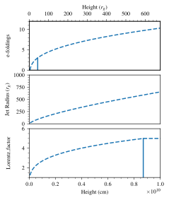
图注：基准喷流的累积e折叠次数、半径和整体洛伦兹因子，参数为a*=0.5、q₂=1.4、aΓ=0.5、Γmax=5。第一幅面板的竖线标出达到三次e折叠的高度；最下面板的竖线标出喷流转为锥形的高度。基准模型中扭折在整体加速区内发展。
怎么看这张图：比较三次增长与加速结束的位置。三次增长只表示初始扰动放大约20倍，是否真正达到非线性取决于初始振幅；此图并不证明整个喷流被灾变摧毁。 核心增长到加速区的关系，避免不可靠绝对耗散缩放。
来源与置信度：arXiv HTML；source verified；https://arxiv.org/html/2609.25842v1/fiducial_jet.svg
图6
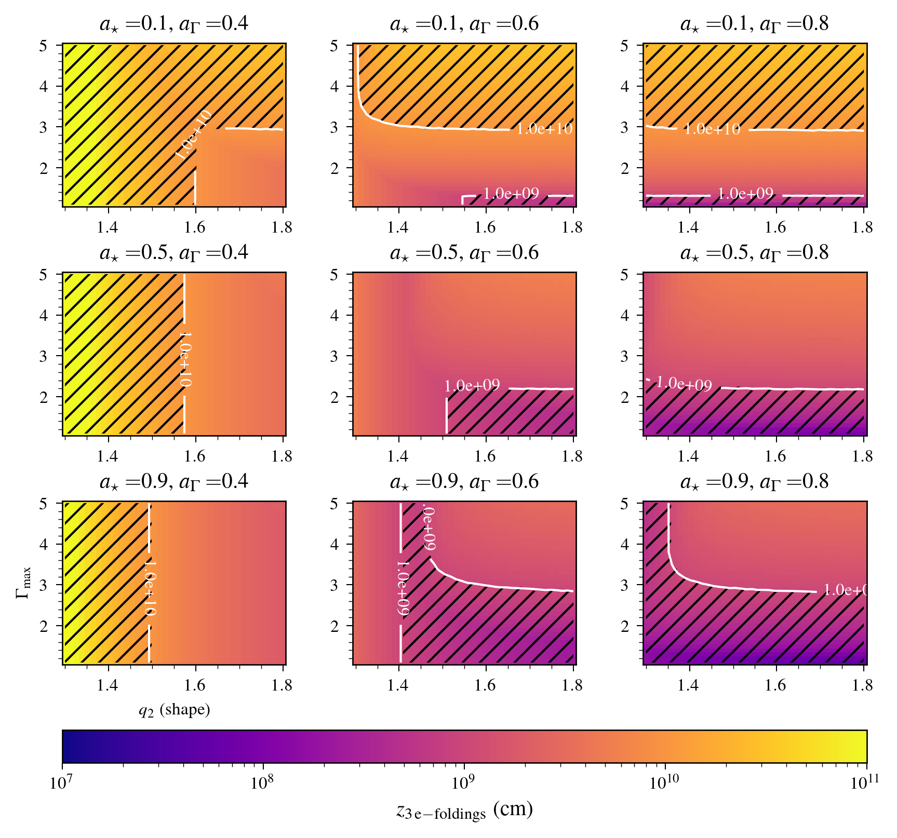
图注：宽度参数ar=1时达到三次e折叠的高度。各面板对应不同黑洞自旋a*与加速参数aΓ组合，面板内横纵参数为Γmax与q₂，与图5使用相同参数空间。等值线及斜线阴影参照Russell等（2020）对硬态紧致喷流首个加速区高度的估计。
怎么看这张图：图6显示增长起始高度，图5才是据此缩放的耗散长度；原图注有混用措辞，本处按标题和正文区分。阴影来自外部谱模型10⁹—10¹⁰ cm示意范围，不是本篇观测后验可信区间。 连接线性增长位置与观测尺度，并保留模型依赖。
来源与置信度：arXiv HTML；source verified；https://arxiv.org/html/2609.25842v1/dissipation_heights.png
强相关工作
一维背景来自Zdziarski等（2022）《A simple analytical model of magnetic jets》（https://doi.org/10.1093/mnrasl/slac060），非线性耗散缩放来自Bromberg等（2019，https://doi.org/10.3847/1538-4357/ab3fa5），辐射损失预算来自Potter（2017，https://doi.org/10.1093/mnras/stw2609）。本篇将它们拼接用于X射线双星，关键下一步是统一假设与参考系，而非把三篇模型各自的可行性当作一个已自洽解。
观测联系包括Russell等（2020）MAXI J1535−571谱折点演化（https://doi.org/10.1093/mnras/staa2650）和Wood等（2024）Swift J1727分辨喷流（https://doi.org/10.3847/2041-8213/ad6572）。内部激波替代可对照Malzac（2014，https://doi.org/10.1093/mnras/stu1144）。本文还引用LHAASO双星超高能结果作为加速动机（https://doi.org/10.1093/nsr/nwaf496），但没有对其粒子能量、辐射机制和轨道传播作拟合，不能据此建立扭折已解释PeV伽马的结论。
同一事件 / 同类源线索：
相似工作：
基础理论 / 方法工作：
- https://doi.org/10.1093/mnrasl/slac060
- https://doi.org/10.3847/1538-4357/ab3fa5
- https://doi.org/10.1093/mnras/stw2609
相反观点 / 张力线索：
（未提供）
9. Neutrino Astronomy at High Energies - An Experimental Review
- 来源：arXiv / astro-ph.HE
- 链接：https://arxiv.org/abs/2609.26436
- 作者：Christian Spiering
- 评分：novelty 5/10，importance 9/10，relevance 10/10，final 9.15/10
- 推荐理由：高能中微子实验综述覆盖弥散流、点源与仪器路线，为重点领域提供系统证据边界。
中文题目：高能中微子实验综述：从弥散背景走向可辨认的源
做了什么：Spiering从实验角度回顾高能中微子天文学：怎样从大气μ子和大气中微子中提取宇宙成分，为什么径迹与级联事件承担不同任务，以及源目录、时间窗和多信使资料如何改变发现能力。正文主要以2026年5月为进展截止点，修订稿补入个别更晚结果；这是带明确时间边界的综述，不是9月23日发布的一组全新测量。作者将IceCube、Baikal-GVD、KM3NeT的仪器响应、弥散能谱、银河面、NGC 1068、耀变体及暂现源放在同一证据框架中。
最值得带走的结论是：宇宙高能中微子总体成分已确立，但已知点源还没有解释全部弥散通量。MESE资料支持能谱在约30 TeV附近变化；银河面信号有空间模板支持；NGC 1068和TXS 0506+056的证据则依赖具体样本、重建与搜索定义。不同探测器、不同拓扑和不同信使的联合分析是下一步关键，单纯扩大几何体积不能代替角分辨率、背景建模和系统误差控制。
为什么重要：中微子把高能粒子相互作用与电磁辐射连接起来。π介子衰变可同时产生中微子和伽马射线，但伽马可能在源内被吸收并级联到低能，使“中微子明亮、TeV伽马暗弱”的源成为合理候选。综述的价值在于把这种物理图景与实际可测量量连接起来：某源未被MAGIC探测、某目录给出上限、某拓扑出现能谱超额，都必须在响应与能段条件下解释，不能只凭一张叠加能谱判断模型已被证实。
理论 / 观测 / 仪器方法价值：方法上的主线是前向建模。真实的方向、能量和味组成先经过相互作用、光传播、触发及重建，再成为事件样本；拟合比较的是这些样本与信号加背景预测，而非直接对天体通量画一条曲线。文章尤其适合作为读源关联论文的检查表：目录是否预先固定、角误差是否重新调节、时间窗是否扫描、不同分析是否共享事件、显著性是否包含全部试验。它也解释为何更好的重建可能降低旧关联的显著性。
为什么应该关注：对高能伽马、IACT与天体中微子研究，优先读银河面模板、NGC 1068宽带约束和GRB上限。它们分别对应弥散强子辐射、被遮蔽的核区以及瞬态喷流三种不同物理环境。把这些结果迁移到自己的目标时，应先匹配能段、时间窗、空间尺度和源种群，不能把一个目录的27%贡献上限推广到所有耀变体，也不能把未探测中微子等同于不存在强子加速。
展开详细解读：文章讲解、背景、理论、重点章节、图表与相关工作
文章详细讲解
科学问题：高能宇宙中微子来自哪些天体，已有实验究竟确认到了哪一层？总体通量超额、银河扩展发射、单个方向超额和某次耀发关联是不同假设。前两者可利用大量事件的能谱或空间分布，点源还要求足够精确的方向，暂现源则增加时间一致性。解释来源需要把观测选择与辐射机制同时纳入。
作者怎么做：这是一篇文献综合，没有新的统一事件样本或重新拟合所有实验。第3节建立光学切伦科夫探测器与超高能射电方法的基础，第4—6节逐项比较弥散、银河和点源证据，第7节讨论联合天空图与警报。图中各实验可能使用单味或全味、通量或能量积分量、不同置信区间与曝光，阅读时必须逐一保留这些口径。
关键结果：在统计量较高的弥散资料中，单一幂律和固定味比例已成为可检验假设；在源研究中，NGC 1068的持续超额及TXS的历史暂现仍需结合独立数据和重建稳定性评估。银河面信号与强子伽马模板相容，但未分辨源可混在所谓弥散成分中。GRB和TDE的个别巧合并未自动建立整个种群的贡献。综述因此强调多探测器交叉验证而非累计一串局部显著性。
局限和下一步：作者提供的是截至特定时间的实验图景，不能充当实时仪器状态表。部分文字存在内部不一致，例如KM3NeT已部署弦数在图注、正文和表格中的口径不同，47个赛弗特星系的排除说明与随后的举例也不一致。本稿保留主要结果及条件，不从这些文字推导新的精确结论。后续应回到每项原始分析核查完整似然、系统误差及样本交叠，再做联合解释。
关键结果是怎么做出来的
首先，宇宙弥散成分的建立依靠高能超额与大气背景拒绝。常规大气中微子近似比宇宙成分陡，HESE要求相互作用起点在探测器内，并利用外围否决来自同一空气簇射的伴随μ子。这个选择既压制大气μ子，也压制部分向下大气中微子，因此天顶角分布本身提供信息。Baikal-GVD六季级联结果达到5.1σ，但其通量归一化高于若干IceCube结果；能段和响应不同，不能简单平均，更不能未经检验归因于某个宇宙变化。
其次，MESE中能起始事件跨越更低能区，综述引用的折断幂律相对单幂律偏好为4.7σ，约30 TeV上下指数为1.7±0.3和2.8±0.1。这里的显著性是特定谱形比较，不是又发现一次宇宙中微子。低能斜率变平会减弱把高能陡谱外推至低能后得到的伽马背景张力，所以“所有中微子源都必须完全遮蔽”超出了证据。味组成最佳点约0.30:0.37:0.33，与标准振荡后的π衰变相容，但三元图的宽置信区间并不唯一选择生产机制。
第三，2023年银河面分析利用机器学习提高级联效率，将Fermi-LAT启发的π零模板与探测效率、角扩展卷积后比较事件。三个模板局部显著性约4.71、4.37、3.96σ，合并试验后4.5σ；修订稿脚注补充后续分析5.7σ。高于200 TeV的纬度集中研究采用不同样本和空间假设，报告的较高银河贡献与低能模板外推存在张力。这不能通过把两个显著性相加解决，需要统一能谱、空间覆盖和响应。
第四，NGC 1068是反复出现的点源超额，但4.2σ、3.5σ和4.0σ等数字来自不同目录、拓扑与重建，不能排列成同一实验的单调增长曲线。综述引用13.1年径迹分析的谱指数3.4±0.2；图24展示的较早能谱约束主要在1.5—15 TeV。相伴TeV伽马未见与致密核区吸收相容，盘冕模型提供解释，但没有由中微子谱单独测得具体加速半径或靶光子密度。47个X射线亮AGN的集合超额3.3σ也不表示每个成员已被探测。
第五，TXS 0506+056的2014—2015年暂现与2017年单事件警报应分开。旧暂现分析约3.5σ，更新重建后文中列出的p值由7×10⁻⁵变为10⁻³、归一化约减半；共享事件使它们不是独立重复发现。历史中微子增强期没有相同强度的伽马耀发，提示多区域或吸收的可能，尚不唯一证明某个模型。射电选源的相关研究还对角误差扩张、目录和能量阈值敏感，综述并列争议结果，不能只摘取最高显著性。
最后，零结果也有物理价值。超过千个GRB的搜索把所测prompt成分对弥散通量的贡献限制在约1%，更长至10⁴秒时间尺度的限制约24%，均依赖样本及谱假设。GRB 221009A的强伽马信号仍无显著中微子对应，约束的是特定喷流模型和观测时窗。KM3-230213A的推断能量220⁺⁵⁷⁰₋₁₁₀ PeV提示极高能窗口，但单事件通量解释与IceCube限制的张力不能直接判为新种群发现。
展开背景、理论、公式、模型和章节导读
背景知识
高能中微子与可见光、X射线研究的一个差别是探测概率极低。需要巨大靶质量，但真实有效面积仍远小于几何面积；它包含中微子相互作用概率、μ子能走多远以及事件能否通过选择。增加体积有帮助，却会同时改变阈值、角分辨和背景，因此不能按立方千米数简单排列科学能力。
径迹主要来自μ中微子带电流相互作用，长轨迹提供方向，但在探测器外产生的μ子已丢失部分能量。级联常来自电子中微子带电流与所有味的中性流相互作用，能量较易约束，方向较模糊。τ中微子的双级联要求衰变距离足够长且两部分被有效采样；事件拓扑与味不是一一对应，重建必须用响应矩阵处理。
水和冰具有不同的吸收与散射长度。水中直达光较多有利于方向重建，冰中长吸收长度有利于收集较远光子，但散射延长时间尾。文中1 PeV量级径迹角分辨的代表值约KM3NeT 0.1度、IceCube 0.3度，不能脱离配置与事件选择作为固定仪器常数。多PMT模块还可利用单模块内部方向与符合信息压制光学背景。
大气是背景源，地球既是屏蔽也是吸收体。向上事件可避免大量大气μ子，但最高能中微子穿越地球时衰减，因而接近地平线的方向变得关键。不同纬度的探测器互补不仅增加曝光，也能用不同介质与几何对同一源作系统误差检验。射电Askaryan方法则用更长衰减长度覆盖极高能所需的大面积，其阈值与光学方法不同。
中微子与伽马的“共同起源”也有条件。π⁰和π±常同时产生，然而观察到的伽马可以主要由电子逆康普顿贡献，强子伽马也可能被源内或宇宙背景吸收。把伽马上限用于中微子模型时，须计算吸收、级联和多波段再辐射；把中微子零结果用于伽马源时，则须检查通量和时间窗是否足够。
基础理论 / 方法脉络
在强子碰撞或光强子相互作用中，带电π经μ子链衰变形成电子味和μ子味，中性π形成伽马。常用Eν约为质子能量5%的关系是能量分配的量级近似，具体谱取决于碰撞运动学、靶场及次级粒子冷却。若μ子先辐射损失再衰变，源端味比例可从1:2:0趋向0:1:0。
跨宇宙距离传播后，振荡相位通常被能量和距离平均，源味到地球味由混合矩阵绝对值平方构成的概率连接。标准混合把许多源比例压缩到三元图的有限区域，所以测得接近1:1:1并不能倒推出唯一源。中微子与反中微子比例则还与π正负电荷及生产环境有关，Glashow共振专门对电子反中微子敏感。
对光学探测器，事件率由通量乘有效面积后在能量和方向积分，再与重建响应卷积。原始光子时间、电荷和介质模型决定能量及方向估计。通过径迹所报“中微子能量”常是给定谱先验后的宽条件分布，不应与沉积能量等同；IC170922A在文中从约24 TeV沉积能到约290 TeV最可能中微子能，就是这种差别的示例。
点源统计量把事件的空间、能量和必要时的时间概率组合起来。窄角误差提高真信号与背景的比值，但若系统误差低估，关联显著性会被夸大。扫描更多天空位置、时间窗或目录可以找到更高的最大统计量，也同步增加背景产生同样极值的机会。因此最终需要对完整分析流程做背景伪实验，而非只查单个局部高斯尾。
最高能区还要计入地球吸收与τ传播。τ的实验室衰变距离随能量线性增加；综述第3.3节把100 PeV对应约50米，按标准寿命和质量检查应约5千米，50米对应约1 PeV。本稿把这一处作为数量级笔误明确隔离，不据此评估山体或掠地τ探测器。
公式与推导
下面用连续的教学关系串联综述中的生产、传播和统计；除幂律参数化外，不声称这些都是作者新推导的方程。首先写π衰变链：
忽略能量依赖、μ子冷却与电荷差异，电子味:μ子味:τ味约1:2:0。正负π应分别计数，不能用味和掩盖反中微子信息。
若振荡相位平均，地球端归一化味比例为
U是混合矩阵，i是质量态；此式假设标准传播、无显著衰变或额外物质效应。三元图检验的正是这些变换后的候选区域。
综述式(7)使用幂律描述差分通量：
E₀为参考能量，Φ₀需注明单味或全味以及是否每球面度。比较E²Φ时也必须保持同一口径；30 TeV附近折断说明一组Φ₀、γ不一定覆盖全能段。
给定通量，预期计数为
T为活时间，有效面积已含选择效率。稳态点源可把角分布写成δ函数，暂现源则将TΦ换为时间积分通量；因此图32的fluence不能与稳态flux直接相除。
重建量x的分布继续由响应R得到：
R在重建空间归一化，x可含能量代理量和方向。它说明为何银河模板必须先模糊和加权，才能与事件图比较。
典型固定样本点源似然可写为
S、B是归一化信号和背景密度，ns是拟合信号数，不是已逐个确认的天体中微子。暂现搜索再给S引入时间分布；联合探测器还需按曝光分配各样本信号数。
比较背景假设常构造
由于ns边界、低计数与扫描，TS不必服从简单χ²渐近分布。原文强调伪实验来标定背景尾和完整搜索的最大TS。
对独立且相同的Ntrial次检验，教学近似为
近似只在乘积很小时成立；重叠天空像素和时间窗并不独立，实际有效试验数应由同一背景流程求出，不能数图上的网格点替代。
地球吸收的最简无再生近似是
X是柱密度，Nₐ用于将质量柱转换为核子柱。τ再生和中性流降能会修改它，式子只用于解释最高能方向窗口为何靠近地平线。
最后核对τ尺度：
这是假设超相对论、未计物质能量损失的衰变长度，100 PeV约4.9公里。它也解释双级联和掠地τ技术对应的尺度，纠正综述局部文字而不改变主要实验结论。
模型拟合 / 应用方法
弥散谱拟合应同时处理宇宙、大气常规、大气prompt和残余μ子分量，以及探测器系统参数。不同样本覆盖不同能段和天区，最佳单幂律指数不同不自动意味着彼此矛盾；也可能说明真实谱有曲率或各样本对系统误差的敏感度不同。MESE折断谱比较有明确数据和假设，不能把其4.7σ移用于任何自选折点或源种群。
味组成拟合利用径迹、级联、双级联的联合响应。它与谱形、截面及效率相关，不能简单用事件数量比充当地球味比例。综述引用MESE中4960个级联、4919个径迹和9个双级联，这些是选择后的拓扑计数，仍含背景及误分类；三元图置信区域才是完整拟合的摘要。
银河分析是在预设模板上拟合归一化与背景。Fermi-LAT启发的π零模板包含强子假设，KRA模型则附加宇宙线传播与截止条件。三个模板的局部偏好需要试验修正；宽角分辨还使未分辨点源与真正弥散成分退化。高能纬度方法提供不同检验，但其各向同性背景及高阈值选择与低能模板不相同。
源目录分析既能减少天空试验，又可能引入事后选源偏差。组合多个目录、调角误差或对最显著k个源作二项检验，都必须把优化过程包含在背景标定中。TXS重分析说明事件能量代理量、角位置、误差及纳入拓扑改变会改变结果；同一批事件的两个版本不能作为两次独立实验合并。
多信使拟合必须把伽马吸收、辐射区域及覆盖时间写入模型。NGC 1068的盘冕模型、TXS两区域模型和GRB离轴模型分别回答不同问题，谱线画在数据附近只是可行性比较。联合IceCube、KM3NeT和GVD时还需要各自的响应、背景及共同天体参数，不能把三个通量点平均后宣称完成联合似然。
重点章节 / 结果段落怎么读
-
第3.1节与图2—6：把相互作用拓扑、介质光学性质、沉积能与源中微子能分开。
-
第4.1—4.2节、图11—12：核对折断谱、味组成与伽马背景比较的共同假设。
-
第5节、图16—17：沿天空模板到探测器事件分布阅读，区分银河面探测与高能纬度张力。
-
第6.1.1—6.2节、图24—31：对照目录、试验因子及TXS重建更新，勿把显著性作为永久源标签。
-
第6.2.2—6.2.3节：检查GRB和引力波伴随搜索的能段、时间窗及上限口径。
-
第7节：理解联合天空覆盖、公开警报与亚阈值联合的不同统计任务。
关键图表与解读
图11
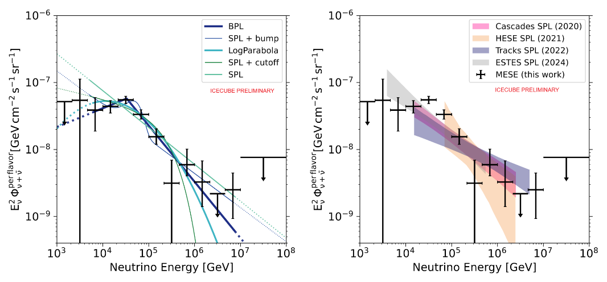
图注：在独立能量区间拟合得到的天体物理中微子通量（IceCube）。左：与本分析拟合的模型比较；实线表示数据对相应模型敏感的能段，点线表示进行拟合的范围。右：分段拟合与此前偏好单幂律的IceCube测量比较。阴影及MESE点的误差棒均表示68%置信区间。MESE为中能起始事件，ESTES为增强起始径迹选择，SPL和BPL分别为单幂律与折断幂律。图引自Balagopal V.等（2025）。
怎么看这张图：先区分实线的有效敏感能段与虚线的拟合范围，再比较低能段。折断谱偏好改变低能外推，不等于已经识别贡献该折断的天体种群。 展示弥散谱形与外推限制。
来源与置信度：arXiv HTML；source verified；https://arxiv.org/html/2609.26436v1/Definitions/segmented-fit.png
图16
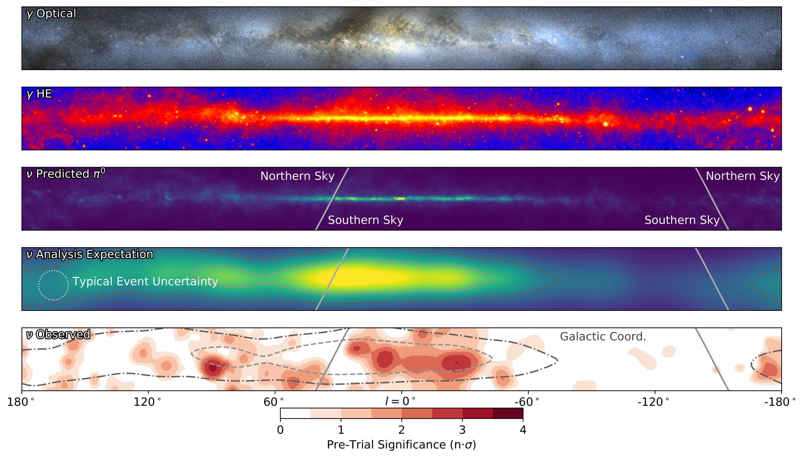
图注：光子与中微子中的银河面。A至E均为银道坐标，银心在中心，经度±180度、纬度±15度。A：部分被尘埃气体遮蔽的光学彩色图。B：Fermi-LAT十二年巡天大于1 GeV的积分伽马通量。C：与Fermi-LAT弥散伽马观测匹配的π零模型所推得的中微子发射模板。D：C加入级联事件探测灵敏度及典型7度角误差后的模板，白色虚线圆示意角尺度，轮廓包围预计信号的20%和50%。E：级联样本全天点源扫描的试验前显著性，轮廓与D相同。C—E灰线表示IceCube处南北天空分界。图引自Abbasi等（2023）。
怎么看这张图：关键是C到D：天空模型经过灵敏度和角分辨卷积才成为待比较模板。E是逐点局部显著性，整幅图的银河面发现显著性需另作全局检验。 把伽马模板、仪器响应及中微子证据连接起来。
来源与置信度：arXiv HTML；source verified；https://arxiv.org/html/2609.26436v1/Definitions/Galactic-Plane-Science.jpg
图24
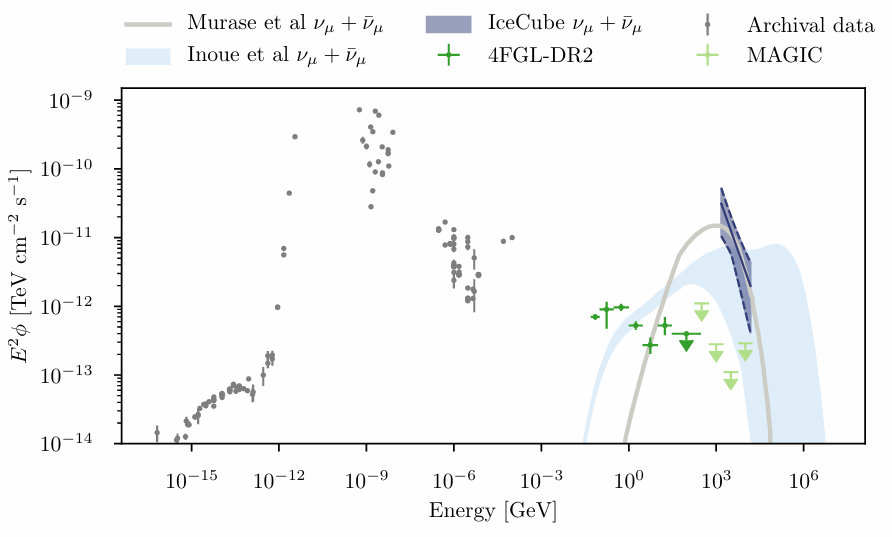
图注：NGC 1068的谱能量分布。灰点为公开多频资料，深绿和浅绿误差棒分别为Fermi-LAT与MAGIC伽马观测。深蓝实线为最佳拟合中微子谱，蓝带包含95%置信水平与数据相容的幂律谱，仅在约束良好的1.5—15 TeV范围显示。浅蓝阴影和灰线分别为Inoue等（2020）与Murase等（2020）的AGN核区中微子模型。图引自Bellenghi等（2023）。
怎么看这张图：比较蓝色中微子带和伽马资料时保留1.5—15 TeV的测量范围及不同信使定义。盘冕曲线说明可行性，不是从这张图唯一测得辐射区。 NGC 1068多信使吸收与核区模型的核心证据。
来源与置信度：arXiv HTML；source verified；https://arxiv.org/html/2609.26436v1/Definitions/NGC-MAGIC.png
图32
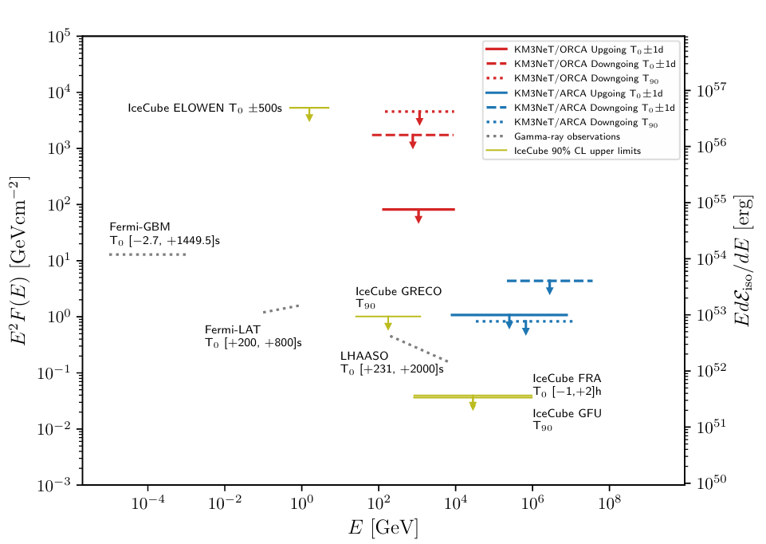
图注：GRB 221009A的能量加权、时间积分单味中微子通量E²F(E)的90%置信上限，来自KM3NeT/ORCA、KM3NeT/ARCA和IceCube。仅显示T₀±1天与T₉₀搜索，假定中微子谱指数γ=2；T₉₀覆盖90%的电磁信号。为便于比较也画出Fermi-GBM、Fermi-LAT和LHAASO伽马观测，右轴为微分各向同性等效能量。图引自Aiello等（2024），IceCube资料见Abbasi等（2023）。
怎么看这张图：这是时间积分的单味中微子上限，不是稳态流量。不同时间窗的限制应各自对应模型的发射历时，旁边伽马资料不能直接当成同一粒子分量。 高能GRB联合观测的可解释上限。
来源与置信度：arXiv HTML；source verified；https://arxiv.org/html/2609.26436v1/Definitions/GRB221009A.png
强相关工作
银河面原始探测来自IceCube的《Observation of high-energy neutrinos from the Galactic plane》（https://doi.org/10.1126/science.adc9818），三味组成可追至2026年原始结果（https://doi.org/10.1103/vntd-m133）。本文提供跨主题背景，但若要复现显著性或把通量用作理论约束，应回到这些分析的事件选择和系统误差定义。
NGC 1068的核区解释可对照Inoue等盘冕模型（https://doi.org/10.3847/2041-8213/ab7661）；TXS历史暂现原文（https://doi.org/10.1126/science.aat2890）应与更新重建会议论文（https://doi.org/10.22323/1.444.1465）并读。Fermi-2LAC耀变体贡献限制（https://doi.org/10.3847/1538-4357/835/1/45）对谱指数和选源方式有条件，不是所有耀变体永远只能贡献27%的普遍定律。
同一事件 / 同类源线索：
相似工作：
基础理论 / 方法工作：
相反观点 / 张力线索：
10. KPolaris: GPU-accelerated Polarized Radiative Transfer in General Relativity
- 来源：arXiv / astro-ph.HE
- 链接：https://arxiv.org/abs/2609.26298
- 作者：Zelin Zhang, Bin Chen
- 评分：novelty 7/10，importance 8/10，relevance 8/10，final 8.70/10
- 推荐理由：GPU偏振GR辐射转移支持快/慢光及沿射线诊断，适合吸积辐射解释与数值验证。
中文题目：KPolaris：在GPU上追踪黑洞偏振图像及其传播来源
做了什么：KPolaris是基于Kokkos的开源广义相对论偏振辐射输运程序，在解析等离子体或GRMHD快照中追踪零测地线、平行移动偏振基底，并计算同步发射、吸收、法拉第旋转与转换。它同时支持固定单快照的快光近似，以及沿光子路径读取不同时刻等离子体的慢光计算；通过双程重算轨迹和有限快照驻留窗口控制显存。除四个Stokes图像，还输出发射区域贡献、沿射线过程和局部参数敏感度。
与匹配输入的ipole比较时，快光各Stokes最大归一化均方差约1.10×10⁻⁴，慢光最大约7.60×10⁻⁴。另用较宽松且单独评估误差的性能设置，工作站GPU生成256²快光图像约2.13—5.09秒，慢光16帧批处理平均约2.47秒/帧、峰值显存15.1 GiB。严格比较和速度数字不是同一积分设置。选定射线的演示还表明，光强基本积累完成后的法拉第转换可将圆偏振V/I从−2.0%改变到−12.8%，说明观测偏振未必形成于主要发光区。
为什么重要：黑洞图像是发射、吸收、磁化传播和引力几何共同作用的结果。更快出图有助于扫描频率、时间和电子模型，而诊断输出帮助追踪不同结构为何出现在图像中。本文进展是将可控显存的慢光计算与过程分解结合，并以独立程序比较和收敛测试检查数值准确性；它没有提供新的EHT观测参数测量，也不替代等离子体模型的物理不确定性。
理论 / 观测 / 仪器方法价值：可借鉴的验证路线包括统一偏振基底和辐射系数后逐像素比较、分别检查几何与输运收敛、把端到端耗时与积分耗时分开，以及在报告速度时附上实际误差。区域贡献保留整条射线的吸收和法拉第作用，仅限制源项，从而使区域结果可线性相加；这一设计比直接切掉其余介质更适合解释最终光来自哪里。
为什么应该关注：对高能辐射与磁场研究，程序展示了产生区和传播作用区的区分：圆偏振可能主要由下游线偏振转换而来。它的参数导数可定位哪一类电子或磁场处方影响图像，但只是固定流体动力学背景的小扰动。后续应用应关注电子温度、非热分布、快照时间分辨率与观测算子，而不能只凭GPU速度扩大模型扫描后就声称消除了物理退化。
展开详细解读：文章讲解、背景、理论、重点章节、图表与相关工作
文章详细讲解
科学问题：GRMHD模拟给出密度、速度和磁场，却不直接给出远处观察者看到的偏振。光沿弯曲时空传播时有频移和基底旋转，沿途又持续吸收及转换偏振；时间变化源还要求使用光子真正经过各位置时的等离子体。如何高效计算这些效应，并区分图像来自发射还是传播，是本文处理的问题。
作者怎么做：从相机反向追踪每像素射线到边界，保留端点和偏振基底，再正向重算几何并积分输运，避免储存每条完整轨迹。像素之间并行，共享同一轨迹的不同频率保留独立Stokes量。慢光沿坐标时间在相邻两快照间线性插值，有限窗口流式装入GPU；选定少数射线才记录完整历史。
关键结果：解析常系数测试、步长收敛与ipole独立比较均支持所测场景中的实现准确性。速度相对单线程CPU约快10—182倍，但相对全线程CPU优势更小，服务器AthenaK例子中CPU还快于GPU。更重要的科学示例是法拉第转换在主要光强产生之后仍重分配线、圆偏振，因此发射率加权地图不能直接等同于圆偏振生成位置。
局限和下一步：积分收敛不等于GRMHD网格、时间采样或电子热力学收敛。参数敏感度固定几何、速度、磁场方向和发射掩膜，不包含流体对扰动的动力学回应。软件支持多种分布与输入，但辐射系数拟合只应在其已发表适用域使用；这是一项数值工具与基准研究，尚未作具体源的观测反演。
关键结果是怎么做出来的
先把几何和输运分别验算。测地线及平行移动用四阶Runge–Kutta并通过步长加倍控制局部误差，固定步长细化呈四阶；偏振输运以法拉第半步、发射吸收全步、法拉第半步对称分裂，组合呈二阶。各部分解析子步可处理刚性项，但不使整体误差自动消失，仍需限制吸收深度、法拉第深度和系数空间变化。
独立比较固定物理输入和输出约定。256²图像在230、345 GHz下比较解析RIAF、KHARMA和AthenaK快光输入以及KHARMA慢光序列，不进行图像配准、拟合归一化或平滑。快光I的NMSE都小于2×10⁻⁵，所有快光分量最大1.10×10⁻⁴；慢光最大7.60×10⁻⁴。该量是相对L2误差的平方，不能直接把7.60×10⁻⁴称作0.076%的图像幅度误差。
慢光验证进一步报告总I通量相对差约0.113%和0.126%，净线偏振份额最大差0.0787个百分点。它与逐像素NMSE是不同指标：有符号Q、U可能在整图求和时抵消，图像差和净偏振差不能互换。验证慢光快照约0.1M间隔，覆盖约260M的延迟时间范围，数据时间窗必须覆盖整条射线。
性能测试则使用单独设置。工作站RTX 5090的完整快光图像耗时2.13、3.19、5.09秒，分别对应RIAF、KHARMA、AthenaK。该设置相对更精细自身结果的最大分量NMSE为1.53×10⁻⁷、1.66×10⁻³、1.79×10⁻³。最后两个约对应4%的相对L2量级，远非最严格ipole比较的同一误差；不能拼接两种测试数字。
慢光16帧使用0.5M快照和成像间隔，约82 GB本地输入，计时含启动、读入、上传、积分与输出。5.4 GiB显存配置共54秒，15.1 GiB流水上传配置39.45秒，最终数组逐比特相同；增到接近32 GiB未进一步改善。平均每帧时间由批次总耗时相除，不是任意单帧交互延迟，且快光计时使用暖文件缓存而慢光运行前清缓存。
最后检查物理诊断闭合。27组区域贡献数组的逐像素相加残差小于1.62×10⁻¹³，选定射线独立回放也与端点Stokes一致。86 GHz、85°视角示例在后段去掉转换项后V/I由完整−12.8%变成−2.0%，总偏振约40.8—40.9%几乎不变。这证明该模型该射线中偏振类型可被传播重分配，不代表全图或任意黑洞都有同样比例。
展开背景、理论、公式、模型和章节导读
背景知识
黑洞偏振图像需要把动力学和辐射连接。GRMHD通常演化总流体量，而毫米发射高度依赖电子温度及能量分布；电子与质子的热平衡未必成立。因此即使流体结构给定，仍需电子处方才能生成图像，程序加速无法消除这一输入层的不确定性。
Stokes I是总强度，Q、U编码线偏振方向，V编码圆偏振及其手性约定。Q、U依赖天空坐标基底，两个程序即使物理相同也可能因基底不同而显示相反符号；比较前须统一约定。净偏振还需先把各像素Stokes相加，不能平均像素偏振度。
引力透镜、频移和平行移动来自时空几何；法拉第旋转与转换来自磁化介质。旋转主要在Q、U间交换，转换可以在线偏振和圆偏振之间转移。只用沿途旋转系数积分当作观测电矢量位置角变化，忽略了连续发射、吸收和转换，通常不成立。
快光把整个等离子体冻结在一个时刻，适合变化相对光程慢或作为简化近似；慢光沿射线访问不同时间。一个像素可以采样很宽的过去时间范围，故慢光既有积分成本，也有快照读写与显存管理成本。它不是把单快照渲染成更多帧就自动实现。
基础理论 / 方法脉络
协变输运利用Iν/ν³等不变量，把局部频移与发射吸收系数联系起来。相机反向找路径，实际辐射仍沿未来指向光子向观察者传播；本文两个计算遍历中波矢均保持未来指向，只改变仿射参数步长的符号。这个约定影响频率、偏振基底和端点回归检查。
输运矩阵包含吸收与法拉第耦合，深介质中直接显式步进可能不稳定。解析常系数更新解决每小步的刚性，而对称分裂控制不同算子不对易造成的误差。四阶几何积分与二阶辐射分裂并存，因此整图精度不能只按较高的四阶名称概括。
区域贡献和加权地图回答不同问题。发射率加权平均只看哪里提供源光子，不含后来介质削弱或改偏振；区域贡献只限制发射源项，同时保留整条路径传播矩阵，可回答这些种子光最后贡献多少Stokes。若把区域外的吸收也删掉，就变成不同物理实验，区域总和不再必然闭合。
敏感度导数是在固定流体场上改变某个辐射参数。密度归一化扰动同时让电子密度按f、磁场按平方根f变；温度扰动改最终无量纲电子温度，不是改Rhigh参数；磁场强度扰动保持方向。这些定义必须明确，否则同样叫温度或磁场导数会对应不同物理问题。
公式与推导
公式沿原文几何、协变输运和诊断逐步连接，采用$G=c=1$作几何单位，辐射系数仍需物理单位换算。
光线与偏振基底满足
$\lambda$为仿射参数，$e_A$为两个屏幕基矢。最后一式携带纯几何偏振旋转，使局部介质效应可在同一平行移动基底内求解。
局部频率由流体四速度决定：
负号对应本文$(-,+,+,+)$度规约定；分子分母比值包含多普勒及引力频移。多个观察频率可共用零测地线，但沿途辐射系数需按各自局部频率计算。
不变Stokes量与源项定义为
$\ell_\lambda=d\ell/d\lambda$将仿射步长换成流体静止系路径，吸收和法拉第系数也乘它；这一步保证几何单位和物理辐射单位一致。
输运方程为
$\mathbf K_A$含吸收，$\mathbf K_F$含偏振耦合；其非对角项使Q、U、V互相转换。仅追踪I无法重建这些传播历史。
数值更新采用
$\mathsf A$含发射及吸收，$\mathsf F$为法拉第解析更新。对称次序使总体为二阶，但系数在每步固定，仍需细化步长检验空间和时间变化。
图像误差定义为
每个Stokes分量用自己的参考归一化。平方根才是相对L2幅度差，例如$1.8\times10^{-3}$对应约4.2%，不是0.18%的幅度误差。
净线偏振为
它允许不同像素相消，因而与逐像素偏振度平均不同，也不能由I通量误差单独预测。
对区域k只限制源项：
最后等式要求区域完整分割、同一传播矩阵和零入射边界。它是线性输运的结果，解释区域分解为何可以通过高精度闭合检查。
对$q=\ln f$求导得到
导数同时包含发射变化与传播变化，不能只对发射率求导。本文用局部正负扰动更新并传播敏感度，再与整个解的中心差分比较。
中心差分检验为
把h减半检验参数步长误差，另把几何及辐射步长减半检验积分误差。两种细化对应不同误差来源；固定背景上的导数并不包含等离子体动力学重新平衡。
模型拟合 / 应用方法
本文拟合的是部分已发表辐射系数处方的应用，主体工作并无观测数据似然或源参数后验。GRMHD总内能按电子—质子温度比处方拆分，R(β)在低、高磁压比区间趋于Rlow与Rhigh；后处理电子和质子绝热指数取4/3、5/3，需与原模拟采用的流体绝热指数Γ分开。电子处方会改变图像，即使积分实现完全一致也不会消失。
准确性比较要求相同模型、频率、相机、像素、辐射系数及偏振约定。作者不用图像配准或自由通量归一化改善相似度，这使残差更直接。测试覆盖解析、球坐标和笛卡尔输入以及慢光，但不是所有可支持电子分布、所有高光深模型的穷尽验证。迭代容差不等于最终全局误差上限，应以实际细化和比较为准。
性能评估按同一双精度源码比较单线程、全部硬件线程和GPU，三次运行中位数作为耗时。服务器AthenaK全线程CPU约3.64秒，配对GPU4.42秒，说明加速并非无条件。慢光驻留窗口的两个配置逐比特相同验证了调度改变没有改数值结果，但它不证明更粗0.5M快照和0.1M验证序列在物理时间精度上等价。
参数导数测试中，减半积分上限使密度、温度、磁强响应相对L1变化约0.223%、0.114%、0.184%；固定射线采样下分过程导数与完整差分之和吻合更好。后一种代数一致性不应替代前一种积分误差。选射线关闭转换是有限修改，和小扰动导数不同，两者分别回答机制反事实和局部敏感度问题。
未来与EHT数据比较还需将图像变为干涉可见度，包含观测采样、噪声和散射等过程；本篇未做这些步骤。软件及Zenodo归档可用于复现，但本轮解读只核对论文与引用，没有安装运行或独立重做作者的GPU基准，因此不将作者报告的速度写成本机实测。
重点章节 / 结果段落怎么读
-
第II.1—II.3节先统一相机基底、波矢方向、局部频率和输运矩阵，再理解双程计算及分裂误差。
-
第IV节表1及图1核对独立程序比较口径；NMSE须取平方根才是相对L2幅度差。
-
第V节连同附录C读速度和显存，区分严格验证设置、性能设置、暖缓存及16帧平均时间。
-
第VI节图4追踪主要发光之后的偏振转换，再读附录E的有限关断实验，避免把选定射线当作全源测量。
-
附录D/E区分发射率加权图、完整传播的区域贡献与参数导数，检查闭合条件及固定背景假设。
关键图表与解读
图1
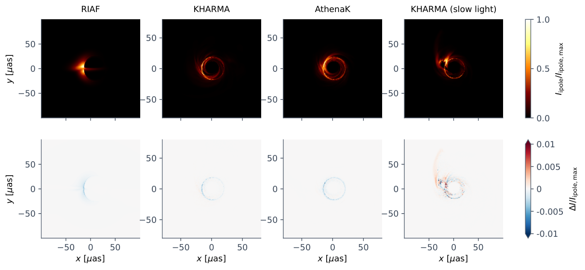
图注：256²像素、230 GHz下与ipole的强度图比较。四列依次为快光RIAF、KHARMA、AthenaK及自旋a=0.5的慢光KHARMA MAD测试。上排为每幅ipole强度图除以各自峰值，下排为有符号残差(\(I_KPolaris\)−I_ipole)/I_ipole,max，均使用线性色标。比较未进行图像配准、拟合归一化或平滑；两频率的逐Stokes NMSE见表1。
怎么看这张图：残差色标与图像归一化口径一致，但强度图不能代表所有偏振分量精度。这里使用严格代码比较设置，勿与数秒出图的宽松性能设置混为一谈。 独立程序比较的直接证据。
来源与置信度：arXiv HTML；source verified；https://arxiv.org/html/2609.26298v1/code_comparison.png
图4
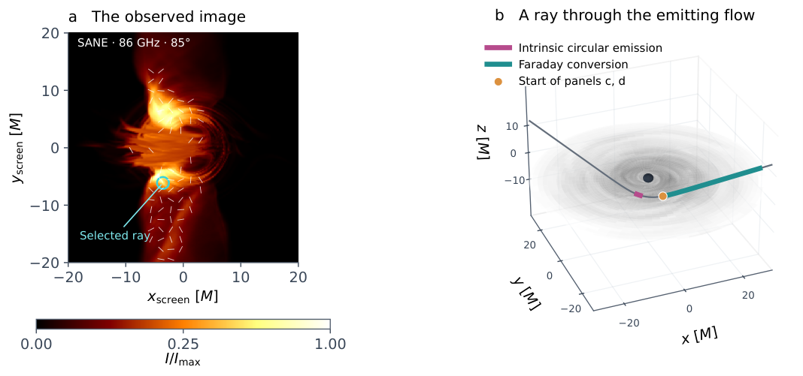
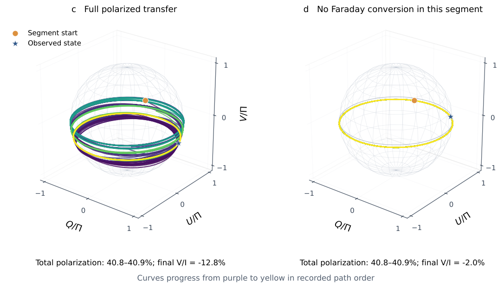
图注：86 GHz、视角85°的选定射线分析。(a) Stokes I图、电矢量位置角标记及所选像素。(b) 笛卡尔Kerr–Schild坐标中的测地线及背景密度切片；洋红和青绿区间按正文累计贡献准则标出本征圆偏振发射与法拉第转换，箭头朝向观察者，橙点为(c,d)所示后段起点。(c) 完整输运；(d) 相同入射Stokes向量但关闭该后段转换。庞加莱球显示平行移动基底中的(Q,U,V)/Π，Π为三偏振分量平方和的平方根。橙圆和蓝星分别为起止状态，沿射线颜色由紫变黄；下方列出总偏振Π/I和最终V/I。
怎么看这张图：关闭转换后最终V/I由−12.8%变为−2.0%，总偏振却约40.8—40.9%不变，说明后段传播可重分配偏振类型。彩色区间按绝对贡献的5%—95%定义，不能说包围90%的净圆偏振。 区分发射区与偏振转换区，展示诊断价值。
来源与置信度：arXiv HTML；source verified；https://arxiv.org/html/2609.26298v1/polarization_3d.png；https://arxiv.org/html/2609.26298v1/polarization_poincare.png
强相关工作
独立比较对象是Mościbrodzka与Gammie（2018）的ipole（https://doi.org/10.1093/mnras/stx3162）；双程GPU策略继承GPU加速ipole研究（https://doi.org/10.3847/1538-4365/acb6f9）。Prather等（2023）的EHT偏振输运代码比较（https://doi.org/10.3847/1538-4357/acc586）提供匹配输入和NMSE的验证背景。本文不是首次GPU偏振输运，而是整合可移植执行、流式慢光与诊断输出。
加权等离子体图与White（2022）的Blacklight（https://doi.org/10.3847/1538-4365/ac77ef）相关，参数响应与Motta等的可微Jipole（https://doi.org/10.3847/1538-4357/ae16a0）在目标上互补。KPolaris本篇定义的是固定流场的辐射响应，不能据此声称已完成端到端可微GRMHD或观测拟合。软件归档为https://doi.org/10.5281/zenodo.22879728，提供版本入口，本文解读未独立执行其性能测试。
同一事件 / 同类源线索：
相似工作：
基础理论 / 方法工作：
相反观点 / 张力线索：
（未提供）
11. Inelastic scattering effects on polarization predictions for cold and warm atmospheres in the X-rays
- 来源：arXiv / astro-ph.HE
- 链接：https://arxiv.org/abs/2609.26380
- 作者：J. Podgorný, L. Marra, M. Dovčiak, R. Taverna, R. W. Goosmann, M. Gupta, F. Marin, G. Matt
- 评分：novelty 7/10，importance 8/10，relevance 8/10，final 8.70/10
- 推荐理由：康普顿非弹性散射修正X射线偏振处方，直接影响IXPE吸积几何解释；需核验温度与能段。
中文题目：冷、暖康普顿散射如何改变吸积盘的X射线偏振基准
做了什么：许多吸积盘偏振模型使用钱德拉塞卡—索博列夫的弹性汤姆孙散射结果，把电子散射大气中的偏振视为主要由观看角度决定。本文用STOKES蒙特卡洛程序研究纯电子、均匀平行平板，分别让光从底部透射或从上方反射，显式处理电子静止系中的非弹性康普顿散射。电子温度不超过1 keV时，单次能量改变虽小，多次散射仍会改变每个观测能量箱中的散射历史，从而造成偏振随能量变化，某些暖电子情况还会翻转偏振方向。
偏离经典结果在10 keV以上尤其明显，部分基准在1—10 keV已经出现；但宽能段积分会被较多的软光子稀释，强偏振差异所在的硬尾也常非常暗。研究给出一种值得纳入系统误差评估的局部辐射机制，没有拟合某个真实吸积盘，也没有据此修正任何已测黑洞自旋。真实大气的垂直结构、吸收发射、磁场和广义相对论输运仍需结合。
为什么重要：偏振度随能量上升常被解释为不同辐射成分混合，但即使只有一个简单散射层，能量再分配也可能造成这种行为。本文把偏振变化追溯到观测能量对散射次数和几何历史的选择，指出“光谱改变看起来不大”不等于“偏振误差可以忽略”。这能帮助识别由过于简单的局部大气模型引入的系统偏差。
理论 / 观测 / 仪器方法价值：文章最有用的诊断是同时画能谱、带符号偏振与每个能量箱的平均散射次数。三者连接起来，才能判断是冷电子的降散射筛掉了多次散射光子，还是暖电子的升散射增加了高阶贡献。将能量分辨结果再按Stokes量积分到仪器能段，可以区分机制本身很强与观测实际可测之间的差别。
为什么应该关注：这项工作与IXPE吸积盘和盘冕解释直接相关，也与任何需要把偏振映射为几何的高能辐射模型相关。值得关注的不是将全部偏振上升改归康普顿反冲，而是检查拟合中局部电子温度、光子形成深度及入射谱是否满足弹性近似。若未来硬X偏振数据出现更大差异，还需同时评估硬尾光子数，不能只按偏振百分比排序科学收益。
展开详细解读：文章讲解、背景、理论、重点章节、图表与相关工作
文章详细讲解
科学问题：经典半无限电子散射大气假定每次散射不改变光子能量。X射线虽远低于电子静质量511 keV，单次反冲很小，但观测选择固定能量光子，而这些光子可能从别的能量经不同次数散射迁入。因此需要问的不是总散射截面是否近似汤姆孙，而是偏振在给定能量箱中是否仍由同一散射历史产生。
作者怎么做：构造无内部发射、无吸收、无谱线的被动均匀电子层，底部注入无偏振各向同性比强度，或从固定倾角照射上表面。每次散射先变换到随机热电子静止系，执行康普顿散射，再回实验室系，电子速度服从Maxwell–Jüttner分布。记录逃逸光子的能量、方向、Stokes量与散射次数，和经典弹性基准并列。
关键结果：电子比辐射冷时，较高能逃逸光子偏向较少散射的路径，几何平均较少，负号分支的偏振绝对值可增大。电子比种子辐射暖时，多阶升散射改变角分布，偏振可先减弱、过零再转为正号。两者都依赖入射谱、厚度和出射方向；在电子与黑体温度相近的基准中，频率再分配趋于平衡，经典结果保持得较好。
局限和下一步：平板中电子温度人为固定，光子不能通过真实吸收、发射或能量平衡改变大气结构。反射基准光深20也不是严格半无限极限，高阶散射尾仍受厚度影响。作者提出可能帮助解释4U 1630−47高偏振，却明确需要自洽非局域热平衡大气与相对论传播模拟；这是一项作者提出的待检验解释，不是完成的源模型。
关键结果是怎么做出来的
第一步以单次平均能量改变量确立冷、暖分支。非相对论条件下平均相对变化约为(4kTe−E)/(mec²)，E低于4kTe倾向升散射，高于它倾向降散射。但本文比较的是整段种子谱，所以不能用一个光子的阈值代替电子与辐射温度的整体差异。Kompaneets算子展示同温Planck场如何满足能量平衡。
第二步固定透射基准：图2a取电子散射光深4、出射角余弦0.5，种子黑体温度0.32、0.56、1 keV，电子温度0、0.32、1 keV。软能段偏振接近半无限弹性结果；较高能开始分离。低能平均散射次数约20是该厚度和注入几何的结果，不是所有光深4平板都严格必须为16或20。
第三步用散射次数解释冷分支。光子在冷电子上不断损失能量，高能箱保留下来的光子通常经历较少次散射，因此散射平面和角度未被充分平均。图2a中偏振绝对值增加伴随平均散射次数下降，建立了谱、路径选择与偏振之间的因果联系；并非简单声称反冲直接把每次散射的偏振放大。
第四步看暖分支和能段积分。升散射把原来低能光子搬到高能，和降散射进入的光子共同形成散射次数峰值，偏振会被稀释并在部分模型中改变符号。图2b比较光深1、4、10和2—8、6—8、10—35 keV。宽2—8 keV通常由软端主导而较接近经典值，窄高能段更敏感；暖光厚层约光深10时又可趋近经典值，不能把厚度越大偏离越大当通则。
第五步转到反射。图3采用光深20，比较两黑体与光子指数2的幂律照射；图3a为垂直入射、出射余弦0.525。幂律高能光子储备较多，使偏振强偏离出现得比陡黑体尾更高。接近垂直入射更易深入层内、累积散射，掠入射则可由少次散射本身的几何及能量变化造成偏离。
最后评估可观测性和边界。图中某些硬能段曲线因通量太低、蒙特卡洛噪声太高而省略；这不是机制在那里消失，而是该计算不能稳定给出预测。作者将强偏离描述为数个百分点至数十个百分点的范围，具体取决于基准。没有事件级观测似然、仪器灵敏度预测或源参数后验，不能用这些曲线直接宣布某类自旋测量已被推翻。
展开背景、理论、公式、模型和章节导读
背景知识
汤姆孙散射是低能光子在电子上的近弹性散射，散射几何会使无偏振光变成线偏振。半无限平行平板的经典解把角度输运和多次散射合在一起，给出随观看角度变化的偏振基准。它的重要性来自可作为局部吸积盘大气近似，而不是任何能段、任何温度层都必须服从它。
康普顿散射同时改变能量与方向。冷电子从光子获得反冲能量，热电子平均可把热运动能量给光子。即使每次变化小，只要光子经历许多次散射，或位于陡峭光谱尾部，一个能量箱里光子的来源就可能显著变化，偏振也随之改变。
透射和反射的路径不同。底部注入的透射光子需要穿过整层，厚层中散射次数常按光深平方增长；上方入射的反射光子可能在浅层就返回，也可能深入后再逃逸。相同电子光深不意味着同样的路径分布，所以不能把透射的平均散射次数公式不加区别地用于反射。
天体吸积盘更复杂：温度和密度随高度、半径变化，吸收和真实发射决定光子从哪里形成，强引力还将不同半径的谱与偏振转到观察者系。本文刻意省去这些复杂性以隔离非弹性效应；理解它有助于改进模型，但并不能让被动平板自动成为真实盘的完整替代。
基础理论 / 方法脉络
频率输运的Kompaneets近似要求电子热能和光子能量均远小于电子静能，并把多次小能量变化展开为能量空间扩散。它可解释平衡和量级，但本文的实际偏振计算是逐事件蒙特卡洛，不是直接解一个只有能量没有角度的Kompaneets方程。后者单独不能给出完整Stokes输运。
光深度量沿程散射机会，平均次数还依赖注入和逃逸几何。带符号的y估计判断在特定能量是净升还是净降，常用正的有效y则描述热散射的累积强弱；两者不能混成同一个严格的偏振控制参数。即使有效y小，陡谱尾的路径筛选也可对偏振产生明显影响。
轴对称且对方位角平均后U为零，作者以Q/I的正负保留方向。正值代表电矢量平行于投影的平板法向，负值为垂直；所谓负偏振增强是绝对值增加，不是偏振度变成不物理的负概率。穿零对应正交方向转换，但在零附近角度本身不稳定。
比较仪器能段时必须积分I、Q，再求其比值。直接算各能量偏振百分比的平均会高估暗硬尾的贡献。真实分析还应包含有效面积和能量重分布；本文能段积分是在模型层面展示趋势，并未声称已经给出某台仪器的完整响应折叠检测显著性。
公式与推导
推导沿原文式(1)—(7)展开，再补一条Stokes能段积分关系，说明为什么光谱与偏振的敏感程度不同。
单次非相对论平均变化为
$E$和$kT_e$都用keV时，分母约511 keV；热运动提供正项，反冲提供负项。小变化不意味着能忽略，因为下一步还需乘散射历史。
Kompaneets方程写为
$n$为无量纲光子占据数，$n_e$为电子数密度。方括号分别是热扩散、反冲和受激散射；该式解释频率重分配，尚不含平板角输运与偏振。
Planck种子场满足
把导数代入上一式，可将三项相加的平衡条件显式写出，而不只比较单个代表光子的能量。
代入得到
同温时能量空间通量为零。这是均匀辐射场的平衡说明；有限平板有逃逸和角度结构，不能把它直接提升为任意真实大气偏振完全等同经典解的定理。
对有限厚层作量级估计，
光薄时一次散射概率近似正比光深，光厚扩散路径使次数约按平方增长。该式为几何相关的数量级插值，反射或特定条件逃逸光子的平均次数应从实际模拟统计。
真实大气常以形成层温度和光深构造正量
星号指该频率的形成层。它没有显式反冲负项，不能代替前面的带符号$y(E)$判断升降方向；论文用它说明形成深度和温差也会影响偏振，而非提出单参数普适拟合式。
用作者的方向约定，
$p_s>0$与$p_s<0$代表正交偏振方向，通常报告的偏振度是$|p_s|$。冷分支负值绝对值变大与暖分支过零再变正，必须连同符号解释。
最后在能段内，
这是教学补充的Stokes可加性。暗硬尾即使百分比很大，权重仍小；若穿越方向翻转还会抵消。观测应用应进一步加入仪器响应，而本文图2b、3b首先展示局部模型能段积分的差异。
模型拟合 / 应用方法
本文没有用数据拟合黑洞自旋、盘倾角或温度，而是对控制变量进行数值实验。固定平板、纯电子和无偏振注入，改变种子谱、电子温度、光深、入射及出射角；比较经典解是为了验证弹性极限并隔离偏差来源，不是以χ²选择某一个真实源模型。
STOKES版本2.36b每次散射作洛伦兹变换和静止系康普顿处理，电子采用Maxwell–Jüttner分布。正文说明实现曾与其他方法交叉验证，但本短文未列出对每条曲线的完整收敛表或蒙特卡洛置信带。解释图中细小差异时不应虚构数值精度；作者对低通量高噪声曲线直接省略，反映了实际计算边界。
透射网格与反射网格并不完全相同：前者重点改变光深1、4、10，后者主要固定20并改变照射角。作者测试更大反射光深仍影响高阶散射和极高能尾，因此“20足够代表光厚”不等于所有量已达到无限厚收敛。对强偏离能段应同时看通量与散射次数，避免将少量光子数值噪声当作模式转换。
应用到4U 1630−47等源时，需先计算垂直温度、密度和吸收发射结构，再输出局部能量、角度分辨的Stokes谱，经相对论传播汇总到观察者并折叠响应。自旋、色修正、形成深度和观看角会存在退化；当前文章没有给出这些参数的联合后验，也未定量证明康普顿反冲优于多分量混合解释。
重点章节 / 结果段落怎么读
-
第II节式(1)—(5)先明确小能量变化与同温平衡的关系，区分单个光子的4kTe阈值和整个种子谱温度。
-
第III节及图1检查注入、逃逸和偏振正负约定，确定哪些真实大气过程被排除。
-
第IV.1节图2a沿谱—偏振—次数三排阅读冷暖分支，再用图2b检查光深和宽能段积分。
-
第IV.2节图3比较黑体与幂律反射，追踪垂直入射如何改变路径长度，不照搬透射规律。
-
第V节将机制联系到真实盘模型，注意作者对4U 1630−47只是提出解释可能性，尚需自洽大气检验。
关键图表与解读
图2
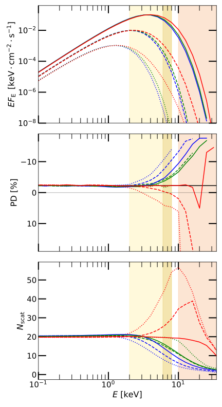
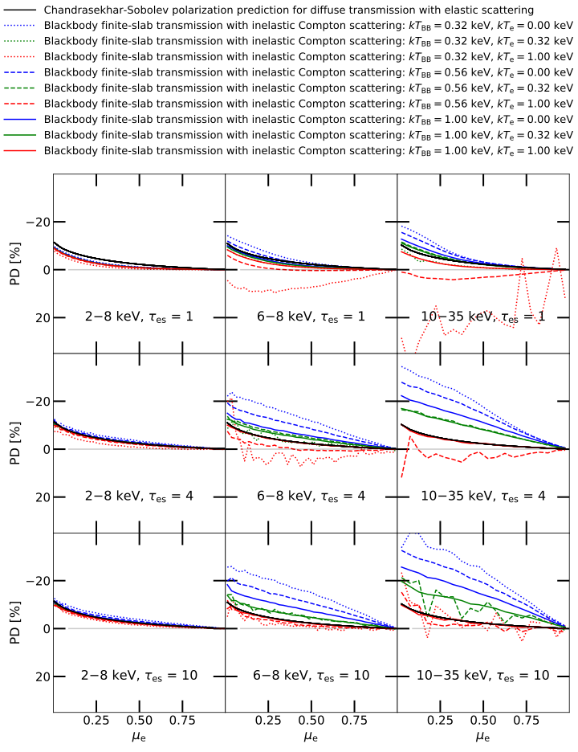
图注：半无限电子散射大气的经典透射偏振（黑实线）与有限光深平板非弹性康普顿计算的差别，均对方位角积分。点线、虚线、实线分别表示种子黑体温度0.32、0.56、1 keV；蓝、绿、红分别为电子温度0、0.32、1 keV。左侧(a)在出射角余弦0.5、电子散射光深4时，从上到下为能谱、偏振和平均散射次数随X射线能量的变化。右侧(b)从左到右为2—8、6—8、10—35 keV积分偏振对出射角余弦的依赖，从上到下光深为1、4、10；能段在(a)中以阴影标记。部分曲线因通量低、数值噪声大而省略。
怎么看这张图：把左侧三排连读，确认冷分支负偏振绝对值增大时高能箱平均散射次数在下降。右侧宽能段由软光子主导，不能把暗硬尾的偏振峰值直接当作IXPE整体可测值。正负号表示正交方向。 完整显示核心机制、光深与能段积分效应。
来源与置信度：arXiv HTML；source verified；https://arxiv.org/html/2609.26380v1/Transmission_E_dep.svg；https://arxiv.org/html/2609.26380v1/Transmission_mue_dep.svg
强相关工作
经典基准来自Chandrasekhar《Radiative Transfer》第68、70节与Sobolev的电子散射大气结果；Kompaneets（1957）提供能量空间输运基础。Hubeny等（2001）的非局域热平衡盘模型（https://doi.org/10.1086/322344）已把康普顿与真实不透明度结合，本文进一步集中展示偏振如何响应能量相关散射历史。这里按文献关系核对，并不声称本轮重算了这些大气模型。
直接相关的反射研究是Podgorný等（2026）《X-ray polarization of reflected thermal emission》（https://doi.org/10.1051/0004-6361/202556686），加入更具体的反射物理；观测动机包括Ratheesh等（2024）的4U 1630−47高偏振结果（https://doi.org/10.3847/1538-4357/ad226e）。本文新增的是控制变量下的冷暖非弹性机制，而非新的观测。它与多分量混合、盘风或相对论返回辐射可能共同起作用，尚无事件级模型比较来裁决谁占主导。
同一事件 / 同类源线索：
相似工作：
基础理论 / 方法工作：
相反观点 / 张力线索：
（未提供）
12. Dark-matter relay for ultra-high-energy cosmic rays
- 来源：arXiv / astro-ph.HE
- 链接：https://arxiv.org/abs/2609.26611
- 作者：Mikhail Sekretov
- 评分：novelty 8/10，importance 7/10，relevance 8/10，final 8.65/10
- 推荐理由：暗物质接力提出远方耀变体与超高能宇宙线传播机制；属假说，需核验散射截面和外部约束。
中文题目：暗物质为超高能宇宙线接力：可行性估算与尚未闭合的通量链
做了什么：论文提出两次碰撞的超高能宇宙线传播方案：源附近的高能核子先把动量交给暗物质粒子，中性暗物质跨越远距离后，再在观察者附近把能量交给重子。作者以约25 MeV的狄拉克暗物质和暗光子相互作用为例，估算高能截面可达10⁻²⁵—10⁻²⁴ cm²，并对理想星系暗晕及银河气体柱积分。基准源端转换约为0.2，银河太阳附近垂直气体层的再转换约5×10⁻⁵，经过更密的银盘内侧则可达约0.01。
这是一项机制和数量级研究，并未拟合宇宙线能谱、方向样本或源功率。第二次碰撞效率远小于第一次，且银河气体会引入显著各向异性，作者承认与用作动机的HiRes相关结果并不理想。把末端碰撞移到宇宙网丝状体可能改变这一问题，但详细密度剖面和事件率尚未计算；截面计算还涉及外推至极小Bjorken x的部分子分布，因此不能把模型交点理解成暗物质质量测量。
为什么重要：超高能带电粒子的能损和磁偏转使遥远源的窄角关联难以直接解释，中性中继粒子在概念上能把远距离传播与本地空气簇射粒子身份分开。本文给出了把这个设想写成气体柱密度与相互作用截面条件的具体例子。科学价值在于暴露所需效率和环境条件，尚不构成异常关联、新粒子或特定源的观测证据。
理论 / 观测 / 仪器方法价值：可复用的方法是先用靶柱密度算所需截面，再用具体粒子模型检查能量依赖，最后将源端与观察者端两次转换分别计算。这比只说暗物质中性、能远行更可检验。同时应补上能量与角度转移核、传播存活概率和探测曝光；本文没有完成这些环节，正是评估所谓可观测性的主要缺口。
为什么应该关注：对超高能宇宙线和多信使研究，末端气体分布意味着特定天空形态，而源端能量预算和碰撞产物还可能产生伴随信号。当前最值得核查的是完整能谱与事件率能否在源功率、角偏转及独立限制下成立，尤其不能把暗晕中20%的首步散射比例直接称为到地球的接力效率。本文作者将原始想法归于S. Troitsky，应保留归属。
展开详细解读：文章讲解、背景、理论、重点章节、图表与相关工作
文章详细讲解
科学问题：论文以部分HiRes和Telescope Array宇宙线与远处BL Lac方向相关的报道为动机。若真有窄角远距关联，带电核子要同时面对背景辐射能损与磁偏转，因此作者寻找中性、稳定的能量载体。这里相关性报道是模型动机，不是本文重新做统计后的已确认总体结论。
作者怎么做：先用平均自由程要求估算不同暗物质密度和区域尺度下需要的截面，再用Burkert暗晕计算从中心出发的源端散射柱。观察者端分别考虑太阳附近气体盘、沿银河中心方向的气体柱和宇宙网丝状体。最后建立狄拉克暗物质通过暗光子与夸克相互作用的模型，以深度非弹性散射及部分子分布估算超高能截面。
关键结果：25 MeV质量、10⁻²⁵ cm²截面的例子给出源端柱积分约0.2。太阳附近垂直100 pc气体层再转换仅约5×10⁻⁵，而沿银盘内侧约0.01，显示环境强烈决定效率与各向异性。模型截面与所需截面曲线在约25 MeV附近相交，另有约10 MeV、较大结构尺度的示意选择；这些是固定耦合和环境后的条件交点。
局限和下一步：论文没有把两步碰撞的能量损失和角分布合成为最终宇宙线谱，也没有将源光度、磁场偏转、源种群和曝光合入事件率。极小x的外推不确定性未给成参数包络，银河末端方案本身的方向分布还与动机数据有张力。丝状体替代被作者认为有希望，但详细计算仍未完成。
关键结果是怎么做出来的
先从环境需求出发。表1采用核区0.1 kpc、840 GeV/cm³，普通星系10 kpc、0.3 GeV/cm³和星系团1000 kpc、10⁻³ GeV/cm³三个均匀尺度。图1按平均自由程等于区域大小得到所需截面随暗物质质量线性增加。这些密度并不是针对每一个BL Lac宿主测量，核区数值还借用了银河估计，因而只是代表性尺度。
随后换成完整暗晕柱。作者设半径200 kpc、质量约10¹²太阳质量、尺度半径8 kpc的Burkert晕，归一化密度后从中心向外积分。所得0.2严格说是光薄近似中的碰撞光深；将其称为概率在数量级上可用，但若靠增大截面或中心密度让它接近或超过1，就必须使用存活概率而不能线性外推。
观察者端改用重子作为靶，靶粒子质量变为质子质量。气体面密度归一化71.1太阳质量/pc²、径向尺度4.8 kpc、垂直尺度130 pc，太阳半径8.15 kpc。式(8)只从0积分到100 pc，是选定的单侧路径；式(9)沿盘中面从银河中心到太阳。不同路径差约两百倍，说明不能把较高效率作为全天统一效率。
把两步粗略相乘就能看到尚缺的预算。固定同一截面且暂忽略能量损失时，0.2乘5×10⁻⁵只有约10⁻⁵，沿高气体柱例子也只有约2×10⁻³。这里是帮助理解的教学数量级，不是作者给出的响应折叠预测；加入能量转移、方向接受度及传播后，能落入目标能段与角窗口的比例还需要重算。
粒子模型固定暗物质耦合0.1、动能混合10⁻⁵、暗光子质量为暗物质三倍。高能计算先用CT14lo部分子分布，但x可到10⁻¹³，超出该组最低10⁻⁹；作者在质子能量约10⁶ GeV以上采用Froissart界饱和形式的对数外推，并平滑连接。图2所示高能截面增长因而包含外推假设，不能只看低能曲线符合一条限制就认为所有高能理论误差已受控。
丝状体方案取气体数密度约10⁻⁴ cm⁻³、长度30—100 Mpc，要求截面量级约10⁻²³ cm²；另讨论两步都在丝状体内、约10 MeV质量的情形。作者明确没有完成详细密度剖面计算。该方案可能减弱银河盘主导的形态，但本文未给出全天概率图、最终谱或对方向样本的新显著性检验。
展开背景、理论、公式、模型和章节导读
背景知识
超高能宇宙线通常通过空气簇射被探测，探测器记录的是到达地球附近的粒子及其引发的级联。若远处源发出的粒子在途中转换身份，簇射的普通强子特征并不直接证明它从源一路以带电强子传播。中继机制正利用这一逻辑空间，但每次身份转换必须付出有限概率和能量转移代价。
远距传播困难来自不同过程：核子与宇宙背景光的相互作用改变能量，重核还会碎裂；带电粒子受磁场偏转，失去精确指向性。中性暗物质在所设模型中可避免普通电磁偏转，但稳定中性并不自动保证透明，需要核查它沿途与暗物质、气体及其他背景的作用。
受宇宙线加速的暗物质并非新的暗物质总类，而是原本低速粒子被碰撞赋予高动能的状态。碰撞总截面衡量发生事件的机会，不直接衡量有多少能量进入暗物质、方向是否仍对准地球，或再次碰撞后是否留下足够高能的可观测核子。区别总截面与转移核是这类机制的基本要求。
深度非弹性散射把高能质子视为夸克和胶子组成的系统，Bjorken x表示所涉部分子携带的动量份额。极高能碰撞可探及很小x，而加速器数据未必覆盖它。外推可提供探索性预测，但饱和行为、低动量转移区域以及不同外推方案都可能影响截面，需与“已有实验直接测到该截面”分开。
基础理论 / 方法脉络
靶的体密度乘路径长度给出柱密度，截面乘靶数柱密度得到无量纲光深。暗物质靶的数密度等于质量密度除以粒子质量，因此固定质量密度时更轻粒子提供更多靶。图1的正斜率就来自让光深保持同一数值，而不是来自某种相互作用动力学。
具体模型的截面随质量变化则有另一来源：作者同时令暗光子质量为暗物质质量三倍，介质传播子的分母也随质量改变。模型曲线下降与需求曲线上升可产生交点，但固定质量比、耦合和环境后得到的交点不等于数据测出的狭窄置信区间。改变这些输入会移动可行区域。
二步过程需要源端和末端共同成功，且中间粒子必须存活并保持方向。两个总概率相乘仅是最简标度，真实计算要对第一步暗物质能谱、沿途能损和第二步能量转移积分。末端发生得越远，产出的带电粒子又会重新面对普通宇宙线传播问题，因此“接近观察者”也有定量含义。
末端气体柱决定天图是一个可检验特征。沿盘的高柱密度提高效率，却同时增强方向结构；把碰撞移到丝状体改变天图，也改变必要截面、路径长度和传播限制。这不是可随意替换而保持所有其他数值的修补，需重新完成同一套概率与能谱核算。
公式与推导
以下以原文式(1)—(14)的关键环节串起数量级条件，并明确两条教学补充：有限光深概率与二步效率。
从平均自由程出发，
$\rho_\chi/m_\chi$为靶数密度；用一致质量或能量单位即可消去GeV。固定区域大小和质量密度时，所需截面正比质量，这解释图1斜线。
非均匀环境的光深与真实至少一次碰撞概率为
第二式是教学补充的泊松存活关系。原文将第一式作为光薄概率；$\tau=0.2$时精确值约0.18，量级接近，但大光深时不能继续线性增长。
源端采用
$R=200$ kpc、$r_b=8$ kpc、$M\sim10^{12}M_\odot$确定归一化，再代回柱积分。体质量积分有$r^2$，沿中心射线的柱积分没有；两者不可混淆。
末端银河气体为
$\Sigma_g$为面密度归一化，$R_g,z_g$为径向和垂直尺度。此处靶是重子，转换数柱时要除$m_p$而非$m_\chi$。
对论文选定单侧垂直路径，
利用$\int\operatorname{sech}^2(z/z_g)dz=z_g\tanh(z/z_g)$，可看清光深依赖气体柱而非单独局部密度。这里$h\simeq100$ pc，不代表任意银纬的整条视线。
沿盘内侧则为
路径长度和高密度区提高机会，也引入方向性。把这一较高值用于整个天空会丢失作者自己指出的各向异性困难。
最简二步标度可写成
这只是教学占位，尚未包括能段与角窗口接受度。取源端0.2、末端$5\times10^{-5}$且存活为1，约得$10^{-5}$，不能将首步0.2称为完整效率。
具体作用拉格朗日量为
作者固定$g_\chi=0.1$、$\epsilon=10^{-5}$和$m_{A'}=3m_\chi$。这些是模型输入，25 MeV附近交点是在此输入下得到，不是自由全参数拟合。
深度非弹性计算中的运动学联系是
$T_\chi$为出射暗物质动能，$Q^2$为正的类空动量转移平方。截面由部分子分布$f_q(x,Q^2)$与散射矩阵元积分，传播子带$(Q^2+m_{A'}^2)^{-2}$。由于积分触及$x\sim10^{-13}$，超出所用常规表格，外推形状和相应有效区间是最终截面预测的一部分，而不是可忽略的数值实现细节。
模型拟合 / 应用方法
本文是基准估算而非数据拟合，没有对暗物质质量、耦合、源光度或宿主密度建立观测似然。源端借用银河式暗晕参数，末端用解析气体盘；这些输入在模型中固定，不应附会成由宇宙线数据反演的后验。图2质量交点只筛选一个指定模型下的数量级区域。
数值积分对低能使用CT14lo、较高能改用Froissart界参数化并平滑连接。正文未给出不同极小x外推、匹配位置和动量转移下限导致的系统误差带，因而高能截面增长的稳健范围需要另外评估。尤其总截面在低Q²权重较强时，深度非弹性近似适用范围应单独核查；这是本解读指出的检验需求，不声称已证明作者计算错误。
低能约束比较展示NA64相关限制与所选混合参数，支持作者构造探索性例子。它没有构成覆盖所有宇宙学、天体物理和散射实验的全局约束扫描，也未计算观测者端高能暗物质碰撞的完整出射核子分布。源端与末端使用同一截面量级，仅够完成当前数量级演示。
要检验相关天区的实际事件数，还需把源谱与源功率输入两次微分转移核，沿途传播后折叠探测曝光，再对能量和角窗口作统计比较。银河方案应同时预测气体柱各向异性，丝状体方案应使用实际局部结构。这些工作本篇未完成，故“可观测”应读为作者的可行性主张，而不是已有灵敏度或显著性结果。
重点章节 / 结果段落怎么读
-
第II节先读表1和图1，分清所需截面的柱密度估算与具体粒子模型截面。
-
第II节式(2)—(5)检查Burkert晕归一化和中心出发路径，理解0.2只对应首步、且使用光薄近似。
-
第III节将太阳附近垂直路径、银盘内侧路径和丝状体分开，追踪效率改变同时带来的天图改变。
-
第IV节图2与极小x讨论连读，明确耦合、质量比和外推固定后才有交点。
-
第V节核对作者承认的银河各向异性张力及丝状体未完成计算，不从机制图跳到发现结论。
关键图表与解读
图2
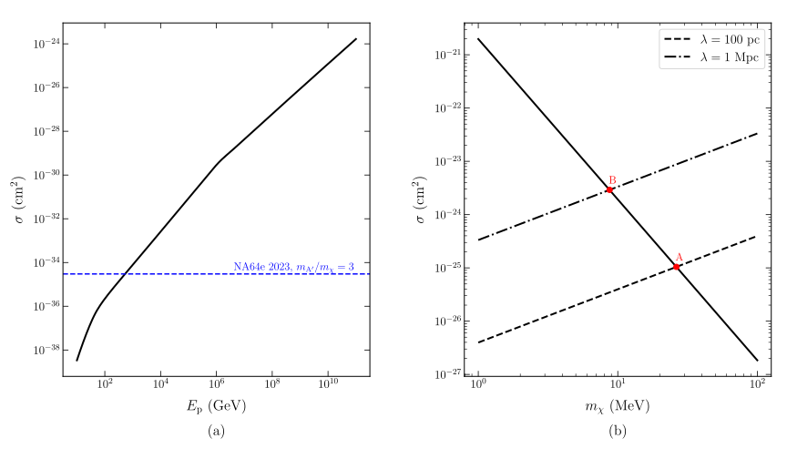
图注：(a)固定暗物质质量25 MeV时，散射截面随入射核子能量的变化。蓝色虚线显示文中所引NA64（2023）在该质量附近的上限。(b)固定入射质子能量10¹⁹ eV时，散射截面随暗物质质量的变化。虚线表示图1给出的环境所需截面估计，并标出与模型曲线的交点。
怎么看这张图：右图交点依赖固定耦合、暗光子质量比及所选环境柱密度，不是暗物质质量的观测后验。左图高能端涉及极小x部分子分布外推；满足首步截面需求仍不能替代完整两步通量与角分布计算。 连接模型截面与环境需求，限定25MeV解释。
来源与置信度：arXiv HTML；source verified；https://arxiv.org/html/2609.26611v1/fig_2.svg
强相关工作
观测动机之一是Telescope Array的BL Lac相关性检验（https://doi.org/10.22323/1.501.0311），而“天照”超高能事件的正式观测发表于Science（https://doi.org/10.1126/science.abo5095）。本篇未重新分析这两套事件，不能把不同动机合成一个新的联合显著性；某事件方向附近缺乏明确源也不单独证明中性接力机制。
截面方法引用Su等（2024）的暗物质深度非弹性散射研究（https://doi.org/10.1103/PhysRevD.110.055014），极小x外推来自Block等（2013）的Froissart界参数化（https://doi.org/10.1103/PhysRevD.88.014006）。本篇将这些构件用于两步宇宙线中继，核心新增是应用机制与环境概率估算。作者致谢明确将原始想法归于S. Troitsky；丝状体联系也引用其既有研究，应保留这种继承关系而不是称为助手独立提案。
同一事件 / 同类源线索：
相似工作：
基础理论 / 方法工作：
相反观点 / 张力线索：
（未提供）
13. Gravitational wave signatures of subsolar neutron star formation in collapsar disks
- 来源：arXiv / astro-ph.HE
- 链接：https://arxiv.org/abs/2609.25225
- 作者：Vishal Baibhav, Valerio De Luca, Loris Del Grosso, Emanuele Berti, Brian D. Metzger, Lam Hui
- 评分：novelty 8/10，importance 8/10，relevance 7/10，final 8.65/10
- 推荐理由：坍缩星盘中亚太阳质量中子星的环境波形有鉴别力，仍依赖尚未发现的形成通道。
中文题目：坍缩星盘中形成亚太阳质量中子星，会留下怎样的引力波指纹
做了什么：质量低于太阳的致密天体若参与并合，并不自动证明原初黑洞。本文研究快速旋转恒星坍缩后，致密吸积盘碎裂并经电子俘获形成低质量中子星的假说，连接形成条件、双中子星在中心黑洞周围的三体运动，以及后续中子星—黑洞并合。作者建立含潮汐、气体阻力、外轨道调制和潮汐破坏截止的近似波形，比较LIGO、Einstein Telescope（ET）和Cosmic Explorer（CE）的理想灵敏度。
结果是有条件的探测预报：多方状态方程下，每颗0.1太阳质量的双星在指定初始轨道上，最优取向视界约为LIGO的36 Mpc、ET的0.57 Gpc和CE的1.8 Gpc；外轨道多普勒和随轨道变化的引力红移可能提供环境证据。数值依赖状态方程、中心黑洞质量、稳定轨道范围及残余气体。文中没有确认新亚太阳质量事件，原初黑洞对照也没有边缘化全部内禀参数。
为什么重要：亚太阳质量搜索的科学意义取决于形成通道是否唯一。冷的普通核物质中子星存在约0.1太阳质量的最低稳定质量，而坍缩星盘的低电子丰度有机会降低局部坍缩门槛。本文把这种形成设想推进到可检验波形，指出质量、潮汐和环境调制应联合解释；但碎裂后的成星效率、双星形成概率和事件率仍未由完整流体模拟确定，不能从可探测视界直接推算实际发现数量。
理论 / 观测 / 仪器方法价值：可复用价值是把环境效应按频率依赖分开：气体阻力主要改动低频相位，潮汐主要改动高频相位，第三体运动叠加随外轨道变化的调制。这样可以设计波形残差和参数退化检验，而不仅比较总信噪比。实际搜索还需要稳定三体轨道、随时间衰减的气体密度、可校准的潮汐破坏波形与完整参数推断；本文逐项效应和Fisher矩阵只是这一流程的起点。
为什么应该关注：坍缩星同时涉及吸积、喷流、伽马暴和可能的超新星对应体，能把引力波形成环境与高能辐射联系起来。最值得关注的是并合相对伽马暴的时延和环境信号是否自洽：盘可能只存在数秒，较宽双星却可延迟数小时至数天并合，因此不能让气体在整个延迟期间保持最初密度。缺少环境调制也不排除该形成通道，因为双星可能已离开盘或气体已经耗尽。
展开详细解读：文章讲解、背景、理论、重点章节、图表与相关工作
文章详细讲解
科学问题：亚太阳质量致密星是原初黑洞、普通核物质星还是自束缚夸克星，需要比质量更丰富的证据。作者设想坍缩星盘先因自引力碎裂，电子俘获降低电子丰度，使部分团块跨过局部有效钱德拉塞卡质量并坍缩。形成后有两条引力波链路：两颗小星先在中心黑洞周围组成内双星，或单颗星及并合残骸最终落向中心黑洞。
作者怎么做：在盘形成尺度上使用Toomre不稳定与快速冷却条件，在恒星结构上比较多方模型、APR/SLy核物质和SQM1夸克物质。在后牛顿频域波形上添加潮汐和气体相位，以外轨道演化计算多普勒、光行差、引力红移、Shapiro延迟和自透镜。探测距离由噪声加权信噪比给出，参数可测性由Fisher矩阵估计；这些层次没有合并为一套从碎裂开始的端到端数值模拟。
关键结果：双中子星波形可很长，低质量又使有限半径和潮汐变形非常显著；中心黑洞引起的多普勒与变化的引力红移在部分参数区可辨识。中子星—黑洞系统更响，但极端质量比压低有效潮汐参数，往往应关注潮汐破坏截止频率，而非单凭潮汐相位。更大的探测距离因此不等于对状态方程更好的测量。
局限和下一步：波形依赖近圆、近似平稳环境和微扰条件，三体动力学、气体迁移、质量增长、自旋相关潮汐及偏心都可能破坏这些近似。原初黑洞比较固定啁啾质量和对称质量比，只优化时间和相位，不能替代全面贝叶斯模型选择。下一步应让气体耗散、盘寿命与轨道演化一致，并用数值相对论和注入恢复验证参数识别，而不是把单项理想可辨识度当成已发现形成机制。
关键结果是怎么做出来的
形成起点是高吸积率盘：黑洞质量约3—30太阳质量、吸积率约0.1—1太阳质量每秒，外侧在满足自引力及快速冷却条件时可碎裂。低电子丰度约0.1或以下降低简化的坍缩门槛，但不是所有碎块都会成为中子星。盘厚、冷却与核过程共同决定结果，作者没有在本文直接模拟完整碎裂和成星人口。
结构模型随后决定能否进入探测频带。理想非相对论中子多方星半径约随质量的负三分之一次方增大；真实冷核物质接近最低质量时半径增长更急。夸克星在绝对稳定奇异物质假说下可自束缚，半径反随质量的三分之一次方变化。图4延伸到0.01太阳质量用的是多方模型，不能当成真实冷核物质星在该质量稳定的证据。
内双星初始分离写成Hill半径的一部分。Hill球只给基本束缚尺度，顺行稳定轨道通常还要求较小分数，某些0.1对5太阳质量配置约需低于0.4；图中0.5等值并不普遍保证长期稳定。宽轨道还可能在外轨道收缩时被中心黑洞拆散，或尚未进入LIGO低频门限就结束。图4的视界曲线必须结合接触、拆散和频带限制阅读。
三体调制由完整外轨道演化计算，不能仅把平均加速度加到啁啾质量上。典型45度倾角例子中，多普勒和变化的引力红移最明显；光行差较弱，Shapiro和自透镜在该例中不足可辨识阈值。常数引力红移与质量缩放退化，只有演化部分形成可辨识残差；各项单独比较所得数值也不能按独立显著性相加。
图11在100 Mpc上用局部Fisher近似研究潮汐和环境密度。低密度情形可能留下更多有效引力波周期，所以并非气体越密越容易测密度；但零气体极限当然没有阻力信号。低于核物质最低质量的可测区域只能对应所指定的其他结构模型。结果须与信噪比门槛、接触边界同时取交集，不能看到小相对误差就宣布该质量可测。
中子星—黑洞的有效潮汐被质量比强烈稀释，ET中也有许多配置不能精确测出潮汐形变。若核物质星在ISCO之外被撕裂，截止频率反可提供结构信息；指定APR、3太阳质量黑洞、100 Mpc的例子达到ET约百分之一、LIGO约百分之十的理想误差。重黑洞或更紧致夸克星可先进入ISCO，不能沿用同样结论。
最后的原初黑洞对照有重要范围限制：保持啁啾质量与质量比一致，指定各自自旋后，仅消去合并时间和相位差。所得残差说明这些指定波形不同，而非所有原初黑洞参数都被排除。偏心、潮汐、环境信号若能在完整推断中同时恢复，将更有辨识力；本文没有执行那一步，也没有从公开候选触发确认新的低质量中子星。
展开背景、理论、公式、模型和章节导读
背景知识
通常恒星核心坍缩产生接近太阳质量量级的中子星，形成历史与静力学允许质量范围不同。核物质状态方程可允许更低的冷平衡质量，但常规恒星演化未必能制造它。坍缩星盘提供另一种压力、密度和电子丰度历史，因此需要分别证明团块形成、坍缩成功与长期稳定，而不是把静态质量半径曲线直接当成形成率。
盘自引力由自身密度与剪切、压力竞争决定。Toomre参数接近一只是局部引力容易胜过支撑，还需要压缩产生的热能足够快散去。中微子冷却、核组分变化和盘厚影响这一条件。高密度吸积盘与普通薄盘不完全相同，采用固定α和厚度的估算主要定位可能区域。
“内双星加外黑洞”是层级三体：小星之间绕转产生高频引力波，质心绕中心黑洞运动调制传播时间和观察方向。只有内外轨道足够分离且满足稳定性条件，双Kepler轨道加微扰才有意义。强共振、接近Hill边界及第三体潮汐可能使简单分解失效。
潮汐可变形性反映外部潮汐场怎样诱导质量四极矩。无量纲量强烈依赖半径与质量之比，因此轻而大的核物质星可能极易变形。大数值不保证可观测：若星体在探测器带外已经接触或破坏，缺少可积累的波形；若伴星是大黑洞，有效组合又会受极端质量比压制。
最优取向视界是某个指定波形恰好达到信噪比阈值的距离，不是平均探测距离或事件率。真实样本还受天区、倾角、搜索模板、背景噪声、宇宙学与形成效率影响。本文的距离曲线有助于安排模型研究，但不能直接宣称下一代仪器将发现多少事件。
基础理论 / 方法脉络
以中心黑洞质量M、单颗小星质量m、恒星半径R和盘厚比H/r区分各个尺度。作者大部分式子用G=c=1，时间和长度可用质量表示；还原物理单位时必须检查G、c的幂次。本文参考参数采用固定α约0.03，而非由磁流体湍流自洽求得应力。
多方星采用非相对论简并中子压力，核物质采用更真实的冷状态方程，夸克物质采用自束缚假设。这三者承担不同任务：简单标度、现实核物质范围和另一类致密物质可能性。不能用多方星延伸范围证明核物质稳定下限被突破，也不能把夸克星作为已确证天体。
引力波频域基线是TaylorF2后牛顿啁啾。气体阻力在低频累积负后牛顿阶相位，静态潮汐在高频进入正五阶及更高项。频率幂次有差异有助于区分，但实际有限频带、质量和自旋误差仍可使它们相关；Fisher局部曲率未必覆盖多峰后验。
外轨道多普勒来自源到观察者的路径差，引力红移来自随时间变化的引力势。光行差改变辐射方向，Shapiro延迟来自光路经过引力势，透镜还改变振幅。小倾角的简化光行差表达含逆正弦因子，其微扰展开会失效，不能将形式发散解释成无限大的真实信号。
NS—BH通道的真空预测只适用于已耗尽气体或离开强盘作用的子集。留在致密盘中的小星可能快速迁移和吸积，质量随时间变化，波形也会被气体耗散改变。内双星与NS—BH对质量增长的近似条件不同，不能把一处的可忽略论证迁移到另一处。
公式与推导
先用标准盘不稳定判据连接形成尺度，而非直接从波形开始：
cs是声速，Ω是局部角速度，Σ是面密度，βc依赖热力学模型、量级可为10。第一个条件涉及自引力，第二个避免压缩热阻止碎裂，二者均不是完整成星充分条件。
电子简并支撑的教学标度是
Ye为每重子的电子数。电子俘获降低Ye，解释轻团块为何可能失去电子支撑；高温、旋转和核压使真实坍缩阈值更复杂。
论文采用的多方质量半径标度及标准潮汐定义给出
k2是无量纲Love数，Λ是无量纲可变形性。若k2近恒，Λ随m的负20/3次方增长；这条简化关系不能取代接近最低质量的真实核物质结构。
在外轨道半径aout上，内双星初始分离定义为
fH是Hill分数，要求内轨道远离接触且动力学稳定。小于一仍不保证顺行稳定；它是后面计算的初始条件参数。
对等质量、近圆、真空内双星，标准Peters并合时间为
四次方依赖解释初始分离小变化为何产生很大时延。加入气体后不能继续把该式当作实际总寿命，还需比较外轨道和盘耗尽时间。
两颗等半径星接触时的轨道频率映射为
这是二倍轨道频率；m=0.1太阳质量、R≈34 km时约92 Hz。半径增大会使信号早截断，故轻星并非无限提供高频潮汐周期。
频域基线与探测量写成
A包含啁啾质量、距离及天区取向，Sn为单边噪声谱。上下限取探测器门限与接触、拆散、破坏或ISCO限制。绝对视界计算必须在A和积分中采用同一取向归一化。
在G=c=1中，等质量近圆双星的简化气体模型给出
I为阻力系数，ρenv是几何单位密度；第二项为特定均匀环境和弱微扰近似。积分到相位后δψDF正比于负的ρenv f的负16/3次方，强调低频，不适用于任意超声速尾流重叠和强迁移。
相对地，领先潮汐相位为
η是对称质量比，Mtot为发射引力波的二体总质量。等质量同结构星有有效Λ等于单星Λ；更高阶潮汐和动态模式属于额外修正。
外轨道路径差产生的领先相位是
ι为外轨道视线倾角。aout和外轨道相位随时间演化，常量延迟及可被质量等参数吸收的部分应拟合消去，不能把原始相位摆幅全当成观测证据。
中子星—黑洞系统令q=m/M，有
第一式展示小q抑制，第二式是本文Roche近似对应的截止频率，须再与ISCO比较。破坏的平滑宽度是现象学设置，不是完整数值相对论结果。
最后用噪声内积定义残差可辨识度：
第二式假设等范数且已做相应优化，Mmis表示失配而非啁啾质量。论文δρ=3阈值在理想两自由度解释下约对应百分之一概率，不是经过搜索试验数校准的3σ发现。best究竟允许哪些参数变化，决定比较能排除多大的模型范围。
模型拟合 / 应用方法
本文不拟合真实事件，输入是指定状态方程、质量、自旋、距离、残余气体比例和初始轨道，输出为理想信噪比、残差及局部参数误差。LIGO采用O4灵敏度并设20 Hz门限，CE采用40 km设计与10 Hz门限，ET-D采用三角构型与2 Hz门限。最优取向视界采用ρ=8，不能直接用作全天平均巡天体积。
Fisher分析以100 Mpc为参考，包含啁啾质量、质量比、自旋组合、潮汐组合、环境密度、时间、相位和距离等十个参数。它依赖高信噪比与近高斯局部后验，靠近探测边缘、物理边界或高度退化区域可能不可靠。外轨道调制没有与这套密度—潮汐分析全面联合，不能宣称所有环境参数已被同时测定。
气体密度常写成初始盘密度乘残余比例，范围约百万分之一到百分之一。盘反馈和耗尽使它成为很大的系统自由度。低密度、宽内轨道的日量级延迟若仍沿用秒量级盘的固定密度，就需额外时间演化论证。无环境残差既可能是真空通道，也可能是气体已散去，不能直接判为原初黑洞。
潮汐破坏通过平滑窗截断波形，宽度设为截止频率的十分之一。该参数化有利于Fisher求导，但真实破坏形态依赖流体、自旋和状态方程。附录的动态潮汐、旋转四极矩、共振锁定及并合后窄带辐射各有额外条件；尤其并合后可见性依赖激发能量和其他阻尼，不能当作保证存在的后续信号。
复现时还要检查幅度约定：正文波形振幅含取向因子，而后面写出的SNR简式没有显式携带相应平方，本稿因此引用作者报告的视界，不声称独立重算已验证绝对归一化。第VI节固定内禀质量的PBH比较也比一般定义的全参数最小化更有限。可靠搜索需要逐一明确优化参数、物理先验、稳定轨道选择及仪器背景，而非仅复用图18阈值。
重点章节 / 结果段落怎么读
-
第II节：从盘碎裂和电子俘获理解形成假说，区分团块、坍缩与冷稳定结构；比较三种状态方程的最低质量和半径。
-
第III节及图4：先画清内双星和外轨道，再核查接触、Hill稳定性、拆散与频带边界如何裁剪视界。
-
第IV节图7—9：追踪多普勒、变化的引力红移及传播效应的相位来源，并核对每幅图固定了哪些质量与倾角。
-
第IV节图10—13：区分低频阻力、高频潮汐和偏心的贡献，Fisher相对误差必须与可探测区域同读。
-
第V—VI节图16—18：理解极端质量比压制潮汐，以及PBH比较仅优化时间和相位的限制。
-
附录A—H：按自旋、捕获、吸积、第三体潮汐、真实状态方程和并合后信号逐项检查主模型省略项，避免把附录探索当作已经联合拟合。
关键图表与解读
图4：两条并合通道的最优取向视界
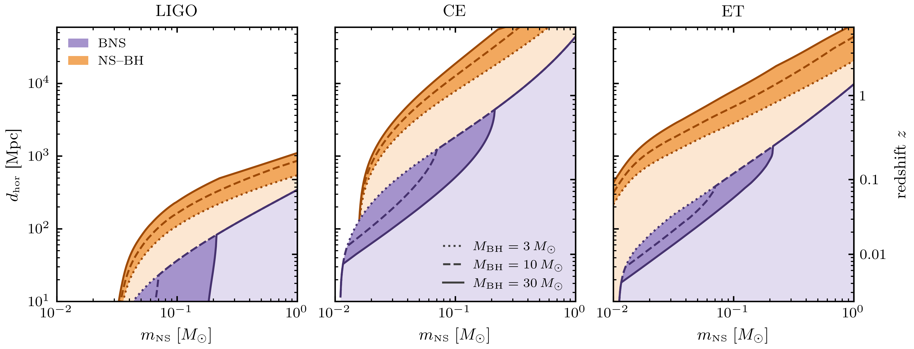
图注：横轴为0.01—1太阳质量的单颗中子星质量，纵轴为视界距离；橙色为中子星—黑洞，紫色为等质量双中子星，采用式(15)多方质量半径关系及Hill分数0.5。三列依次为LIGO、CE、ET；点线、虚线、实线对应3、10、30太阳质量中心黑洞。NS—BH从盘密度10⁸ g cm⁻³对应的碎裂半径出发，在Roche破坏或ISCO处终止，并受探测器低频门限裁剪。深色带为中心黑洞3—30太阳质量间的视界范围，较浅阴影为小于视界的可探测距离。
怎么看这张图：先比较同色曲线在不同探测器中的低质量截断，再比较两条通道。多方模型低于0.1太阳质量的延伸不证明真实冷核物质稳定，最优视界也不是平均探测距离。 连接状态方程、带宽限制和核心探测预报
来源与置信度：arXiv HTML；source verified；https://arxiv.org/html/2609.25225v1/Plots/nsbh_bns_horizon.png
图9：外轨道五种调制的可辨识度
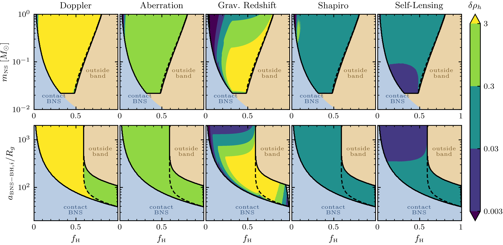
图注：在LIGO视界信噪比8、倾角45度和多方状态方程下，展示Hill分数变化时的视界残差信噪比。五列依次为多普勒、光行差、引力红移、Shapiro延迟、自透镜。上排扫描Hill分数和中子星质量，固定黑洞5太阳质量及外轨道初始340个引力半径；下排扫描Hill分数和外轨道初始半径，固定中子星0.1、黑洞5太阳质量。阴影与边界沿用图7，黑实线界定未在出生时接触且并合或拆散仍在频带内的可探测区。
怎么看这张图：颜色表示单项效应留下的残差，不能把五列当独立发现显著性相加。还须另查三体长期稳定；常数红移可由质量吸收，演化部分才提供这里讨论的识别力。 展示形成环境的主诊断及边界
来源与置信度：arXiv HTML；source verified；https://arxiv.org/html/2609.25225v1/Plots/rho_diff.png
图11：潮汐与环境密度的Fisher可测性
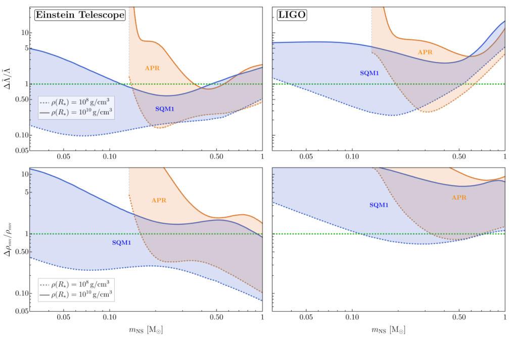
图注：双中子星并合阶段的Fisher参数预报：上排为五阶后牛顿潮汐Love参数，下排为环境密度，横轴均为中子星质量。实线和虚线表示所采用的环境密度范围，蓝色与橙色分别对应夸克物质和核物质状态方程。绿色水平线标记其上方参数不可测的区域。
怎么看这张图：相对误差需与信噪比及稳定质量范围同时判断。低密度可保留更多波形周期，但气体为零不会产生可测阻力；这不是完整联合环境调制的后验。 把理想参数误差与结构假设并列
来源与置信度：arXiv HTML；source verified；https://arxiv.org/html/2609.25225v1/pageplot2.png
图18：指定中子星波形与原初黑洞波形的差别
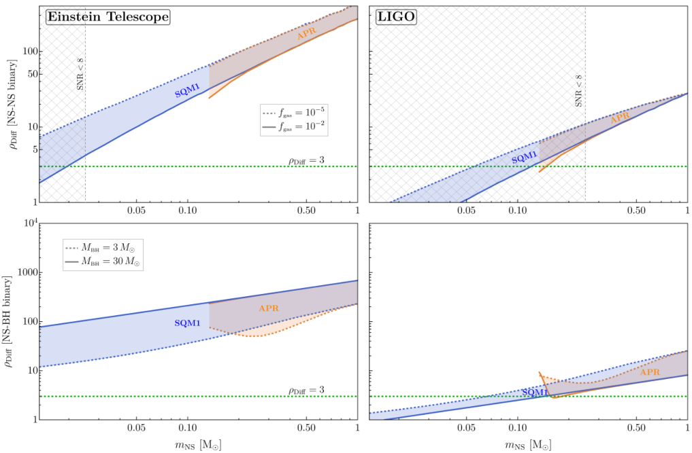
图注：上排比较双中子星、下排比较中子星—黑洞与相同啁啾质量和对称质量比的原初黑洞双星。绿色虚线为残差信噪比3的可辨识阈值；上排阴影标记总信噪比低于8的区域。所选质量范围内，下排NS—BH事件的总信噪比均满足探测条件。
怎么看这张图：第VI节只优化合并时间和相位，内禀质量固定，自旋按指定模型取值。因此曲线支持指定波形可区分，不能解释成对所有PBH参数的排除或已校准的3σ发现。 避免将受限模板比较写成唯一形成机制证明
来源与置信度：arXiv HTML；source verified；https://arxiv.org/html/2609.25225v1/mismatchfull.png
强相关工作
Chen与Metzger的2025年坍缩星盘形成工作（doi:10.3847/2041-8213/ae045d）是本文直接的物理前提，本篇新增的是后续波形和探测预报，并未重新证实盘必然形成这些星。Alexander、Armitage与Cuadra的盘中碎裂/裂变研究（doi:10.1111/j.1365-2966.2008.13706.x）提供更早的动力学背景，但不同环境的冷却和物态不能直接互换。
LIGO—Virgo对O3亚太阳质量致密并合的搜索（doi:10.1103/PhysRevLett.129.061104）提供实际观测约束；本文的视界与可辨识度则依赖新形成模型和未来仪器，不能写成与真实候选的关联确认。Gao等2026年亚太阳质量并合数值相对论工作（arXiv:2607.07668）属于检验近似接触及并合波形的重要对照。两类研究共同强调有限尺寸和物态，但数值相对论的具体初态与本文坍缩星盘环境仍须逐项匹配。
同一事件 / 同类源线索：
相似工作：
基础理论 / 方法工作：
相反观点 / 张力线索：
14. Probing the Mass--Redshift Dependence of Binary Black Holes and its Implications for $H_0$ with GWTC-5.0
- 来源：arXiv / astro-ph.HE
- 链接：https://arxiv.org/abs/2609.25662
- 作者：Yang Liu, Puxun Wu, Jun-Jie Wei, Xue-Feng Wu
- 评分：novelty 7/10，importance 8/10，relevance 7/10，final 8.35/10
- 推荐理由：235例BBH的copula人口与H0检验量化质量红移退化，弱于1至数sigma的相关不能当演化发现。
中文题目：双黑洞质量—红移关联检验：当前样本仍支持独立基准
做了什么：论文用235个GWTC-5.0双黑洞事件进行分层贝叶斯分析，以copula连接函数把主星质量与红移的边缘分布组合为联合分布，比较高斯、Clayton及其三种旋转共五个依赖模型与独立基准。模型分别检验对称相关和不同角落的尾部相关，同时由引力波测得的距离与探测器系质量推断哈勃常数。唯一在模型内部偏好非零参数超过约1σ的是高质量—高红移尾部增强的180°旋转Clayton，但其整体贝叶斯证据仍低于独立模型。
独立基准给出H0=74.3⁺¹³·⁷₋₁₉·⁶ km/s/Mpc，六种模型的68%区间相互重叠，说明在所考察的边缘分布、关联家族及当前误差下，质量—红移依赖没有显著改变H0结论。这不证明双黑洞种群完全不演化，也不证明谱警报器法没有总体系统误差；样本覆盖约z≲1.2，模型依然使用参数化质量谱、红移率及固定平直ΛCDM背景。
为什么重要：谱警报器利用黑洞源系质量分布的特征作为统计红移标尺，因此种群演化可能伪装成宇宙学变化。本文把关联结构单独参数化，在同一事件集上同时检查种群与H0，有助于评估一种具体系统来源。最重要的统计信息是模型内部的小幅非零偏好与模型整体证据并不等价，当前数据没有要求新增关联自由度。
理论 / 观测 / 仪器方法价值：copula先把两个变量变成各自累计分布中的分位数，再在单位正方形上描述依赖。这样能比较高质量高红移、低质量低红移或反向尾部关系，而不预设某个质量峰必须按线性红移移动。实际推断仍须将事件后验去除原先先验、转换探测器系与源系变量，并用注入模拟校正选择效应，否则探测范围本身就会制造表面相关。
为什么应该关注：这项研究适合关注引力波种群和多信使宇宙学的读者：没有电磁红移的黑洞并合也能提供统计距离—红移信息，但标尺来自种群模型。应关注未来样本增长后，边缘分布、尾部关联及波形系统是否同时受检验，而非把当前宽H0区间的相互重叠理解为所有形成通道或哈勃张力问题已经解决。
展开详细解读：文章讲解、背景、理论、重点章节、图表与相关工作
文章详细讲解
科学问题：宇宙早期较低金属丰度可能形成更重黑洞，不同双星通道和并合延迟又能产生相反趋势。因此主星质量是否依赖红移既关乎形成物理，也影响用质量特征估红移的宇宙学分析。观测到远处重系统更多并不足以说明演化，因为较重系统的可探测体积也不同。
作者怎么做：采用幂律加双高斯峰的主质量边缘、给定主质量的次质量幂律、Madau–Dickinson式红移率；在主质量与红移之间加入一个copula参数。用公开事件后验和注入样本构造分层似然，联合采样种群超参数与H0，固定Ωm=0.3065。五种关联模型各只增加一种依赖方向，与关联固定为零的高斯基准比较证据。
关键结果：高斯关联参数约0.01±0.12，与零相容；普通Clayton及90°、270°旋转后验倾向近独立先验边界。180°模型参数0.58⁺⁰·²⁴₋₀·³⁸、Kendall τ约0.22，但相对基准lnB=−1.54；所有新增模型的lnB为负。最稳妥表述是当前样本与无质量谱红移演化相容，而不是发现高质量高红移关联。
局限和下一步：copula的灵活性不等于无模型假设，单个依赖参数不能表达任意多通道或非单调演化。H0统计误差仍大，模型间稳定只能约束这组具体替代模型引入的差别。未来应改变边缘分布、联合考虑更多种群变量及检验注入和波形系统，再判断是否有更细微的演化。
关键结果是怎么做出来的
样本先按假警报率不高于0.25 yr⁻¹筛选，并以源系次星质量后验中位数大于3太阳质量定义双黑洞。另剔除波形依赖强的GW231123_135430，最终235事件。O3及此前采用IMRPhenomXPHM，O4采用带SpinTaylor的版本；这是一组特定样本与波形选择，不能把235当目录全部候选数，也不能忽略分类边界的不确定性。
构模时主质量是低质量平滑截断的幂律与两个截断高斯峰混合，次质量在主质量以下归一化。红移率乘共动体积元并除以1+z，换成探测器时间内的事件分布。copula直接耦合主质量与红移，次质量只通过主质量间接关联；它并未独立拟合次质量、旋转和红移的全部联合结构。
分层推断用每事件后验样本重加权，除去事件参数估计的参考先验，再减去Nobs倍探测分数的对数。探测分数由经过搜索管线的注入模拟、采用与事件一致的阈值估算。这一步把仪器偏好与天体真实分布分开；只看事件质量—距离散点或后验中位数相关性不能替代它。
表2给高斯θc=0.01±0.12，普通Clayton及90°、270°旋转的68%参数上限分别0.06、0.05、1.07。这些Clayton先验从0.01开始，严格独立点0未在连续先验内，因此后验靠下界意味着趋近独立；应通过单独独立模型证据比较，不将边界外的零与近高斯误差机械换算成发现σ。负相关旋转的Kendall符号也应按旋转方向理解，表中正数上限不应误作正相关检测。
180°旋转模型增强高质量、高红移联合尾部，最佳参数图可看见差别，但边缘分布仍很接近基准。固定边缘参数时copula按构造完全保留边缘；不同模型重新拟合边缘参数后，后验边缘仍可能略变，图4的相似并非数学上必须逐点相同。最佳点的二维增强也不是局部观测显著性地图。
H0六模型均值在72.7—84.7 km/s/Mpc间，最大均值移动约10，小于当前一侧约14—24的68%误差。模型证据相对基准分别−2.01、−3.41、−3.67、−1.54、−1.76，均不支持增加该类依赖；贝叶斯因子取决于先验体积和模型家族。当前结果限制的是这些形状在所测红移范围中的必要性，不是所有物理演化的不存在。
展开背景、理论、公式、模型和章节导读
背景知识
引力波相位主要测到被宇宙膨胀红移后的质量，而振幅提供光度距离。如果没有电磁对应体或可靠宿主，单个事件通常无法把源系质量与红移完全分离。谱警报器利用许多事件共享的质量峰或截断统计推断红移，再连接宇宙学距离关系。
这种方法类似一个统计标尺，但标尺由天体种群构成。金属丰度、恒星风、双星相互作用及分层并合都会改变黑洞质量，且形成到并合之间存在延迟。若质量特征随宇宙时间移动，忽略它可能把种群变化误当宇宙膨胀，所以需要联合检验。
边缘分布描述一个变量自身的频率，例如质量谱有哪些峰；联合依赖描述在给定红移时哪些质量更常见。两个模型可以有完全相同的质量和红移直方图，却在二维平面上排列不同。copula正是用分位数空间把这种排列关系单独表达出来。
参数后验和模型证据回答不同问题。某个带关联模型内部的最佳参数不在零附近，不代表整个新增模型优于简化模型；证据要在先验范围内平均似然，惩罚只有很小区域适合数据的额外自由度。更复杂模型不获支持也不证明自然界精确独立，只说明当前数据尚未要求它。
基础理论 / 方法脉络
Sklar定理把连续联合累计分布写为两个边缘CDF的函数。将质量和红移映射为u、v分位数后，独立情况在单位正方形上密度恒为1；非均匀密度表示某些分位数组合更常发生。这里独立的是统计形状的参数化，不意味着从有噪声、受选择样本中估计它们时完全互不影响。
高斯copula主要描述对称秩相关；Clayton有低端尾部依赖，旋转后把增强移到其他角。180°对应高质量高红移，90°和270°对应反向角。尾部依赖是一个极限概率性质，不等于观测到单个极端事件就能证明该模型，也不是简单Pearson线性相关的同义词。
探测器看到的事件分布是天体分布乘检测概率。高质量并合可在更远处看到，距离误差又与质量和倾角相关，因此必须使用完整后验和注入校正。分层似然对每个事件积分，不将其缩成一个精确质量—红移点，这是减少伪相关的关键。
宇宙学在变量变换与红移体积元中同时出现。H0变化会改变给定距离对应的红移，从而改变源系质量；质量谱形状和H0因此存在退化。固定Ωm及平直ΛCDM是本文有意缩减自由度的选择，所得H0误差并未覆盖任意宇宙学背景。
公式与推导
以下以原文式(1)—(22)中决定推断的关系组成连续链。为避免原文雅可比下标方向造成误读，这里直接写出两个变量空间的变换方向。
观测量与源量满足
$a=1,2$表示两颗黑洞。引力波提供探测器系质量和距离；需要种群标尺与宇宙学共同确定z。
用边缘CDF定义分位数后，
连续变量下u、v各自均匀，但可以相关。copula C承载二者的联合排列，不替代边缘质量谱和红移率模型。
两次微分得到
$c=1$恢复独立；copula对任一分位数积分为1，所以固定边缘输入时不会改变边缘归一化。
原始Clayton为
$\theta_c>0$，趋零是独立极限。180°旋转密度$c_C(1-u,1-v)$将低端依赖移到高端；90°、270°旋转的秩相关符号为负，不能沿用未旋转的正号。
红移边缘先写成探测器时间的天体率，
$R(z)$是源系时间、共动体积内并合率，$1+z$处理时间膨胀。它尚不是检测后的直方图，后者还需仪器选择函数。
由源变量变到探测器变量的体积因子是
两个质量各贡献一个红移因子，距离再贡献导数。这使不同H0假设下的事件后验重加权保持概率体积一致。
边际化总率后，分层对数似然为
$\pi_{\rm PE}$是生成事件后验时的参考先验。除它才能恢复似然加权；$\xi$控制该种群有多容易被探测，否则高可见体积群体会被过度解释。
注入估计为
分母是注入抽样分布，$N_{\rm gen}$包括所有生成注入，不是只计已检出者。阈值需与事件样本一致，有限注入的有效样本量也影响积分精度。
最后比较模型用
180°模型虽然参数后验偏离独立方向，却有$\ln B=-1.54$，相对证据约为$e^{-1.54}\simeq0.21$。这是两指定模型的证据比，不是“独立为真概率79%”，后者还需要模型先验及更完整模型集合。
模型拟合 / 应用方法
质量边缘MultiPeak含幂律斜率、低高质量边界、平滑尺度、两个高斯峰及混合比例，红移率还有上升、下降和转折参数。copula只是额外一参数；“无需预设条件质量分布形式”不代表非参数分析，因为联合条件分布仍由这些边缘与copula共同限制。若不同形成通道导致非单调结构，单一家族可能无法表达。
H0先验均匀10—200 km/s/Mpc，Gaussian θc均匀−0.9—0.9，Clayton及旋转均匀0.01—10。后者对应不均匀的Kendall τ先验，证据会受范围影响，正文未展示全面先验敏感性或不同边缘家族扫描。接近下界的后验应报上限与近独立，不能将截断分布当作对称高斯作显著性换算。
事件似然通过公开后验样本重要性重加权，选择函数通过注入同样重加权，方法上包含探测偏差。正文没有列出所有超参数区域的有效注入样本量、积分方差和采样收敛诊断，本解读不补造它们。剔除波形敏感事件及不同观测期波形选择减少特定风险，但未量化所有波形系统误差如何传到关联和H0。
图3使用最佳参数联合分布，图4给边缘中位数与68%带；二者分别是点估计和后验摘要，不可混为同一可信区域。H0区间是给定模型下的贝叶斯后验区间，文章以CL表述，本解读不将其等同频率学覆盖保证。六模型相容说明当前误差下该组替代模型影响小，尚不能用于证明未来高精度分析没有种群演化偏差。
重点章节 / 结果段落怎么读
-
第II节图1在分位数空间理解四个角的尾部依赖，分清秩相关与普通质量—红移散点斜率。
-
第III.1节检查边缘分布、次质量条件分布及固定宇宙学参数，明确copula灵活性的边界。
-
第III.2—IV节沿事件后验、雅可比到注入选择校正，并核对235事件筛选口径。
-
第V节表2和图2同时看参数后验与lnB，理解180°模型的轻微非零偏好为何不等于模型获支持。
-
图3—4比较联合和边缘后验，再把H0一致性限制在当前样本及所测试模型家族内。
关键图表与解读
图2
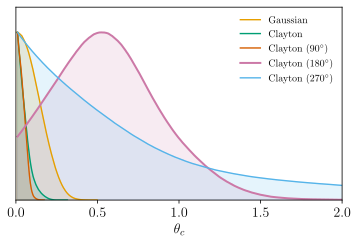
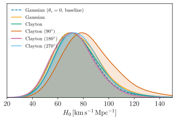
图注：六种双黑洞种群模型的copula依赖参数θc及哈勃常数H0的一维边际后验分布。
怎么看这张图：同时看参数边界和H0区间，再回表2核对贝叶斯证据。180°模型的参数轻微非零偏好没有使整体证据超过独立模型；Clayton先验下界为0.01，靠边应理解为趋近独立。 直观展示主结论与模型间H0相容性。
来源与置信度：arXiv HTML；source verified；https://arxiv.org/html/2609.25662v1/posterior_theta_c.svg；https://arxiv.org/html/2609.25662v1/posterior_H0.svg
图3
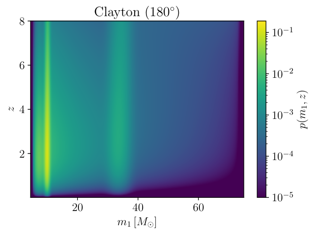
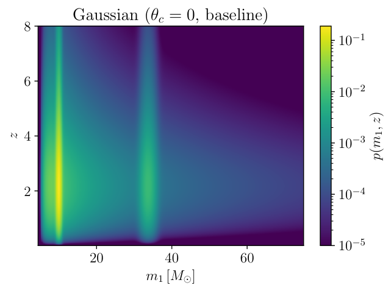
图注：在各自最佳拟合参数下计算的源系主星质量与红移联合分布。左为180°旋转Clayton copula模型，右为独立基准模型。
怎么看这张图：左图高质量高红移区域的增强是一个最佳参数预测，不是观测显著性地图。边缘分布接近仍可容纳二维依赖差别，需结合模型证据决定是否值得引入。 说明依赖结构而非一维质量谱的变化。
来源与置信度：arXiv HTML；source verified；https://arxiv.org/html/2609.25662v1/pm1z_R180Clayton.png；https://arxiv.org/html/2609.25662v1/pm1z_baseline.png
强相关工作
谱警报器背景可对照Farr等（2019，https://doi.org/10.3847/2041-8213/ab4284），copula数学采用Nelsen《An Introduction to Copulas》（https://doi.org/10.1007/0-387-28678-0）。本篇将这一统计构造用于质量—红移与H0联合检验；它不提供独立电磁红移，也没有更改引力波本身的距离测量方法。
分层实现采用icarogw方法文献（https://arxiv.org/abs/2305.17973），选择效应使用目录配套注入，相关方法见Essick等（https://doi.org/10.1103/44x3-hv3y）。关于演化，论文与Lalleman等（2025，https://doi.org/10.1051/0004-6361/202553941）的未见显著演化结果方向一致，也讨论其他参数化和非参数研究的不同趋势。由于样本、边缘和依赖模型不同，这属于条件结论的比较，不能简单说已推翻此前所有演化证据。
同一事件 / 同类源线索：
相似工作：
基础理论 / 方法工作：
相反观点 / 张力线索：
（未提供）
相关但非 HE 的重要论文
1. Testing deep learning techniques for event reconstruction in pair-production gamma-ray telescopes
- 来源：arXiv / astro-ph.IM
- 链接：https://arxiv.org/abs/2609.26350
- 作者：Mattia Maniscalco, Valentina Fioretti, Nicolò Parmiggiani, Andrea Bulgarelli, Carolyn A. Kierans, Adrien Laviron, Gabriele Panebianco, Alessio Aboudan
- 评分：novelty 8/10，importance 9/10，relevance 10/10，final 9.05/10
- 推荐理由：AMEGO-X成对转换径迹GNN检验接受度与角分辨率取舍，直接服务伽马探测器重建；真值辅助聚类及仿真到实测边界关键。
中文题目：AMEGO-X径迹图网络测试：重建接受度与角分辨率的取舍
做了什么：作者以AMEGO-X概念探测器的完整质量模型，模拟30、50、100 MeV光子的正入射和30°离轴电子对产生事件，将硅径迹簇表示为节点、候选连接表示为边，比较GraphSAGE与Interaction Network两种图神经网络。网络负责判别连接，之后仍需剪枝、补接、两径迹提取和几何拟合才能估计入射光子方向。在所测配置中Interaction Network给出更好的中心性能值，例如50 MeV正入射的68%包容角约4.74°，有效面积约378 cm²。
这些结果尚不能称为全面超过传统重建。文章引用的传统50 MeV结果约3.5°、330 cm²，意味着更多接受事件伴随更宽点扩散函数；30 MeV时图网络约240 cm²还低于传统约250 cm²。更重要的是，前处理用模拟真值把同一粒子相邻像素聚在一起，假定真实数据可以正确分开转换顶点附近两条径迹。当前证据支持图网络作为模式识别模块的潜力，尚未验证真实读出的端到端性能或点源灵敏度改善。
为什么重要：MeV电子对在材料中的多重库仑散射很强，低能径迹弯折和断裂使规则追踪困难。图表示能保留不规则三维关系，因此是值得尝试的连接识别方法。本文的价值在于把边分类指标接到整事件的点扩散函数和接受面积，让读者看到局部分类改善不必自动变成更好的角重建，也暴露了后续物理拟合仍需加强。
理论 / 观测 / 仪器方法价值：可复用流程是宽松构图保留真连接、用验证集选择分类阈值、再施加物理拓扑和顶点选择。比较应同时报告径迹连接精确率、召回率、事件接受度、经验68%包容角及拟合PSF尾部；只报告网络准确率无法判断天文学收益。应用时还必须替换真值辅助聚类，并在相同模拟样本和事件选择下与传统方法比较。
为什么应该关注：对伽马探测器重建，本文提供了如何把机器学习输出转换为仪器响应的具体例子。与IACT或LACT相关的可迁移点是评价口径：局部分类分数不是点源发现显著性，接受度与背景、角分辨率需要联合优化。这里是空间电子对望远镜，不能把它的硅层图结构或MeV性能数值直接移植到空气簇射成像。
展开详细解读：文章讲解、背景、理论、重点章节、图表与相关工作
文章详细讲解
科学问题：电子与正电子产生后沿硅层传播，但30—100 MeV范围多重散射会使轨迹偏离直线，且被动材料、跨塔边界和缺失命中导致断段。传统Kalman拟合有明确的传播和散射模型，图网络则擅长全局连接判断。作者要检验后者能否改善低能配对追踪，而不是直接从原始像素端到端预测源坐标。
作者怎么做：使用四塔、每塔40层的AMEGO-X质量模型，每层间距1.5 cm，像素横向0.5 mm、硅厚0.5 mm。模拟命中先被真值辅助聚类，再向下游最多四层建立候选边，经几何剪枝后输入网络。两种网络都输出二元边分数，Interaction Network显式更新边和节点，GraphSAGE主要聚合邻居节点，最后与原始边特征一起分类。
关键结果：Interaction Network在各测试点的经验包容角和有效面积中心值均优于GraphSAGE；100 MeV正入射的边召回率约95%、精确率约90%。但低能和离轴拓扑更复杂，性能下降。相对引用的传统重建，GNN的PSF整体更宽，50与100 MeV接受面积更大，30 MeV则略低。这是当前管线的取舍，不是对所有传统算法的统一胜出。
局限和下一步：真实数据中的两轨迹簇重叠尚未进入挑战；最终方向采用线性几何拟合，没有显式多重散射协方差。用相同模拟生成训练和测试可检查统计泛化，却不能证明现实探测器的噪声、坏像素、标定漂移和材料误差均已覆盖。作者也将物理约束的拟合、构图和更低能推广列为后续工作。
关键结果是怎么做出来的
第一步理解数据选择。模拟仅取首次物理过程为径迹器内电子对产生、转换点位于有效体积的事件。每个能量与倾角配置约七万事件用于训练数据准备，另生成独立百万级测试入射事件。测试最终约100 MeV一万五千、30 MeV四千个重建配对事件；有效面积分母必须是所生成入射光子，不能用已预选的可重建电子对作分母冒充完整效率。
第二步检查真值进入哪里。相邻像素只有在属于同一模拟粒子轨迹时才聚为簇，位置用沉积能量加权。作者明确假定已有算法可正确分开顶点附近两条轨迹，因此研究有意隔离底层聚类歧义。这不是给网络偷看测试标签的简单断言，而是整个输入任务被理想化；迁移到真实读出时必须单独验证该前提。
第三步训练二元边分类。正负边不平衡，用负边数与正边数之比提高真边损失权重。验证平均精确率连续十轮不改善就早停，保存最佳模型，最终阈值由验证集F1最大值确定。该操作优化边分类折中，不等价于优化点源灵敏度；加权训练后的sigmoid输出也未展示概率标定，不能直接称为每条边的校准后物理可信度。
第四步从边到事件。阈值后的图仍可能分叉，算法按链长度和连续性选边，近似保持每节点一入一出；随后几何补接断链、处理塔边界，再选择两条主链。各径迹在XZ与YZ平面作直线拟合，最近距离小于0.5 cm才保留，并用接近顶点的命中重拟合减少累积散射。这个选择改善PSF，同时损失有效面积。
第五步读取整事件结果。Interaction Network正入射在30、50、100 MeV的经验CR68分别为7.48±0.59°、4.74±0.29°、2.67±0.13°，面积约240、378、449 cm²；30°离轴对应8.75±0.57°、5.48±0.37°、3.08±0.18°，面积约186、339、411 cm²。100 MeV正入射与GraphSAGE的2.69±0.16°高度重叠，中心值较好不代表统计显著优越。
第六步和传统结果比较时保持诚实口径。引用传统正入射PSF约5°、3.5°、2.5°，面积约250、330、400 cm²。论文文字称图网络面积系统性更大，但表值与其引用的30 MeV基准不支持“所有能点”说法。这里明确保留该例外，也不把跨研究引用当作同一事件集、同一最优阈值的受控比赛；最终灵敏度还缺少背景建模。
展开背景、理论、公式、模型和章节导读
背景知识
电子对望远镜通过光子转为电子、正电子后的轨迹推断原方向。转换增加探测概率，却也引入物质；传统高Z转换箔利于产生电子对，同时加强低能多重散射。低被动材料硅像素结构有利于保留方向信息，但不会消除粒子本身的随机偏转。
图神经网络把不规则数据表达为节点和边。节点可携带位置、沉积能量和层号，边携带位移或候选关系，消息传递让一个局部连接利用附近拓扑信息。这特别适合断裂和弯曲轨迹，但网络只能从候选图中选连接；构图漏掉真边后，分类器本身无法将它恢复，必须靠后处理补接。
精确率说明保留边里有多少是真的，召回率说明真边找回多少。两者均是局部连接指标。某条关键顶点边断掉可能毁掉一个事件方向，而远端多个边正确未必补得回来，因此同样的边F1可对应不同的天文PSF和有效面积。
PSF是重建方向相对真实方向的分布，68%包容角只描述其中一个分位数，不完全代表尾部。有效面积把几何入射面积和所有选择后的接受比例合起来。增加事件数却扩大PSF可能带来更多背景；只有在具体源谱、背景和曝光下合并这些量，才能判断灵敏度是否提高。
基础理论 / 方法脉络
多重库仑散射的典型角度随粒子动量降低而增大，且材料厚度以辐射长度度量。电子对中两粒子能量分配不相等，低动量分支尤其易偏转；正确方向应尽可能利用靠近转换点、尚未积累许多散射的命中。这就是作者最后局部重拟合的物理动机。
两网络的区别集中在关系如何更新。GraphSAGE用邻居均值更新节点，再分类端点对；Interaction Network同时让边表示随两端节点改变，并反馈到节点。显式关系更新可能更适合路径判断，但其效果还依赖输入特征、训练规模和后处理，不能仅凭架构名称推导必然优越。
从两径迹到光子方向近似利用动量守恒，将电子与正电子方向按动量权重相加；未观测核反冲、能量估计和散射都会引入误差。正文提到加权矢量和，但没有充分给出最终权重的独立性能分解，不能把它写成已验证的逐轨迹真实动量估计。
经验分位数与Double King拟合提供两种PSF摘要。前者直接数事件，后者用含核心与尾部的模型平滑形状；二者接近是形状描述的检查，却不证明训练样本代表真实仪器。双King的约化χ²只检验给定分箱分布的拟合，不能替代所有系统误差验证。
公式与推导
下列公式按材料散射→边分类→事件响应顺序连接。损失、精确率、召回率和有效面积来自本文；散射标度、方向合成与灵敏度关系明确为教学补充。
多重散射的常用近似为
$p$为粒子动量，$\beta c$为速度，$x/X_0$为材料辐射长度比例。它说明低动量或较厚材料的方向模糊更强；复杂电子能损及非高斯尾不完全由这一个宽度描述。
网络logit经
转为0—1分数，再与验证集阈值比较。分数可排序，不等于已经经过概率标定的真实后验；尤其下一式人为改变了类别权重。
原文式(1)的加权损失为
$y_i$是模拟真边标签，$w_p$取训练负边数与正边数之比。这样漏掉真边代价更大，缓解多数负边压倒训练的问题，但最优分类阈值仍需验证集确定。
局部分类指标为
本文用F1选边阈值。这里统计单位是边，不是光子事件，故95%召回率不能替代95%伽马探测效率。
理想动量合成的教学形式为
两条单位方向应尽可能取顶点附近，权重是各粒子动量；现实中还需处理核反冲与动量估计。本文使用加权方向和，但未由此证明恢复了所有不可观测的反冲信息。
逐事件角误差和包容半径定义为
球面夹角避免直接把两个角坐标差作欧氏距离。经验CR68由累计分布求得，Double King则由拟合分布积分求得，二者需分开报告。
原文式(2)给出
分母必须对应生成平面上的全部入射模拟，分子经过配对、重建和DCA选择；如果仅在真值预选事件内算效率，需另乘预选接受率才能恢复同一口径。
在均匀背景、背景占优且相同能谱响应的简化教学极限，
这里背景立体角近似正比$r_{68}^2$，且假设信号与背景接受面积以同样方式变化。真实仪器未必满足这些条件，公式只说明面积和PSF要一起评价，不能从更大面积单独推出点源灵敏度提高。
模型拟合 / 应用方法
训练与测试按独立模拟样本评估，验证AP用于早停、验证F1用于阈值选择，这有助于避免直接拿测试集选最佳阈值。但论文没有给出跨随机种子、跨材料或读出系统扰动的完整误差预算，也没有证明训练配置之间的能量、角度插值。30、50、100 MeV与两个方向是离散基准，不能据此发布全能区全视场响应。
后处理含多项几何规则：最多跨四层连接、去掉可由中间有效层替代的捷径、一入一出约束、按链长保留连接、跨塔补接以及DCA<0.5 cm。这些共同塑造最终性能，因此不能把全部面积或PSF变化归因于网络边更新单一因素。若要比较架构贡献，需要保持相同后处理并做消融，本文未展示全面消融矩阵。
方向拟合仍是XZ和YZ中的直线及顶点附近重拟合，未显式传播材料造成的散射协方差。Kalman方法的优势恰是将传播和测量误差合并；图网络较好的模式识别可以与这样的物理拟合互补。作者将其列为改进方向，当前结果不能预先计入未来可能改善。
PSF同时给经验CR68和Double King拟合CR68，表中约化χ²大致在可接受范围，例如IN正入射30 MeV为1.27、50 MeV0.63、100 MeV0.79。没有报告有效面积的完整系统误差及共同模拟比较，跨论文的传统基准只能作为背景参照。最先需要补验的仍是真实聚类、非理想读出与背景选择，而非继续只优化边F1。
重点章节 / 结果段落怎么读
-
第2节了解硅层、像素和被动材料，建立多重散射限制方向的物理尺度。
-
第4.1节逐句核对真值辅助聚类及向下游构图，识别这次测试实际解决和暂时理想化的任务边界。
-
第4.2—4.3节从加权损失到剪枝、补接、DCA和局部拟合，理解网络仅是整管线的一部分。
-
第5节表1、2先比较同样流程下两网络，再核对传统参考值；尤其不能忽略30 MeV面积例外和100 MeV误差重叠。
-
结论核查多重散射物理拟合与低能构图仍为未来工作，不把潜力当作当前性能。
关键图表与解读
图5
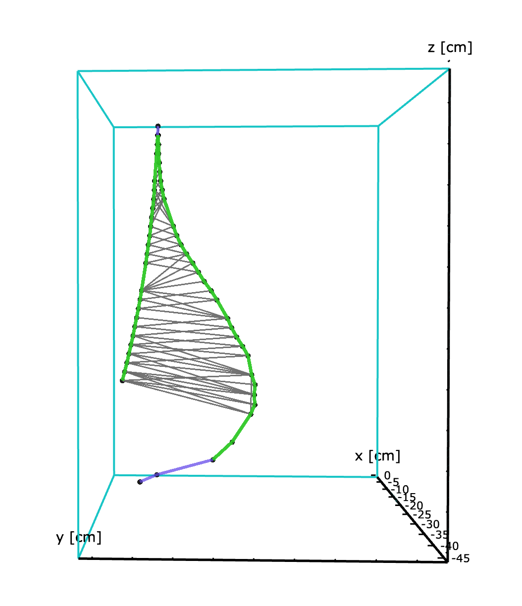
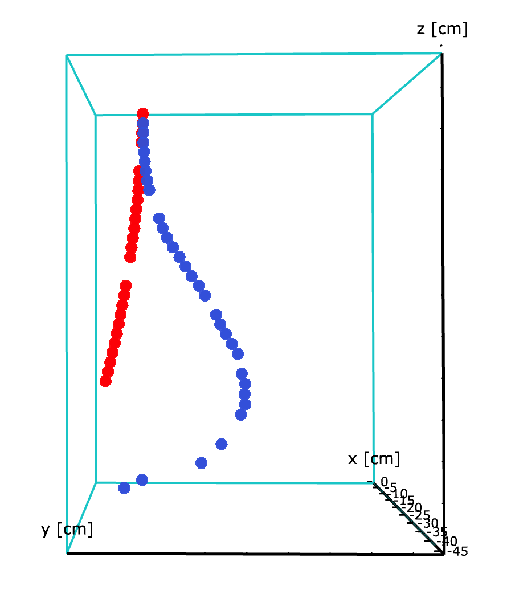
图注：100 MeV电子对事件的重建图示。青色线为径迹器塔的边界。左：GNN分类和径迹提取后的输出；黑点为探测命中簇节点，绿边是被正确识别为真实轨迹的连接，灰边是真负例，紫边是属于真轨迹但未被网络识别的假负例。右：对应两条轨迹的模拟真值，电子为蓝色，正电子为红色。
怎么看这张图：对照真值寻找断段与误分类，但不要用一个成功示例推断整体效率。前处理已经用模拟真值帮助分开簇，因此这张图尚未验证真实像素重叠的端到端重建。 展示模型实际作用的边分类和轨迹层级。
来源与置信度：arXiv HTML；source verified；https://arxiv.org/html/2609.26350v1/reco_graph.png；https://arxiv.org/html/2609.26350v1/true_graph.png
图8
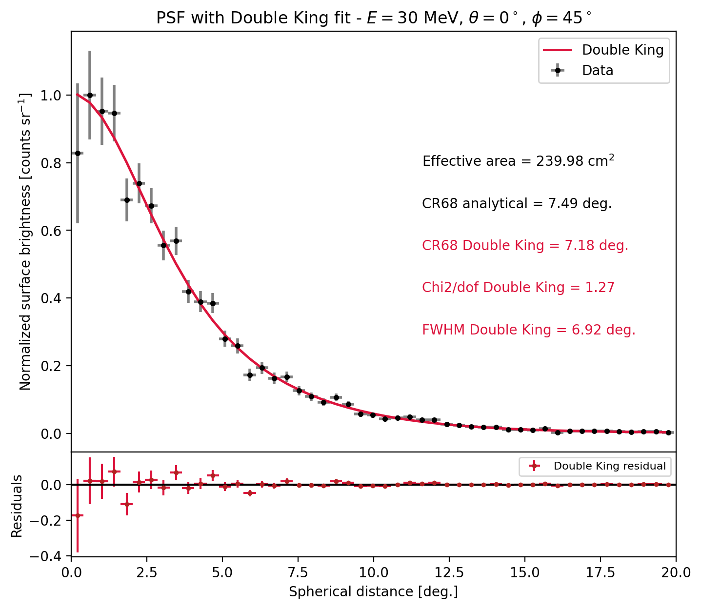
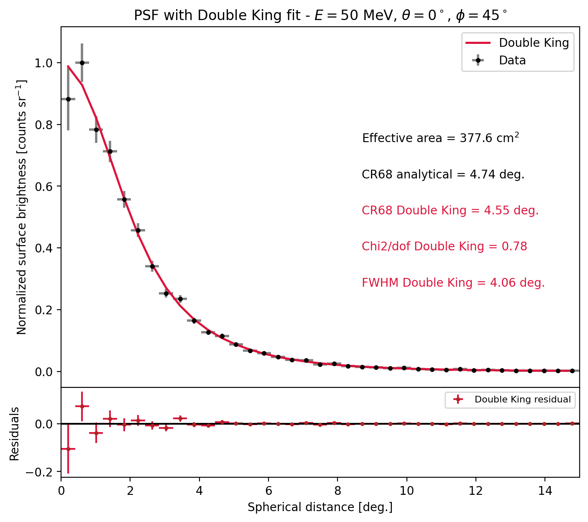
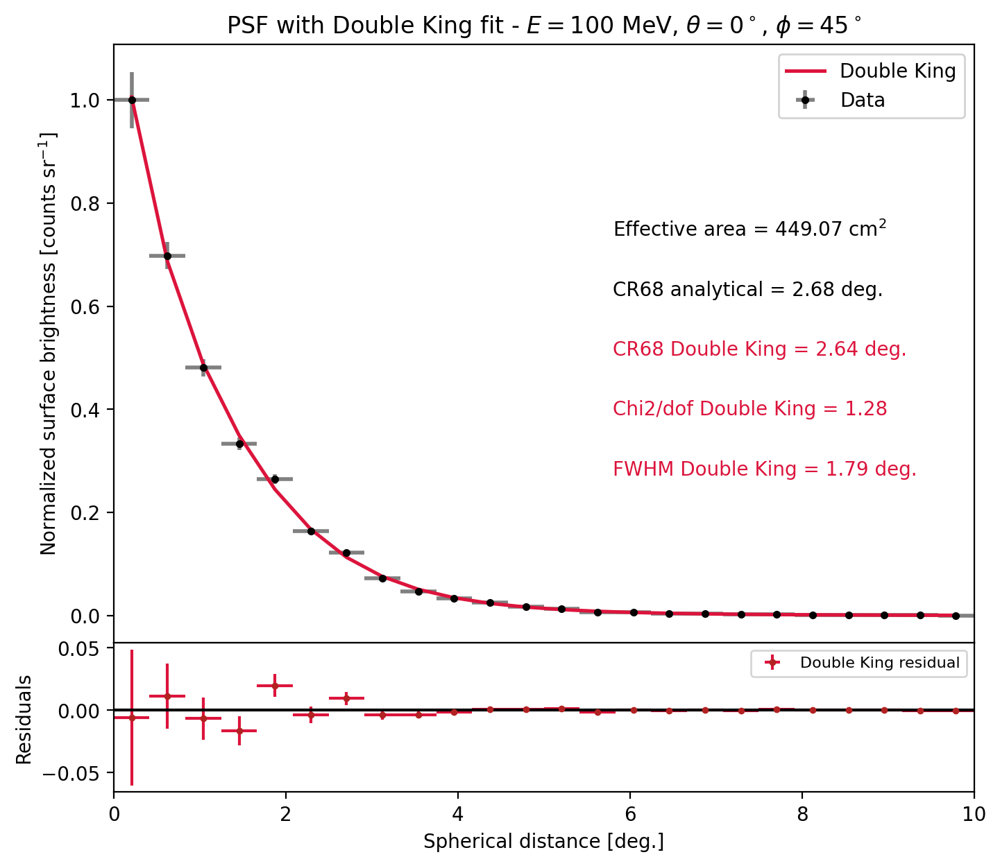
图注：Interaction Network模型在30、50和100 MeV下得到的重建点扩散函数分布，分别对应(a)、(b)、(c)。红线为Double King分布拟合。
怎么看这张图：沿能量比较核心和尾部，并结合表1经验68%包容角及有效面积。拟合曲线仅描述当前模拟PSF，不等于已证明点源灵敏度优于传统方法。 呈现整事件角响应而非仅网络指标。
来源与置信度：arXiv HTML；source verified；https://arxiv.org/html/2609.26350v1/reco_psf_king_30MeV_theta0.png；https://arxiv.org/html/2609.26350v1/reco_source_theta_phi_refit4_psf_king_50.png；https://arxiv.org/html/2609.26350v1/reco_source_theta_phi_refit4_psf_king_100.png
强相关工作
仪器与传统参考来自Caputo等（2022）AMEGO-X任务概念（https://doi.org/10.1117/1.JATIS.8.4.044003），PSF形式沿用Fermi-LAT响应标定工作（https://doi.org/10.1088/0067-0049/203/1/4）。本研究没有新的在轨数据，跨文章基准也并非严格同一事件集比赛；它主要为较少被動材料的像素径迹器探索另一种模式识别模块。
两种网络分别继承Battaglia等的Interaction Networks（https://arxiv.org/abs/1612.00222）及Hamilton等的GraphSAGE（https://arxiv.org/abs/1706.02216）。这些是通用关系学习架构，本篇新增的是MeV电子对图构建与仪器响应验证。与Kalman追踪是可组合的方法关系，而不是已经证明新架构可以省去散射物理或替代所有传统重建。
同一事件 / 同类源线索：
相似工作：
基础理论 / 方法工作：
相反观点 / 张力线索：
（未提供）
说明
评分由 LLM 给出初评，再由本地阈值策略过滤；IACT、TeV 伽马射线和高能中微子天文学按重点方向处理。